| 女子寮の寮長になった俺は、ご当地女子と青春できるだろうか 2 | |
| 城崎火也 | |
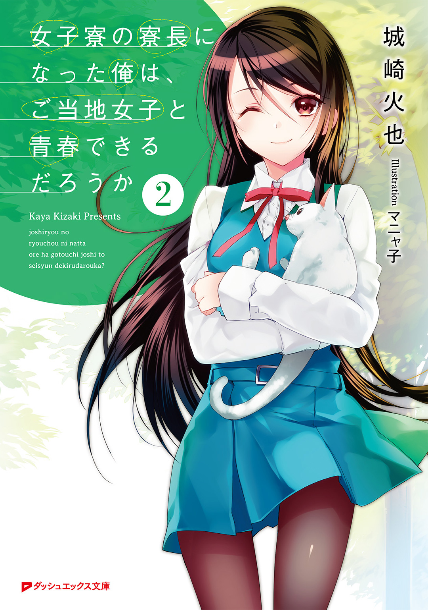
この本は縦書きでレイアウトされています。
また、ご覧になる機種により、表示の差が認められることがあります。
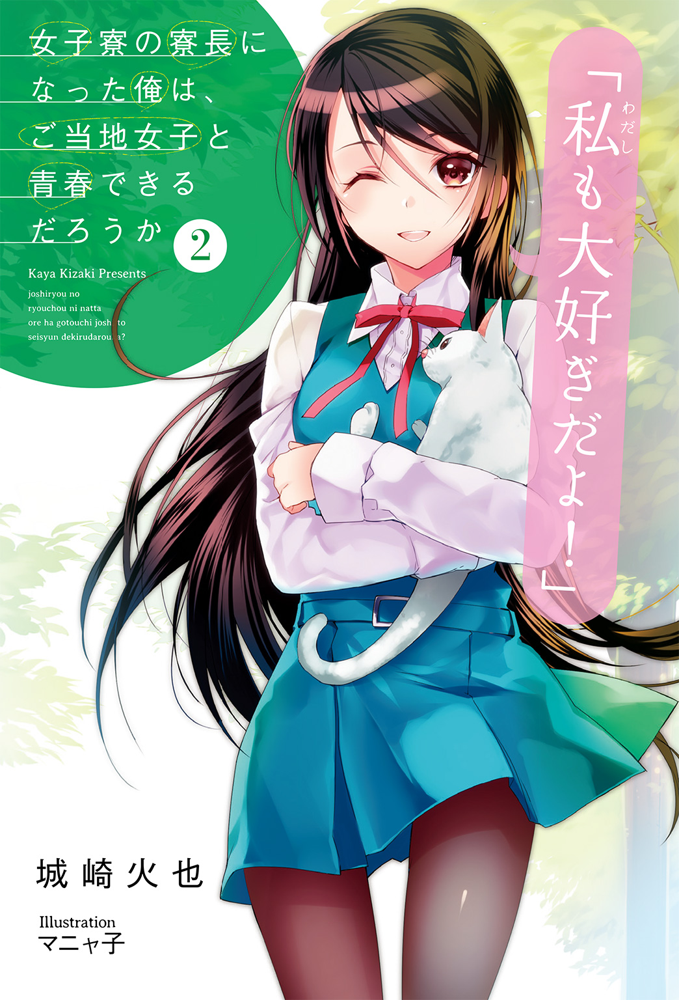
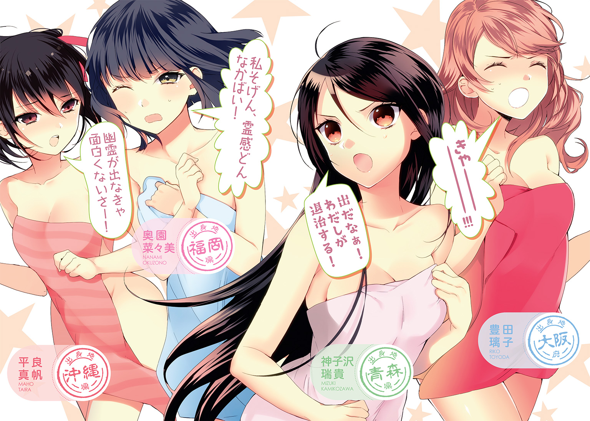
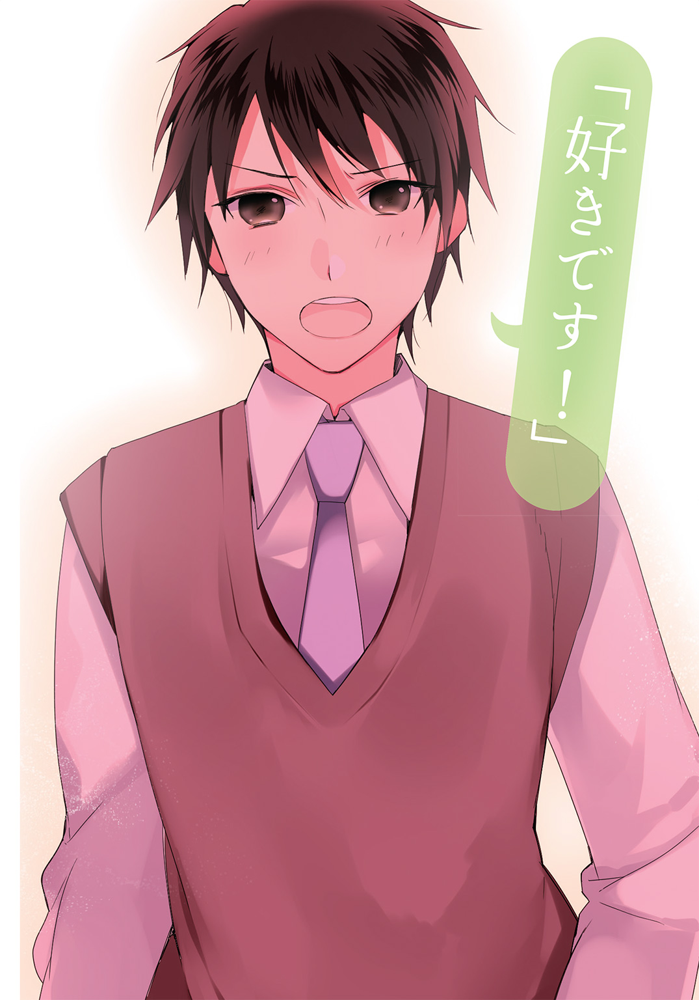
 ダッシュエックス文庫DIGITAL
ダッシュエックス文庫DIGITAL
女子寮の寮長になった俺は、ご当地女子と青春できるだろうか２
城崎火也
プロローグ
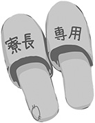
「寝たらあかん！」
切れ味鋭い大阪弁の一言に、うとうとしていた五十嵐春人はハッと目を開けた。
こちらをじいっと睨んでいるのは、明るい色の髪をした、気の強そうな女の子――大阪出身の豊田璃子だ。
やばい、寝落ちしかけていた。
春人はずり落ちたブランケットを慌ててたぐり寄せる。まだ春先で夜は寒いのだ。
時間はもうすぐ夜中の一時。寮の推奨就寝時間は十一時。
本来なら、各々の部屋でもう寝床に入っている時間だ。
だが、春人を含む寮生五人は一階のレクリエーションルームで車座になっている。ちょっとした異常事態だ。
「起きてるよ」
自分でも言い訳めいている。しっかりしないと、寮長なのだから。
「だいじょうぶね？ 眠かよね。もう一時やもん」
心配そうにこちらを見てきたのは、眼鏡をかけたボブカットの女の子だ。
どことなく知的な雰囲気を漂わせている彼女は、福岡出身の奥園菜々美。実際彼女は読書家ではあるが、いささか偏愛しているジャンルがある。
「うぃーりきさん!!」
重苦しい雰囲気の中、場違いな明るい声が飛ぶ。
目を輝かせ、わくわくした様子を隠そうともしていないのは、一見小学生にも見える小柄な平良真帆だ。
沖縄出身の彼女の方言が飛び出すと、魔法の呪文のようだ。
「......でもだいたいわかるよ。『楽しい』って言ってるんだよね......」
春人はげんなりした。
そのとき、カタンと小さな音がした。一気に室内に緊張が走る。
それまで彫像のように動かなかった少女がブランケットをマントのごとくなびかせ、すっくと立ち上がった。
動きやすそうな運動着をまとった体は細くしなやかで、肩から黒いストレートヘアがさらさらと流れるように落ちる。
女神と見まごうほど凜々しく美しい少女――神子沢瑞貴だ。
「出だなぁ！」
その口から飛び出す独特のイントネーションの言葉は津軽弁だ。
まだ津軽弁に慣れていない春人たちは、一瞬きょとんとしてしまう。
春人たちの反応を見て、瑞貴の顔が真っ赤に染まった。
ついこの間まで瑞貴は、自分が青森出身ということを必死で隠していた。
バレた今も、なるべく方言を出さないようにしているらしいが、たまにうっかり飛び出てしまう。
ふう、と瑞貴が腹をくくったように息を吐き、きりっと目の前を見つめる。猛禽類を思わせる鋭い眼差しだ。
そして、瑞貴は肩からかけていたブランケットをバッと投げ捨てた。
ブランケットが空に広がり、ふわりと彼女の足下に落ちる。
「私が退治する！」
瑞貴が勢いよくドアに向かって走り出した――が、一瞬にして自分が投げ落としたブランケットに足を取られ、思い切りすっ転ぶ。
「ひぎゃっ！」
聞くのもつらい、無様な声が上がり、瑞貴が見事にひっくり返った。
「大丈夫？」
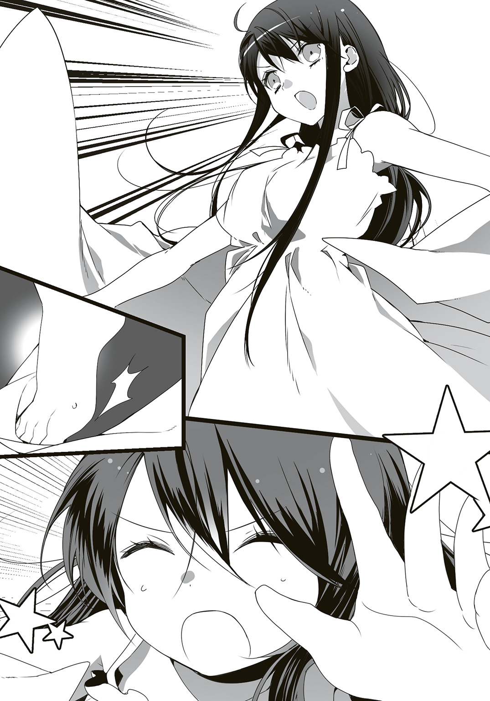
慌てて駆け寄る春人の背後から、真帆の厳かな声がした。
「......幽霊の仕業ね」
「やめーや！」
恐怖におののく璃子が、耳をふさぎながら叫ぶ。
まるで小学生のような可愛らしい外見からは想像もつかなかったが、真帆は大のホラー好きなのだ。寮に幽霊が出るというシチュエーションに、ただ一人わくわくしている。
不敵な笑みを浮かべた、童顔でツインテールの少女は、邪悪な黒魔術師のようにも見えた。
逆に、いつもはしっかり者の璃子がびくびくと怯えている。
「いやいや、どげん見ても、自分が投げたブランケットに足ば取られてこけたとたい！」
菜々美が常識的な指摘しても、真帆は聞いてもいないし、璃子は生まれたての子鹿のように、ぶるぶる震えている。
「うう......」
瑞貴が痛みをこらえながら、よろよろと立ち上がる。
「ほら、無理しないで......ね？」
優しく声をかけた春人だが、瑞貴にキッと睨まれた。
「大丈夫！ 私が退治するんだから！」
瑞貴はなぜか闘志を燃やしている。いつもはおとなしい彼女の意外な一面に、寮生たちは戸惑ったように顔を見合わせた。
「ほらー、意地になっちゃってるよ、どうすんの寮長」
「私たちの手には負えないよ」
「そんな他人事みたいに......」
そう言いつつ、春人はため息をついた。
男子寮を倒壊させ、お情けで女子寮に住まわせてもらっている自分だ。
寮長の務めを果たすのはやぶさかではないが、まさか幽霊騒ぎが起こるなどとは思ってもみなかった。
結局、夜通し見張りをするために、一階のレクリエーションルームで寮生全員が集まっている。
なんでこうなった。
話は昨晩に遡る。
第１章 寮に幽霊現る!?
――春人は果たして立ち向かえるのか
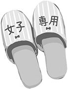
昨夜十時。春人はいつも通り女子寮の二階に上がった。恒例の就寝前の点呼のためだ。
二階にある四人の寮生の部屋を一つずつノックして、在室しているか確認し、早めの就寝を促すという寮長の仕事で、基本的には一階のみが行動範囲の春人が二階の女子スペースに行ける数少ない機会の一つだ。
もちろん、春人は仕事として行くのであって、そこで何らかのトラブルを起こせば退寮の可能性もある。
女子寮を追い出されれば行き場のない春人にとって、最も慎重に行うべき業務だ。
「就寝前の点呼です」
まず一番手前の２０１号室をノックし、瑞貴の在室を確認する。
「ご苦労様」
涼やかな声とともにドアが開き、さらりと長い髪が揺れる。春人は一瞬にしてその面差しに引き込まれた。
ドアを開けて出てきた瑞貴は、やはりいつも通り可愛かった。
透き通るような白い肌や、くっきりとした切れ長の黒い目、艶やかな黒く長い髪。何度見ても目を奪われてしまう。
今日の寝間着はやわらかそうなモコモコした白い生地に、ピンクの水玉――ドットと言うらしい――模様だ。
学校ではきりりとしている瑞貴だが、着ているものは割と可愛い系が多い。そんなギャップを知れるのも、同じ寮に住んでいる特権だ。
業務とはいえ密かに憧れている瑞貴の部屋着姿が見られる貴重な機会でもあり、態度に出さないようにしているが、本当は破顔してしまいそうになるほど嬉しい瞬間だ。
初めて瑞貴を見たときから、ずっと夢中だった。その気持ちは今も全く変わっていない。彼女と付き合えたら、どんなに幸せだろうか。
「す......」
好きです。
そう口にしそうになり、春人は慌てて口に手を当てた。
おいおい、何を言おうとしているんだよ、俺は！ 就寝の点呼のついでに告白とか馬鹿か！
「......？」
あわあわしている春人を、瑞貴が怪訝そうに首を傾げて見つめてくる。その深い瞳を見ているだけで、心臓がドキドキする。
思わぬ衝動に自分でも驚いたが、本心を言えばずっとそう言いたかった。
でも、いきなり告白されても彼女は戸惑うだろうし、場合によっては避けられたり、嫌われたり――想像するだけでへこんでしまう。
「どうかした？」
瑞貴に尋ねられ、春人は慌てて手を振った。
「いや、何でもないんだ！」
そのとき、ひんやりした風が春人の首筋をするりと撫でた。
「ひゃっ!?」
春人は驚いて振り返った。だが、背後にはもちろん誰もいないし、廊下の窓もちゃんと閉まっている。
今のは何だったんだろう？
「大丈夫？」
瑞貴に声をかけられ、春人はハッとした。随分長い間、不審な態度を取ってしまった。
「ごめん、何でもない。おやすみなさい」
春人は動揺を気取られないように笑顔を浮かべ、平静を装ってドアを閉めた。
「は――――」
大きく息を吐いたとき、璃子が階段を上がってきた。どうやら風呂上がりらしく、洗い髪をターバンのようにタオルで巻いている。タオルの模様が虎柄なのが、大阪出身の璃子らしい。
いつもながら「寒くないの、それ？」と聞きたくなるような、キャミソールにショートパンツ姿だ。豊満な胸の谷間がくっきり見えている。
「ちょうどよかった、今、就寝の点呼に来てて――」
だが、璃子の目は春人を見ていなかった。そのずっと奥に視線を向け、凍りついたように固まっている。
「璃子ちゃん......？」
春人は振り返って廊下の奥を見つめた。だが、暗い廊下と連なる窓しか見えない。いつも通りの光景だ。
「見た......？」
璃子が震える声で尋ねてくる。
「見たって何を？」
きょとんとした春人の腕を、璃子が乱暴に摑んだ。
「えっ......」
口を開く暇を与えず、璃子が春人を自室に引きずり込んで、後ろ手にドアを閉めた。
璃子の目は不安げに揺れ、緊張しているのか表情が険しい。胸の隆起が大きく上下していて、呼吸が荒いのがわかる。
「いったい、どうしたの？」
尋ねる春人から目をそらし、璃子がうつむいてしまった。
何か言いたげに一瞬顔を上げたものの、春人と目が合うとまたうつむく。
「あの、またハルの代わりとか......？」
気の強い璃子には寂しがりの一面があり、いっときだけだったがお気に入りだというクマのぬいぐるみのハルの代わりを務め、抱きしめられ役になったことがある。
「違うねん......」
璃子がぼそっと呟いた。普段とはまったく違う、小さくか細い声だった。
どう見てもただ事ではない。
春人は璃子に近づき、力づけるようにそっと肩に手を置いた。
「困ってることがあったら話してよ。力になるから」
「......だって、絶対信じてくれへんって」
どこか拗ねたように璃子が言う。
「信じるって！ どうしたの？」
春人が力強く言うと、璃子がようやく顔を上げた。
そして、意を決したように口を開いた。
「幽霊がおった......」
「えっ、幽霊？」
春人はぽかんとしてしまった。また誰かとトラブルでもあったのかと心配してみれば、幽霊だって？
「ほら、信じてへん！ やっぱりそうやん！」
明らかに戸惑う春人に、璃子がムッとしたように叫ぶ。
「そ、そんなことないけど、突然すぎて！」
嚙みついてきた璃子を何とか宥めたいが、急展開すぎてついていけない。
寮長として寮生の相談に乗ったり、トラブルを解決したりするのが務めだが、まさかオカルト現象までその範疇に入っているとは思わなかった。
とりあえず、璃子に事情を聞いてみるしかない。
「あの、幽霊ってどんな？ いつ見たの？」
「今さっき！ お風呂から帰ってきたときに、廊下の奥になんか白っぽいぼうっとした人影があってん」
「ああ......」
それで、璃子が硬直して顔を強張らせていたのか。
春人は話の続きを待ったが、璃子は黙ったままだ。
どうしたんだろう。言いづらいというわけでもなさそうだが。もしや――。
「......もしかして終わり？」
そう言った瞬間、璃子の顔が一瞬にして赤く染まった。
「しゃーないやん！ オチのつけようないやろ！」
「いやいや、オチとかそういう問題じゃなくて！」
どうも大阪人のプライドを傷つけてしまったらしい。そういえば、大阪人は必ず話の最後にオチをつけると聞いたことはあるが、春人にはよくわからない。オチって何だ？
「だって、『それで終わり？』って......オチがいるってことやろ？」
璃子が口を尖らせ、尚も言い募る。
「いや、そのだからさ、暗い廊下の奥に白っぽい人影を見たわけだよね？」
「うん！」
璃子が大きく頷く。力強く頷きすぎて、Ｄカップはあろうかという胸がぶるんと勢いよく揺れたのは見なかったことにする。しっかり目に焼き付いてはいるが。
春人は咳払いした。ほんと、薄着は勘弁してほしい。しかも春でこの薄着なので、夏の到来が恐ろしい。
あのとき、自分も振り返ってみたが、何もいなかった。
「見間違い――」
じゃないの、と言いかけて、春人は慌てて口をつぐんだ。
璃子がギッと睨んできたからだ。その目は『私を信じてへんわけ？』とばかりに威嚇の光を放っていた。
「......それって、他の寮生じゃないの？」
「えっ」
そんなことは思ってもみなかったらしく、璃子が絶句する。
「で、でもなんで廊下の奥に立ってるん？ おかしくない？」
「廊下の奥ってお手洗いがあるよね？ そこに向かう途中だったとか」
二階の一番奥には女性用のお手洗いと洗面所、そして物置がある。
「でも、ぼうっと突っ立ってるっておかしくない？ それになんか、全体的に白っぽかったし......でも、確かに女性だったと思う」
「うーん......」
確かに廊下の奥でぼうっと立っていたというのはよくわからない。
でも、幽霊が出るという説よりはしっくりくる。
「遠くから見ただけで、確認しなかったでしょ？」
この寮は縦に長い造りなので、階段から廊下の奥まではだいぶ距離がある。しかも暗がりの中となれば、人がいてもはっきりとは見えづらいだろう。
「そらそうやん！ 幽霊やで！ 怖いやん！」
璃子の目に怯えが走り、両手で自分の体を抱く。随分怖がりのようだ。
「ほら、確かめなかったんだったら、寮生かもよ？」
「ええー？ でも......」
璃子はまだ納得がいかないようで、口を尖らせて考え込んでいる。
「とりあえず明日の朝、食堂でみんなに聞いてみたら？ その時間あたり、廊下に出てなかったかって」
「......わかった。そうやんな、幽霊とかおらへんよな。おったら怖いし嫌やし」
璃子は自分に言い聞かせるように呟いた。どうやら、自分一人が取り乱していたかもしれないと考えてくれたようだ。
素直に納得してくれ、春人はホッとした。幽霊が出たなんて、どうやって対処していいかわからない。
「それにほら、この女子寮って新築じゃん。幽霊ってもっと古い建物に出るんじゃないの？」
「そっか......そやな......」
少しずつ璃子の表情が和らいできた。
「じゃあ、俺はこれで。夜更かししないでね。おやすみ」
次の部屋の点呼に行こうとした春人の腕を、璃子ががしっと摑んだ。
「えっ、何？」
璃子が真剣な目でこちらを見ている。先ほどとはまた違う緊張感が走る。
思い切ったように、璃子が口を開いた。
「でも、ぎゅっとして！」
「えっ！」
春人が驚くと、璃子がカッと頰を赤く染めた。
「わかってる！ もうそういうのはやめようって言ってたもんな！ でも、今回はハルの代わりとかじゃなくて、まだ怖いから！ ほら、部屋で一人やん？ こんなんやったら寝られへんし、あんた寮長やし」
気まずさを打ち消そうとするかのように、璃子が早口でまくしたてる。
到底論理的とは言えないが、彼女の心細さは痛いほど伝わってきた。
家族と離れて遠い地に一人やってきた寮生たちが不安なのはよくわかる。
春人も中学生になってから自分の部屋にこもることが多かったが、それでも家族の気配がある家の部屋にいるのと、誰もいない寮の一階の部屋にいるのとでは安心感が全然違う。
まだ越してきて一カ月もたってなくて、慣れていないというのもあるのだろうが。
気詰まりなのか、璃子が顔を横に向けるのが妙に愛らしく、春人は特別措置を取ることにした。
心の中でそっと瑞貴に謝る。
ごめん、きみのことだけが好きなんだけど、今だけごめん！
付き合ってもいないのに自意識過剰かもしれないが、やはり他の女の子を抱きしめるというのは罪悪感があるものだ。
「いいよ、今回だけね」
春人がそう言うと、璃子がパッと顔を輝かせた。
「ありがとう......」
嬉しそうに言う璃子がやけに可愛く見えて、春人はなぜかどぎまぎした。
急に照れくさくなって、春人は早く終わらせようと大きく腕を広げた。
「はい」
合図をすると、春人の胸にぶつかるようにして璃子が飛び込んできた。
どん、と胸に柔らかく重量感のあるものが押しつけられる。
「......っ」
春人は何も感じないように振る舞いつつ、そっと璃子の背に腕を回した。
「もっと！」
耳元で言われ、春人はびくりとした。
「ぎゅっとして！」
「はい......」
もうここまできたらやけくそだ。
春人は力を込めて、璃子を抱きしめた。
温かく柔らかい体がぴたりと自分と一体化するようなこの感覚。
......やはり、良くない！ 気持ちがいいので良くない!!
なんだか浮気をしている気分になり、春人は璃子の体をぐいっと引きはがした。璃子の顔がまともに見られない。
「ほら、もういいでしょ」
「うん......」
ちょっと残念そうに言う璃子から目をそらし、春人はドアノブに手をかけた。
早く夜の点呼を終わらせないと。
あと、女の子の部屋に二人きりというシチュエーションはまずい。好きな女の子がいるというのに、妙な気分になってしまう。
春人はそそくさと廊下に出ると、ホッと息を吐いた。
＊
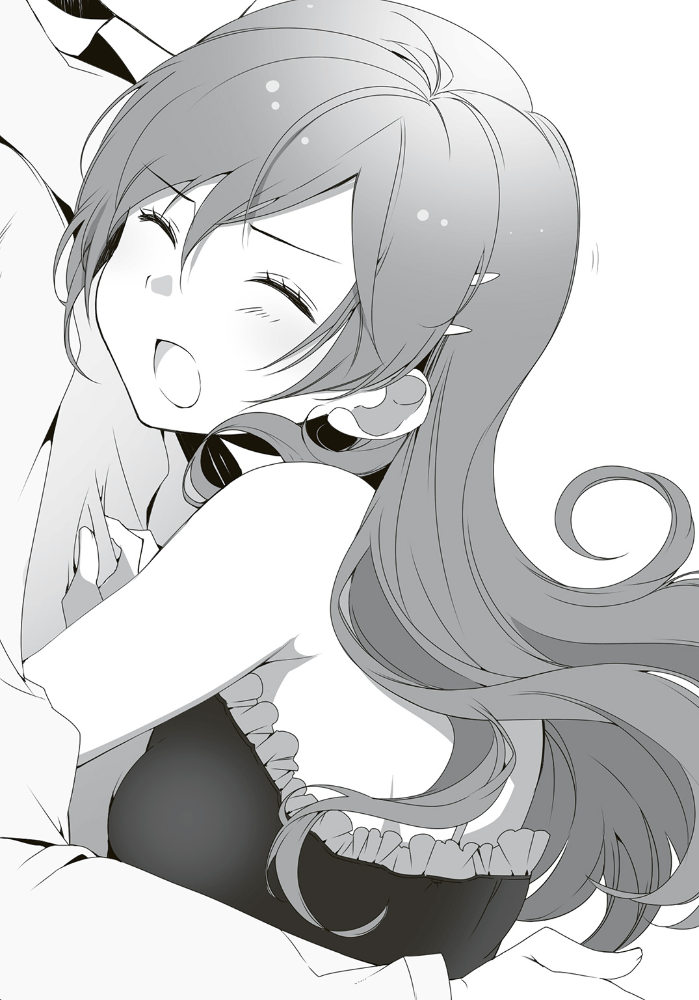
「ぎゃ――――――!!」
凄まじい悲鳴が耳朶を叩き、春人の安眠は破られた。
「えっ、何？」
真っ暗な中飛び起き、寝ぼけ眼をこすりながら慌てて枕元に置いてある目覚まし時計をひっつかむ。
「えっと、三時半過ぎ......？」
深夜も深夜、とっくにみんな寝ている時間だ。
なぜこんな時間に悲鳴が上がるんだろう。
春人は電気をつけ、ベッドから素早く起き上がった。
点呼のとき以外は二階に上がらない約束だが、そんなことを言っている場合ではない。
春人は慌てて一階の自室を飛び出し、二階への階段を駆け上がった。
いったい、何があったんだろう。ゴキブリでも出たとか？ でもここ新築だよな......。
不可解に思いながら二階に上がった春人の目に、寝間着姿で廊下に出ている寮生たちの姿が見えた。
瑞貴、璃子、菜々美、真帆――四人全員揃っている。不安そうに廊下に集まっていた寮生たちが、春人の姿を見るとホッとしたように表情を緩めた。
あの悲鳴を上げたのは誰なのだろう。
「ど、どうしたの？」
震えながら廊下の奥を指差したのは瑞貴だった。初めて見る、瑞貴の怯えた顔に嫌な予感が募る。
あの気丈な瑞貴がどうしたのだろう。
「ト、トイレさ行ごうと思ったら、廊下の奥さ人影が......」
「一緒！ 私も見た！ 十時頃やけど！」
璃子が勢い込む。春人は驚いた。まさか、あのとき璃子は本当に幽霊を見たのだろうか。
「こう白っぽくて、髪の長い女性じゃなかった？」
璃子の言葉に瑞貴が首を傾げる。
「うーん......わからない。怖くてよく見なかった。でも、人がいたと思う......」
瑞貴が少し自信なさげに呟く。
「ここ、幽霊屋敷なん？」
璃子が怯えたように辺りを見回す。
「いやいや、幽霊って決めつけるのは早――」
春人が怖がる璃子を宥めようとしたときだった。
「やった―――!!」
場違いな明るい声が夜の廊下に響いた。
両手を高く挙げて喜びを体中で表現しているのは、沖縄出身の真帆だった。
その小さな体に歓喜を漲らせている。
しかし、他の寮生の冷ややかな視線を浴び、するすると手を下ろした。
「......なんで喜んでんねん」
璃子がキッと真帆を見つめる。
「えっ、えっ、だって幽霊だよ？」
真帆がおろおろと寮生たちの顔を見回す。
「わくわくしない？」
「しない！」
「せーへん！」
「すっわけなか！」
「するわげねぇ！」
「そうなんだ......」
寮生たちに猛反発され、真帆ががっかりしたように肩を落とす。
「リアルホラー映画みたいなのに......」
真帆が聞き捨てならないことを呟いたが、春人は敢えて無視した。
「それにしても幽霊かあ......」
菜々美が何かを思い出すように首を傾げる。
「昔、おばあちゃんの家に行ったときに、人魂みたいなぼやっとしたやつを見たことあるけど......」
「えっ！ すごい！ 菜々美ってさーだか生まれさー？」
真帆が目を輝かせて菜々美を見る。真帆のあまりの食いつきように、菜々美が怯えたように少し身を引く。
「さーだか生まれって、どういう意味？」
「生まれつき霊感が強い人のことさー」
「ちょっ、そんな大げさな......見間違いかもしれないし」
「ううん、きっと霊感があるんだよ！ じゃあ、菜々美に寮内を調査してもらえばいいんじゃない？」
「えっ！」
思わぬやぶ蛇に菜々美が顔をひきつらせる。
「霊感がある人に確かめてもらったら、何かわかるかもしれないさー」
「そうやね、それがいいわ！ 私ら一般人は何もわからへんし」
璃子までが尻馬に乗る。どうやら怖すぎて、誰でもいいから解決してほしいようだ。
「ちょっと待ってよ！」
軽く言った一言が思わぬ波紋を呼んでしまい、焦った菜々美が大きく手を振る。
「私そげん、霊感どんなかばい！」
「そんなことないって！ 霊感あるって！」
璃子と真帆が、菜々美に寮内の調査を押しつけようとしたときだった。
「私も......」
いきなり瑞貴が口を挟んできたので、春人はぎょっとした。
「えっ、瑞貴も霊感あるの？」
璃子たちが驚いて、律儀に挙手している瑞貴を見つめる。
「私も......」
瑞貴が顔を歪め、苦しげに続ける。寮生たちが固唾を呑んで、瑞貴の言葉を待った。
「受験の当日に黒猫が前を横切ったことがある......」
「は？」
「何それ？」
春人たちはぽかんとした。
「それ、霊体験ちゃうやろ？ ただ不吉ってだけで」
「しかも、受験のときってここの？ 結局受かったんだよね？ 別に不吉でもなんでもなかったってことじゃない？」
次々皆に突っ込まれ、瑞貴の顔がどんどん赤く染まっていく。
「で、でも、私も......」
瑞貴がぎゅうっと寝間着の裾を握る。その細い手がぷるぷると震えている。
「そんなとこで張り切らなくていいから！」
春人は思わず助け船を出してしまった。これ以上見ていられない。明らかに瑞貴は勢いで言ったものの、引っ込みがつかなくなっている状態だ。見ているだけでつらい。
「とりあえず俺が廊下の奥を見てくるよ。それでいい？」
寮生たちがこくりと頷く。
話がいろんな方向に飛びすぎて、収拾がつかなくなるところだった。
春人がそっと忍び足で廊下を歩き出すと、背後から怖々寮生たちもついてきた。
「俺一人で行くから、来なくていいよ」
「皆で行った方が怖くないよ」
「そうそう」
一番怖がっているはずの璃子までついてきてしまっている。
まるでカルガモの母になった気分で、春人は寮生の先頭に立ち、ゆっくりと廊下を進んだ。
深夜の寮内は静まり返っていて、自分たちの息づかいしか聞こえない。
廊下のどん詰まりまで来ると、春人は廊下を右に曲がった。そこにはトイレと洗面所、その奥に物置がある。
「一応、中を確かめるね。いい？」
寮生たちに確認を取ると、全員がおとなしく頷く。
許可をもらったので、春人はそっとトイレのドアを開けた。当然のことながら、無人で特に異状は見当たらない。
そっとトイレのドアを閉じ、春人は隣の洗面所の引き戸に手をかけた。
「ひゃっくしょい!!」
廊下に響き渡るくしゃみに、春人は飛び上がるほど驚いた。
振り返ると、真帆が寒そうに鼻をすすり上げている。
「寒いね......」
確かに、璃子ほどではないが、真帆もノースリーブの上着とショート丈のパンツという夏向けの格好をしている。春の深夜にうろうろするような服装ではない。
「お、驚かさんといてや！」
びっくりしすぎて飛び退ったらしい璃子が、二メートルほど離れた窓にしがみつきながら抗議する。
「わっさいびーん！ ごめんね」
真帆はまったく悪びれた様子もなく、春人のそばに来た。
「じゃあ、洗面所も確認しよ？ 鏡があるから、しっかり覗き込んでね。ホラーの定番で、何か映ったりするかも」
「そんな怖いこと言わないの！」
ただでさえ不気味だというのに、追い打ちをかけられ春人は真帆を窘めた。
「早く！ 早く！ 鏡！ 鏡！」
真帆が待ちきれないとばかりに、拳を振り上げながらコールしてくる。
聞いちゃいない......。
真帆にドンドンと背中を押され、春人はため息混じりに洗面所のドアを開けた。
壁にある電気のスイッチをつける。
「あっ！」
すごい勢いで背後から突き飛ばされ、春人は危うく鏡に激突しそうになった。
「やだ！ 片付けるの忘れてた！」
そう言うと、菜々美が洗面台の横に吊るしていたものを抱えるようにして外に飛び出す。ちらっとレースのついた生地が見える。あれって、ブラとショーツなんじゃ......。
「えっ、えっ？」
呆然とする春人を、璃子が気の毒そうに見つめる。
「二階の洗面所って女子しか使わないから、手洗いする下着をたまに干してんねん」
「手洗い......？」
よくわからない。洗濯機や乾燥機なら、ちゃんと一階にあるのだが。
「型くずれしやすいものとか生地が繊細なものは、洗濯機じゃなくて手洗いして陰干ししなくちゃいけないから」
「そ、そうなんだ......」
思わぬ女子の下着事情に、春人はどぎまぎした。
「菜々美にとったら、いわば抜き打ち検査されたみたいなもんやなあ」
「す、すいません......」
まるで間違えて女子更衣室に入ったような気分になり、春人はすごすごと洗面所を出た。
「何もいなかったよね......」
「うん、残念」
本当に悔しそうに、真帆がチラチラと洗面所を振り返る。
「もう、なんで私は見えないのかなー。でも、璃子と瑞貴が見たから、次くらい私の番かなー」
「そういうの、順番があるの？」
尋ねる瑞貴に、真帆がふるふると首を振った。
「ううん、単なる私の希望」
「あ、ああそう......」
マイペースな真帆に、今回は振り回されっぱなしだ。
「ごめんねー、片付けてきた！」
菜々美が照れ笑いを浮かべて部屋から出てきて合流する。
「とりあえず、問題なし。これでいい？」
自分の目で確認して安心したのか、全員がこくりと頷く。真帆だけが少し残念そうだ。
「でも、何だったんだろうね。女性の人影か......」
璃子だけならともかく、瑞貴も目撃したのなら、見間違いとは考えづらい。
寮生たちもそう思ったらしく、重苦しい沈黙が流れた。
「璃子ちゃんが見たのが十時頃、み、みずっき......ちゃんが見たのが――」
「......〝みずっきちゃん〟って何なん」
さっそく大阪出身の璃子に突っ込まれる。
「しょーがないさー。瑞貴はちゅらかーぎだもんねえ」
「ちゅらかーぎ？」
初めて聞く沖縄の言葉に、春人は首を傾げた。
「美人、って意味さー」
真帆にそう言われ、春人は顔が赤らむのを感じた。
寮生同士、下の名前で呼び合おうと取り決め、だいぶ慣れてきたのだが、瑞貴の名前だけはうまく呼べないことが多い。
意識しすぎなのはわかっているが、片思いをしている相手を下の名前で呼ぶとかハードルが高すぎる。
春人は気を取り直し、提案をした。
「明日......っていうか、もう今日か。今晩、俺が寝ずの番をやるよ。寮内の見回りもする」
「そんな、あんただけ大変やん！」
「いや、寮長だし......」
元々、寮生の面倒を見たりする仕事と引き替えに得た住居と役職だ。こういうときに役立たなくては自分が寮長をしている意味がない。
「わかった！ 私も一緒に徹夜するわ！ もともと私が言い出したことやし！」
「面白そう！ 私もやる――――！」
大喜びで手を挙げる真帆を、璃子が苦々しげに見つめる。
「あんた、遊びちゃうんやから......」
「わかった。私もやったい」
菜々美がため息をつきながら、小さく手を挙げた。
「私も......やる！」
瑞貴までもがやる気を見せている。
「じゃあ、こうしよう。一階のレクリエーションルームで皆で夜を過ごす。異状がないか、たまに見回る」
「賛成！」
璃子たちが声を上げる。
「わあ、じゃあロウソクを用意しなきゃ！」
真帆の唐突な発言に、春人たちはぽかんとした。
「なんでロウソクがいるの？」
「だって、幽霊を呼び寄せるんだったら百物語さー。百物語って知らない？ 一人ずつ怪談を披露していって、話が終わるたびに一本ずつロウソクを吹き消していく。最後のロウソクが消えたときに幽霊が出る――」
「え―――――！ なんでそんな怖いことやらなあかんの？」
璃子が両手で顔を挟み、抗議の声を上げる。まるでムンクの『叫び』の絵のようだ。
「あの、むしろ幽霊がいないほうがいいんだけど......」
春人の言葉に、真帆が気分を害したように睨んできた。
「幽霊が出なきゃ面白くないさー！」
「私もちゃんと幽霊を見てみたい......さっきは慌ててよく見なかったし」
瑞貴までもがとんでもないことを言い出した。
「アホが二人もいる！」
璃子が頭を抱え、菜々美がため息をつく。
「えっ、でも、幽霊ってすごくない......？」
瑞貴がおずおずと言うと、真帆が嬉しそうに瑞貴の肩を叩いた。
「わあー、瑞貴は素質があるよ！」
「何の？」
瑞貴が困ったように真帆を見る。
「はい、そこまで！ とにかく、今日はもう部屋に戻って！ ほら、もう夜明けだから！」
「はあい」
女の子たちが素直に部屋に戻る。興奮が落ち着いてくると、途端に眠気が押し寄せてきたようで目をこすっている。
春人はため息をつくと、一階の自分の部屋に戻った。頭が重いが、今後のことを考えると寝られそうにない。
＊
学校に着くと、春人は自分の席に転がるようにして座った。
「うう......」
予想通り、あれから自室に戻ったものの、春人は一睡もできなかった。
寮生たちも同じだったようで、どの子も目が赤く眠そうだ。あくびをかみ殺したり、机に突っ伏したりしだした。
ただ一人、真帆だけが生き生きとしている。
「はあ......幽霊っているのかな」
幽霊が出ても困るが、出なくても結局不安は拭えない。寮長として最大のピンチだ。
ため息をついていると、蜂谷亜沙子がやってきた。
「おはよう！」
亜沙子の明るい笑顔に、春人は少しホッとした。
相変わらず、整った顔立ちの綺麗な少女だ。長い髪は艶やかで、すらりとしたスタイルは遠くから見てもわかる。
彼女は世話焼きのしっかり者で、この前寮生が主催した交流パーティーでも自ら手を挙げて手伝ってくれた。
大人びていて、よく気のつく亜沙子は、春人の変化を見逃さなかった。
「どうしたの？ 暗いね。何かあった？」
「いや、ちょっと女子寮で幽霊騒ぎが......」
眠すぎて頭がよく働かず、春人はうっかり口を滑らせた。
怪訝な表情をするかと思いきや、亜沙子の口から出たのは意外な言葉だった。
「えっ、建て替えたのに？」
建て替えたのに、って――？
春人は背筋に寒いものが走るのを感じた。
「どういうこと？ 前もあったの？」
言われてみれば、寮の建物自体は新しいが、〝女子寮〟は昔からあったはずだ。
「私の姉もこの学校の卒業生なんだけど、女子寮で以前幽霊騒ぎがあったらしいんだよね」
「えっ」
もちろん春人は初耳だ。
「地方から出てきた女の子がいて、なかなか東京やクラスに馴染めなかったみたいなの。そんな彼女にも好きな男子ができて、でも失恋したらしいんだよね。あるとき、彼女が寮の敷地に倒れていて、頭を打って死んでいるのが発見された。どうやら三階の窓から落ちたらしくて――旧女子寮は三階建てだったの――、事故か自殺かわからずじまい。遺書はなかったから、事故死として処理されたって。それ以来、女子寮に女の子の幽霊が出るようになった、って噂。いつも廊下の窓のそばに出るんだって」
地方出身の失恋した女の子が窓から落ちて死んだ――。
春人は心臓の鼓動が激しくなっていくのを感じた。
夜の廊下で目撃された人影――そしてそれは女の子の幽霊らしい。
まるでぴったりではないか。
「やあだ、春人ってば、そんなに怖がらないでよ！」
亜沙子が明るく笑うと、春人の肩を軽くつついてきた。
「そういう噂があった、ってだけ。真偽のほどは定かじゃないの」
「そ、そうなんだ......」
てっきり、本当に女子生徒が亡くなったのかと思った。
「上京したばかりで寂しく不安な女の子たちが集まってるからね、寮って。そういう噂が立っても不思議じゃないし」
「そうだね。でも、気になるから、今日は徹夜で番をしようと思ってるんだ」
「大変だねえ......。でも、こういうとき男子がいてくれると助かるよね。女の子ばっかりだとやっぱり怖いし」
春人は亜沙子の言葉に力づけられた気がした。
そうだよ、女の子ばかりなんだから、俺が頑張らないと！
だが、亜沙子から聞いた女子寮の怪談は、消えないシミのように頭の隅にこびりついたままだった。
＊
放課後寮に戻ると、春人はレクリエーションルームに向かった。
先に帰っていた寮生たちがソファに座り、本を読んだり、スマホを触ったり、のんびり過ごしていた。
休日に全員で池袋に出かけたあの日から、明らかに寮生たちは仲良くなっていた。それまで寮に戻ると自室にこもったっきりの子が多かったが、今はだいたい夕飯までレクリエーションルームにいることが多い。
瑞貴、璃子、菜々美、真帆、全員の顔を見回し、春人は厳かに口を開いた。
「皆さんに悪いお知らせがあります......」
そう言った瞬間、ソファに寝転んで雑誌を読んでいた璃子がびくりとした。
「何？ 何なん？ 幽霊関係やったら嫌やで！」
「......幽霊関係です」
「イヤ―――――！」
璃子が大げさに耳を塞ぎながら叫ぶ。
「無理無理無理無理!! まさかと思うけど以前この女子寮で何か――」
「ご名答」
「イヤアアア――――――！」
璃子がまた盛大に悲鳴を上げ、身をよじる。
「あれだ、あれでしょ！ 寮内でイジメがあって、女子生徒がボイラールームに閉じ込められて焼け死んだとか！」
真帆が勢いよく身を乗り出し、目を輝かせながら口を挟んできた。
興奮して今にもソファから転げ落ちそうな真帆を、春人はそっと元に戻した。
「それ、どこのホラー映画......日本の寮にボイラールームなんてないよ......」
「あんたアメリカのホラー映画の見過ぎちゃうん」
璃子が忌まわしいものかのように真帆を恨めしげに見つめる。
だが、真帆はそんな璃子の視線などものともしなかった。マイペースの本領発揮というところだ。
むしろ、目の輝きが増している。
「ううん、あれは確かスペインのホラー映画だったと思う。廃墟となった寮にうっかりやってきた大学生たちが、やっぱり一人ずつ殺されていくんだよねー」
「一人ずつ殺されるとかやめーや！」
璃子がぶるぶる震えながら叫ぶ。
「大丈夫だよ、ホラー映画の話だから」
菜々美が力づけるように璃子の肩にそっと手を置く。だが、その労りの手を、璃子がパシッと無下に振り払った。
「やめて！ 霊感が移ったらどうするん!?」
思いがけない璃子の反応に、菜々美の口がぽかんと開いた。
「ちょっ、人ば病原菌のごと言わんでよ！ そもそも、霊感があるなんて一言も......」
「幽霊を見たことあるんやろ？」
「だから、きっとあれは蛍かなんかと見間違えたんだと思う。田舎で川が近かったし......」
「言い訳はいらん！」
そのとき瑞貴がおもむろにソファから立ち上がると、璃子の肩に優しく手を置いた。
「何？」
璃子が肩に置かれた手に視線を走らせ、怪訝そうに瑞貴を見上げる。
すると瑞貴がムッとしたように璃子を見た。
「なんで私の手は振り払わないの？ 私だって、黒猫が前を横切ったことがあるのよ？」
「はあ？ あんた何張り合ってんの？ 霊感なんてないほうがいいやろ!?」
「やけん、私は霊感なんてなかて！」
「まあまあ」
すったもんだしている少女たちの間に春人は強引に割り込んだ。
暴れ馬を落ち着かせるかの如く手を上下に振る。どうどう、と口ずさまなかったのは我ながら抑制がきいていたと思う。
「みんな、落ち着いて。とりあえず、前の女子寮では幽霊騒ぎがあったみたいだけど、まあよくある学校怪談のようなものだと思うから......」
「ほんまやったらどうするん？」
璃子が真剣な表情で詰め寄ってくる。
「私が......」
瑞貴がさっと手を挙げた。
「私が......」
その後が続かない。
瑞貴が苦悶の表情を浮かべ、ぷるぷると挙げた手を震わせる。
「あんた、勉強はできるのになんでそんなアホなん？」
璃子が呆れたようにその悲しい姿を見つめる。
初めての実力テストで学年一位をとった瑞貴が顔を赤らめた。
皆の注目を浴び、瑞貴がようやく口を開いた。
「......だって、すごいじゃない？」
「何が？」
「霊感があるとか......特別な感じで」
「はあ？」
思わず全員が呆れ声を出す。
モデルや女優顔負けの美少女で、成績は学年トップ。鈍くさいが身体能力は高く、体力テストでもトップの記録ばかり。道を歩けば誰もが振り返る。
今でも充分特別だというのに、なんでそんなものに憧れるのか全然わからない。
「瑞貴って〝中二病〟なんだね」
菜々美がさくっと言い切った。
「ちゅ、中二病？」
聞き慣れない言葉に、瑞貴が戸惑ったように菜々美を見た。
菜々美は今度は自分の得意分野とばかりに、眼鏡の奥の目を輝かせる。
「自分は選ばれた戦士だとか、姫の生まれ変わりだとか、自分を特別な存在って思う心理を揶揄するネットスラングだよ。中学二年生くらいの子が憧れる妄想だから、そういう名前がついてるの」
説明を聞いていてた瑞貴の顔が、どんどん赤くなっていく。もともと肌の色が雪のように白いので、それは見ていて気の毒になるほどだった。
「やだ......恥ずかしい」
「普通はそういうのって隠すんだけど、なまじオタクじゃないと抵抗なく言っちゃうもんなのかね」
「私......よく変な子って言われてて......やっぱり変なんだ......」
瑞貴が手で顔を覆い、うつむいてしまった。
深く落ち込んでしまった瑞貴に驚き、菜々美が慌てて隣に座って肩を抱く。
「いや、ごめんて、変じゃなかよ！ 素直なだけたい！ みんな本当は心ん奥底でそげん妄想......熱いスピリッツがあるばってん、隠しとんしゃーだけやっけん！」
「じゃあ、菜々美はあるの？」
顔を上げた瑞貴に尋ねられ、菜々美がぐっと詰まって顔を赤くする。
「......それを言うくらいなら、トラックの前に飛び出すわ」
「ね、ねえ!!」
突然、瑞貴が手を挙げた。興奮したように頰が上気し、目が宝石のように輝いている。嫌な予感しかしない。
しかし、春人が止める間もなく、瑞貴が話し出した。
「あのね、私、幽霊を退治する方法を思いついた！」
「えっ、どんなの？」
ホラー好きの真帆が真っ先に食いつく。
瑞貴がびしっと人差し指を立て、左右の指をクロスさせて十字を作った。
「これでどうかな？ こういうの昔映画で見たことがあるって思い出して......」
「......」
一同は呆然としたあと、大爆笑した。
「あははははは――――！ 瑞貴って、でーじてーふぁーさー!!」
「ちょ、待っ、ほんと天然やね 」
」
「あんたほんま、笑わせんといて！ 腹筋が崩壊するわ！」
璃子など、お腹を抱えて涙を流しながら笑っている。
なぜ笑われているかわからない瑞貴が、おろおろと寮生たちを見回した。
こんなことになるんじゃないかと思っていた。
仕方なく、春人が説明する。
「それ、十字架の代わりだよね？ 吸血鬼対策で、幽霊には効果ないんじゃないかなあ」
「あっ......！」
瑞貴の顔が瞬時に真っ赤になる。
「そっか、そうだよね。幽霊と吸血鬼って違うもんね、よく知らないけど......」
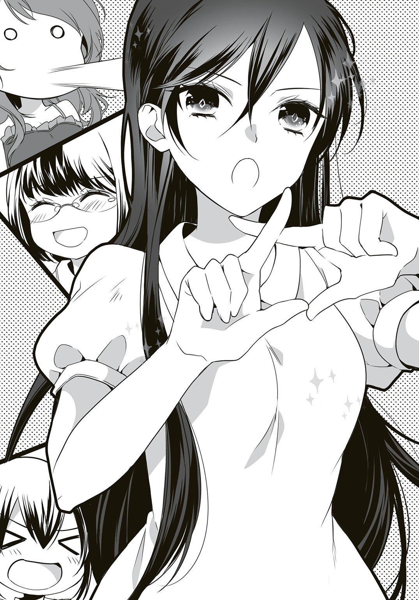
「吸血鬼っていうのは、どちらかと言えばモンスターに分類されるね。幽霊っていうのは死んだ人間の霊魂だから、実体がないことが多いの」
真帆がすらすらと説明する。
「あんた、ほんまよう知ってるなー。ホラー博士やな」
「私なんかまだまだよ。最近ようやく北欧ホラーに手を出し始めたけど、アジアンホラーはまだ開拓していないし......日本に来ないホラーが多すぎる......」
真帆が悔しそうに呟く。
「さ、みんなそろそろ夕ご飯の時間だから、食堂に行こう」
瑞貴の天然ボケのせいで、すっかり空気が弛緩している。春人は逆に有り難かった。
今日の夕ご飯は豆腐ハンバーグと温野菜のつけあわせ、ひじき煮の小鉢と味噌汁にご飯というヘルシーな定食風だ。
ご飯を食べながら、真帆が感慨深そうにほうっとため息をついた。
「幽霊かー、まさか東京で出会えるとは......」
「何？」
「沖縄の幽霊スポットに行ったりしたけど、全然だったのになあ......」
「沖縄にそんなのがあるの？ どんなやつ？」
つい気になって春人は尋ねてしまった。隣に座っている璃子が嫌そうに顔をしかめる。
「私が行ったのは沖縄本島中部にある廃墟のホテル。近くには有名な城跡があって、すごく綺麗な場所なんだけど、その奥にある廃墟が見るからにヤバイの。広い敷地に立派なホテルが建つはずだったんだけど、完成前にプールで子どもが死んだとかで建築が中止になって、なぜか未だに放置」
「うわあ......」
廃墟のホテルなど、想像するだに恐ろしい。
「でも、建築中のプールで子どもが溺れるって変じゃない？」
「そこも含めて怖いんだよねー。まあ、適当な噂なんだろうけどさ。どっちかっていうとリアルな面でヤバイみたいで、夜になると麻薬の取引があるとか......」
「うわー、リアルも怖いな！」
「ねえ、ねえ、なんかないの地元の怖い話。ご当地ホラー！」
真帆が浮き浮きと尋ねる。
「知らん！ そんなん聞きたくないし！」
璃子が顔をしかめ、大げさに手を振る。
「うーん、あんまり興味ないなあ。幽霊って言ってもピンとこないし」
菜々美も興味なさげだ。
ただ一人、瑞貴が一生懸命考えている。
「えっと、えっと......」
あまりに真剣に考えているのが見てとれて、とても声がかけられる雰囲気ではない。
そのとき、瑞貴の顔がぱっと輝いた。
「あっ、恐山！」
「恐山に行ったことあるの!?」
真帆がさっそく食いつく。
「恐山って何？ 響きがもう既に怖いんだけど......」
璃子が嫌そうに聞いてくる。
「確か、イタコがいるんだよね？」
春人も一応、どういう場所かは知っていた。そうだ、青森には恐山があったな。
「恐山って一言で言えば霊場だね。死の世界と最も近い場所って言われていて、死者の口寄せができるというイタコと呼ばれる女性たちがいるの」
「なんや、それ！ 死者とか......絶対行きたくないわ」
「でも温泉があったりして、湯治もできるんだよ」
「怖い場所ちゃうの......」
「うーん、ちょっと違うさー。で、恐山で何があったの？」
「......あ、青森には恐山があるなって......」
瑞貴が口をぱくぱくさせた。勢いで口にしたものの、特にめぼしい情報はなかったようだ。
「瑞貴、無理しなくていいんだよ。あんまりそっち系詳しくないんでしょ？」
瑞貴がこくりと頷く。
「はあ、もう、嫌な話ばっかりや！」
食事を終えた璃子が不機嫌そうに立ち上がる。
「ごめん、ごめん」
なぜか春人が謝るはめになった。
ご飯が済むと、全員レクリエーションルームに戻った。
「集まるのは深夜だから、自室に戻っても大丈夫だよ」
「一人になるのはイヤ！」
璃子がそう言うと、他の子たちも頷いた。
「どうせまた集まるなら、ここにいたらいいと思うし」
「ちょっと合宿みたいで面白い」
そう言うと、女の子たちが勉強道具などをレクリエーションルームに持ち込む。
「ちょうどいいから、一緒に宿題やろうよ」
「賛成！ 手分けしよう！」
全員同じクラスというのが幸いし、宿題を共同ですることになった。
「あかん、私数学苦手......」
「あっ、私も。英語の方がいい......」
みんな意外と真面目に勉強をし始める。顔を突き合わせて考えている寮生たちが可愛くて、春人は思わず吹き出しそうになった。
そんな春人を璃子がちらっと見てきた。
「あんた余裕やなあ。明日の数学、あんた当たるんやろ？」
「そ、そうだった！」
春人も慌てて教科書とノートを持って輪の中に入った。
＊
一通り宿題と予習を終え、皆がソファに寝そべって思い思いのことをしているときだった。
「あっ」
急に真帆が声を上げたので、皆がぎょっとした。
「どうしたの？」
「そろそろお風呂の時間だよ」
「......お風呂かあ」
「怖いから、皆で一緒に入ろうか」
寮のお風呂はゆったり作られており、女子四人くらいならば一緒に入れる大きさがある。
璃子の提案に、賛同の声が次々と上がる。
「いいね！」
「うん、四人だったら安心だよね」
もちろん、男子である春人は数に入っていない。
「じゃあ、皆で行ってきて。俺はここで待ってるから」
「はーい」
女の子たちが一斉にソファから立ち上がった。
「ふふっ、そして彼女たちは戻ってこなかった――ってならなきゃいいね！」
真帆が楽しげに恐ろしいことを言ったので、女の子たちの顔が一様に引きつる。
「あんた何言ってんの？ もっとぽやーっとしたキャラやったよね？ そんな性格やったっけ？」
「ごめん、ごめん！ ホラーが大好きだからつい盛り上がっちゃって！」
真帆が悪びれずに笑顔で言うので、璃子がため息をついた。その顔には諦観とも言える表情が浮かんでいる。
「ほらほら落ち着いて！ 幽霊なんかいないから！」
菜々美が宥めていると、瑞貴がドアに肩を思い切りぶつけた。
「ほぎゃっ!!」
「瑞貴！ 変な声出さんといて!! もう！」
苛立った璃子が、瑞貴を引っ張るようにして廊下に連れていく。
大騒ぎをしながら女の子たちがようやく部屋を出ていった。
喧噪が遠ざかり、一人になった春人はホッと息をついた。
本当に幽霊なんているんだろうか。今晩、何事もなければいいんだけど。
春人は一人で予習に取り組み始めた。
だが、静寂はすぐ破られた。
「きゃ――――――!!」
女の子たちの絶叫に、春人は転がるようにして立ち上がった。
慌てて部屋を飛び出し、春人は風呂場に駆けつけた。
「ど、どうしたの!? 大丈夫？」
だが、使用中の風呂場に飛び込むわけにはいかない。やきもきしながら春人が叫ぶとドアが開いた。
バスタオルを巻いただけの女の子たちが次々飛び出てくる。
「ど、どうしたの？ 何があった？」
「ふ、風呂場に......っ」
女の子たちが息せき切って、すがりついてくる。
「幽霊が出たの!?」
「ちゃうねん！」
「何ね、あいは!!」
「しかんだやっさー！」
「こ、こわがった......！」
「えっ、何なに？」
全員が一斉に方言でしゃべり出したので、何が起こったのか全然わからない。
すると、焦れた寮生たちが同時に叫んだ。
「蜘蛛!!」
「蜘蛛？」
きょとんとしている春人に苛立ったように璃子が叫ぶ。
「蜘蛛が出たねん、すっごいでっかい」
「えっ？」
......蜘蛛が出ただけ？
状況が把握できずにフリーズしてしまった春人の腕が、がしっと摑まれた。
「早く退治して――――――!!」
半裸の女の子たちに詰め寄られ、春人は思わずのけぞった。
「わかった！ わかった！」
春人は押されるようにして脱衣所に入った。辺りに散乱している下着らしきものを踏まないように気をつけながら、そっと風呂場に入った。
湯気がすごくて中がよく見えない。
春人は辺りをきょろきょろ見回した。
そのとき、視界に何やら黒っぽいものが動くのが見えた。
「あっ！」
風呂場の隅に、怯えたように固まっているのは、春人の手よりも大きい黒っぽい蜘蛛だった。
「確かにこれはびっくりするな......」
春人はそっと風呂掃除用のモップで蜘蛛をつついて、窓へと誘導した。
「よっと......」
もう少しで蜘蛛が外に出てくれる――と思ったときだった。
「ぎゃ――――――!!」
凄まじい悲鳴が脱衣場から響き、何事かと振り向いた春人の目に、風呂場になだれこんできた寮生たちの姿が映った。
バスタオルをはだけんばかりの勢いで寮生たちが駆け寄ってくる。
「なんか、音がした―――――!!」
「幽霊!! 幽霊だよ!!」
「ちょっ、落ち着いて!!」
春人は必死で落ち着かせようとしたが、パニックに陥った寮生たちはまっすぐ自分に向かって突撃してきた。
「まっ......」
待って――という一言すら最後まで言えず、春人は寮生たちに押されるようにして湯船に落ちた。
ざぶんと服のまま湯船に落ちた春人は、慌てて起き上がった。
「ぷはっ!!」
なんでこういつも、湯船に落ちるかな......。
濡れた前髪をかきあげた春人は今度こそ絶叫を上げた。
「うわああああああ!!」
同じように湯船に落ちた寮生たちがすぐそばにいて、周囲にはぷかぷかバスタオルが浮いていたからだ。
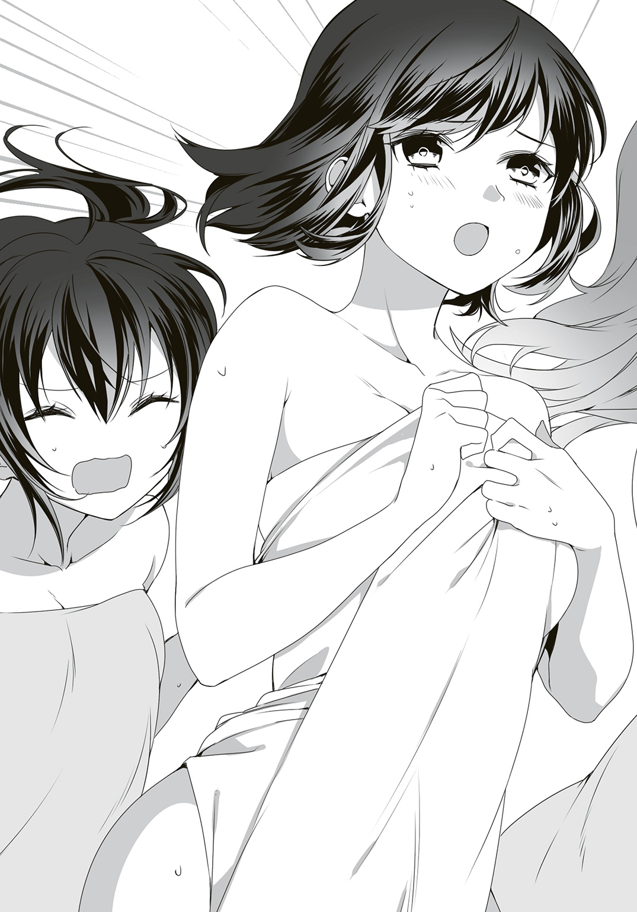
＊
ようやく着替えてレクリエーションルームに戻ったときには、真帆以外の全員がぐったりしていた。
「お疲れ様......」
「うん......」
声をかけられても、春人は顔を向けるほどの元気もなかった。
結局、物音の正体はわからないままだし、蜘蛛はあの騒ぎで風呂場から出ていったようだがもうどうでもいい。
同級生の女の子が裸で湯船にいるって、しかも四人もなんて、滅茶滅茶だろう。なんだあのシチュエーションは。
女の子たちの濡れた素肌を目の前にして、春人はパニックに陥った。
頭が真っ白になって、這うようにして脱衣場に駆け込んだ自分の姿を思い浮かべるだけで死にたくなる。
なんて格好悪い......。でも、あれでパニックにならない奴がいるなら出してみろっていうんだ、そうだよ、あれくらい別に普通だよ、普通。しゃかしゃか四つん這いで風呂場を出るなんて普通――ああああああ。
「ごめんな。湯船に突き落とす羽目になって。これでも食べて、元気出しや」
璃子がいそいそとビニール袋を取り出してきた。
「何それ？」
「放課後、買っておいてん」
ビニール袋からはお茶のペットボトルやら、お菓子やらが次々と出てくる。
「私もお菓子買ってきたよ」
なんと菜々美もスーパーの袋を出してきた。それも、かなりどっさり入って重そうだ。
「私も！」
真帆がバンと袋を床に置いた。
「はいっ、ロウソクとディスポーザブルライター！ ロウソクはさすがに百本ないけど」
「なんやその百物語セットは！ ああっ、どうしてもツッコミをしてしまう！」
璃子が頭を抱えて苦悩する。
「ありがとう、もらうね」
ぐったりしていた春人は、ペットボトルのお茶に手を伸ばした。飲み物を口にすると、少し気分が落ち着く。
「何か食べる？ 甘いものも辛いものもあるで！」
「あ、これ新作だー！ 食べてみようっと！」
女の子たちが楽しそうにお菓子を物色しているなか、瑞貴がおろおろとしている。
「ごめん、何も買ってないの。私、ほんと気が利かなくて......」
「気にせんといて」
「そうそう。ロウソクば買うてくっよか良かばい」
璃子と菜々美が慰めたが、瑞貴はしょんぼりしている。
「ほらほら元気出して。このお菓子美味しいんやで！ あ、こっちも」
瑞貴にお菓子の箱を差し出す璃子を、菜々美がじっと見つめる。
「ねえ、大阪のおばちゃんって、すぐ飴を勧めてくるって本当？」
「うん。『飴ちゃんいるか？』ってくれるよ。......何、あんた私のことおばちゃんって言いたいん？」
「ううん、何だか大阪人のＤＮＡを感じて......」
「余計なお世話や！」
璃子がソファから立ち上がった。
「え？ 何、璃子。そんなに怒ったの？」
「違う。トイレに行こうと思って」
璃子の言葉を聞いた真帆が血相を変えた。
「ダメだよ、死亡フラグだよ！ 一人になった人から死ぬ！」
「ホラー映画の見過ぎや！ つーか、あんた面白がってるやろ？」
「バレた？」
真帆が悪びれることなく笑う。
「だって、こんなホラー映画シチュエーションって滅多にないからさー。あー、東京来てよかったあ。こんな体験できて」
「東京は関係ないやろ！」
真帆がじっと璃子を見る。その顔がみるみるうちに引きつった。
「璃子！ 後ろ！」
「キャ―――――!!」
璃子が体をかがめて悲鳴を上げる。
「後ろにドアがある――って言おうとしただけなんだけど」
真帆がニヤリと笑って言う。
「あ、あんたなあ！ やっていい冗談と悪い冗談があるんやで！」
くってかかる璃子に、真帆がくすくす笑う。
「璃子、いいわー」
「は？」
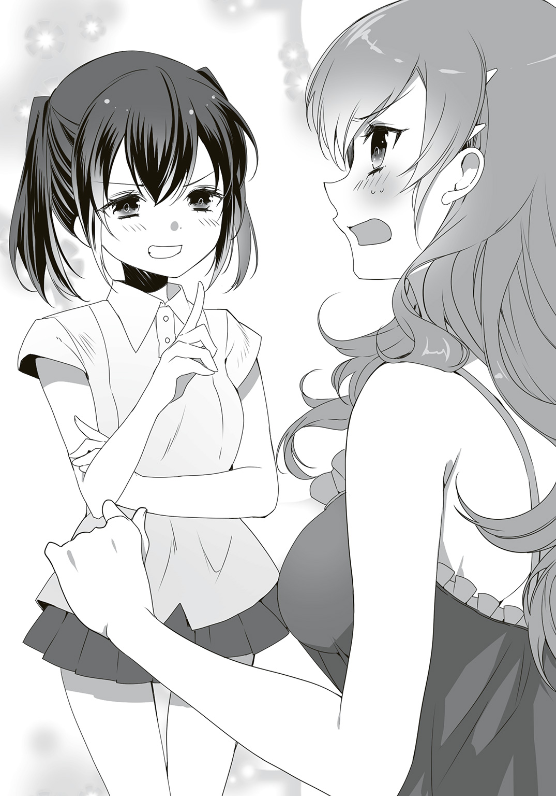
「ちゃんと『きゃ――っ』ていう女子がいるなんて」
璃子の顔が赤くなる。
「な、なんや！ 可愛い子ぶってるわけちゃうで！ ほんまに怖いんやから！」
「ホラー映画の必需品だよ。スクリームクイーン。いい悲鳴を上げられる子って、あんまりいないんだよね」
真帆の言葉に菜々美が頷く。
「そういえばそうかも。私、『ぎゃ―――』って言ってる。色気ないよね」
「そうなん？」
けなされているわけではないと知って、璃子がホッとしたようだ。
「きゃーきゃーうるさいって思われてると思った」
「きゃーきゃーうるさいよ。だから、ホラー映画だとそういう悲鳴担当の女の子は真っ先に殺されるよね」
「イヤアアア!!」
すると、菜々美が突然口を挟んできた。
「でも、気の強い女の子が実は怖がりって萌えよね」
「はあ？ 萌え？」
璃子が怪訝そうにうっとりしている菜々美を見る。
「今書いている作品に使えないかなあ」
「あんたが好きなのってＢＬやろ？ 男しか出てけえへんのやろ？」
「そこは妄想でカバー。璃子の男バージョンとかいいかもって」
「へえ、漫画を描いてるの？」
春人はちょっと驚いた。
読書好きなのは知っていたが、制作もしているとは知らなかった。
「そんな大したものじゃないけど、せっかく東京に来たんだし、私もイベントに出たいなあって思って......」
勢いに任せてカミングアウトした菜々美が顔を赤らめる。
「イベントってあの本いっぱい売ってるやつ？」
「そう。いわゆるコミケは夏と冬の二回だけだけど、もっとこぢんまりしたイベントは毎月のようにあるんだよね。ジャンルにもよるけど」
「毎月！」
「そうなの！ お金がいくらあっても足りないよ......」
菜々美がふう、とため息をつく。
「ところで、真帆はなんでそんなにホラーが好きなの？」
真帆が心外そうに菜々美を見た。
「もっともらしい理由が必要？ 好きなものは好きなの。じゃあ、なんでＢＬが好きなの？」
問い返され、菜々美がぐっと詰まる。
「背徳観がどーのとか、女が入り込めない世界がどーとか、そういう理屈ってどうでもよくない？ 好きだから好き！ それでいいさー」
「そうだよね......。ごめん、変なこと聞いて......」
見つめ合う菜々美と真帆を、璃子が呆れたように見つめた。
「なんかいいこと言うた風やけど、中身がホラーとＢＬっちゅーのがなんとも......」
「うん......複雑......」
「そう？ あんなに夢中になるものがあるのはいいじゃない」
瑞貴がさらっと言ったので、春人と璃子は驚いた。
「あんた、思ったより許容範囲が広いな......」
＊
話をしたり、おやつを食べたりしていると、夜中の二時になった。さすがに皆眠そうで、うとうとしている。
一時頃に小さな物音らしきものがした他には、何事もなく穏やかな時間が流れた。
「そろそろ次の見回りに――」
春人がそう言いかけたときだった。
ガタン、ガラガラガッシャ――――ン!! と大きい物音が廊下の外から響き渡った。
「きゃ―――――――!!」
「ぎゃ―――――――!!」
「ぐぎゃっ!!」
「やった――――――!!」
女の子たちがそれぞれ悲鳴と歓喜の声を上げる。
「何、今の音！」
「外から聞こえたね。たぶん食堂だ。見てくる！」
春人がそう言うと、寮生たちもすっくと立ち上がった。
「私も行く！」
「私も！」
「危ないから、来ないで！」
春人は立ち上がった少女たちを制止した。
さっきとは違い、あれほどの物音がしたのだ。何かがいる可能性が高い。
だが、女の子たちは血相を変えて拒否してきた。
「絶対、一人になりたくない！」と、怯える璃子と菜々美。
「絶対、幽霊を見るんだから！」と、主張する真帆。
「私が退治する！」と強がる瑞貴。
とても止められる雰囲気ではない。春人は仕方なく、彼女たちを連れていくことに決めた。
泥棒だったらどうしよう......。何か武器のようなものがあればいいのだが。
ドキドキしながら、春人はドアへと向かった。後に続こうとした瑞貴が、勢い余って春人の背中にドンとぶつかる。
「ひゃあ！」
瑞貴が奇声を上げ、ぐっと春人の背中を摑んだ。
「うわっ！」
バランスを崩して春人は仰向けに転んだ。床にしたたか背中をぶつけ、一瞬息ができなくなった。
「......！」
「だ、大丈夫？ ごめんね！」
春人を助け起こそうと慌てた瑞貴がつんのめる。
「あっ......」
声もなく瑞貴が上から滑るようにして落ちてきて、春人の上に降ってきた。
「うぐっ！」
瑞貴の膝が見事に春人のみぞおちに刺さり、激痛に春人は声を失った。
「ご、ごめんね！」
「」
いやあ、大丈夫だよ、このくらい。
そう言おうとしたが声にならない。
「あ、あんたら、なんでそんなに鈍くさいん......」
璃子が呆れたように見下ろしてくる。
春人もかなりのドジだが、瑞貴もこう見えてドジっこ指数はかなり高い。
「あーあ、これだけ大騒ぎしたら、幽霊も消えちゃうよね......」
真帆ががっかりしたように呟く。
「そもそも、幽霊があんな音を立てるかな？」
至極真っ当なことを言い出した菜々美に、真帆がハッとしたような表情になった。
「......もしかして、ポルターガイストかも!!」
「いやいや、ジャンルを広げていかないで！」
そのうち、ゾンビがーとか狼男がーとか言い出しそうだ。
「ポルターガイストって何？」
興味津々で尋ねる瑞貴に、真帆が意気揚々と語り出す。
「直訳すると、『騒がしい霊』。誰も手を触れていないのに、物が勝手に移動したり、音がしたり、発光、発火などが起こる現象よ。いわゆる心霊現象の一種ね」
「へえ......」
「映画もあったよね」
菜々美の言葉に真帆が頷く。
「うん。ちなみに映画の『ポルターガイスト』シリーズでは出演者の死亡が相次いでいることでも有名なの。老人だけじゃなく、二十代の女の子が彼氏に殺害されたり、一番衝撃だったのが主役の十二歳の女の子が急死したこと。呪いじゃないかって言われてる」
「怖すぎ！ イヤアアアア！」
「ほらほら、余計な話ししてないで行くよ！」
呆れた様子の菜々美が急かす。
「しかし、意外とオカルトに興味があるんだな......」
瑞貴の意外な一面を知れて嬉しかったが、今はまず物音の原因の究明が必要だ。
廊下に出ると、しんと静まり返っている。一階には春人が使っているゲストルームの他に、食堂とレクリエーションルーム、それに風呂がある。
「......食堂かな」
金物が落ちるような音がした。そういうものがあるのは食堂だ。
春人はそっと向かい側にある食堂を覗いた。真っ暗で、人の気配は一応ない。
電気をつけると、床にステンレスのお盆やカップが散乱している。
「なんで落ちたんだ......？」
謎はすぐに解けた。
「ニャー」
可愛らしい鳴き声とともに、真っ白な子猫が春人たちの足下にやってきたのだ。
「おまえかー」
一気に緊張が緩み、寮生たちは顔を見合わせて苦笑しあった。
この子猫はたまに寮を訪ねてくる寮生の人気者だ。
「なんでこんな夜中に来てるのー？」
「ちかっぱ可愛か～」
女の子たちは子猫を抱き上げてなで回す。
「はいはい、みんな猫を外に出して。何事もなかったことだし、もう寝るよー」
「はーい」
「それにしても、どこから入ったのかな......」
「ねえ、この窓開いてるよ」
菜々美が指差す方を見ると、食堂の窓が一箇所、少し隙間が空いている。
「ここから入ったんだ」
「えっ、施錠忘れ？ 物騒だなー」
寮や学校の周りは緑が多く、どちらかと言えばのどかな場所だが、さすがに夜間施錠しないのはまずい。
「俺のチェックミスだな......」
春人はほぞをかむ思いだった。一応、夜ご飯が終わった段階で施錠を確かめていたのだが、だんだんルーチンワークになっていて、見逃したらしい。
「そう落ち込まないでよ」
「ね、元気だして」
しょんぼりする春人を皆が慰めてくれる。
すると、瑞貴がそっと春人のそばに来て深々と頭を下げた。長い黒髪がさらりと揺れる。
「......ごめんなさい」
「えっ？」
「私のせいなの」
「どういうこと？」
春人だけでなく、他の寮生たちも驚いて瑞貴を見ている。
「実は、たまにこうやって施錠した後の食堂の窓を、小さく開けていることがあるの。猫が入れるように......って」
「え......」
「ごめんなさい！ 前にお風呂に一階に下りたとき、猫が鳴いていて入りたそうだったから、可哀想になって......」
瑞貴が再び頭を下げる。
「そっか......でも、不用心だからこういうことはもうしないで？」
「はい......」
瑞貴がしょんぼりと頷く。
「あー、びっくりした」
「でも、よかったよ、ホラー映画っぽくて！」
真帆だけが上機嫌だ。
「なんで今のがホラー映画っぽいの？」
「だって、ホラー映画の定石だよ。うわっ、何かいる、と思ったら猫でしたーって。ほら、『ペットセメタリー』とか――」
「もうホラー映画の話はいいから。レクリエーションルームへ戻るよ」
寮生たちを押し出すようにして廊下に出たときだった。
カシャン、という微かな音が耳に届いた。
「......二階からだ」
全員が顔を見合わせる。皆が聞こえたということは、空耳ではない。
「や、やっぱり幽霊って二階にいるんや!!」
「わかった、確かめよう」
そうっと足を忍ばせ、二階へと続く階段を上がる。春人の後を、寮生たちが静かについてくる。
二階に上がると、春人はびくっと足を止めた。
廊下の奥で、さっと黒い人影が走るのが見えた。春人だけでなく、皆が見ていたらしい。
「きゃ――――！」
「お化げ、出だ―――！」
「たましぬがち――――!!」
「ほんに幽霊ね!?」
寮生たちが一斉に叫んだので、春人は混乱してしまった。
「ごめん、何言ってるかわからない！ お願い、わかるようにしゃべって！」
「だから、お化けって!!」
「違う......」
一瞬だけしか見えなかったが、あの人影は男っぽいし、幽霊じゃない。普通に走っていた。
ということは、つまり泥棒？
「......皆は一階に戻って、警察に電話して」
「えっ？」
「あれは幽霊じゃない」
「あっ！」
璃子が声を上げた。
廊下の奥の窓に、黒い人影が飛びつくのが見えた。逃げる場所がなくて、戻ってきたのだろう。
暗いし遠いが、その姿は男に見えた。間違いない。幽霊ではなく、侵入者だ。
「早く一階へ！」
そう叫ぶと、春人は男に向かって突進した。
俺が彼女たちを守らないと！
窓を開け、片足を窓枠にかけた男に春人は無我夢中で飛びついた。
「わあああっ！」
思ったよりも細い体をした男が悲鳴を上げる。これなら、押さえ込めるかもしれない。
そう油断したときだった。
男が死にものぐるいで暴れ出した。振り回した手が、春人の顔面に当たる。
「うわわっ！」
春人は必死で男を押さえ込もうとしたが、そのときふわっと体が宙に浮いた。
「えっ......」
引きつった男の顔が間近に見える。
どうやら勢い余って窓の外に飛び出してしまったらしい。
春人はなすすべもなく、男の襟元を摑んだまま落下した。
目の前に、木が迫ってくる。
そうだ、木の上に落ちたら、少しは衝撃が軽く――。
「うわあああああああ!!」
枝や葉が体中に叩きつけるようにして当たる。
そして、ドンと大きな衝撃が春人を襲った。
春人は気を失った。
＊
「お手柄だったね―――!!」
病院に駆けつけてくれた養護教諭の荒井さくらが笑顔で拍手する。寮生たちに囲まれ、春人は照れくさくなった。
「いや......なんか、必死でよく覚えていないんですよ......」
春人は男を下敷きにして落ちたおかげで、かすり傷程度で済んだ。
男は肋骨を折ったが、命に別状はなく、現在取り調べ中だ。
「どうも最近、この辺りであった連続下着泥棒の犯人らしいわよ～」
どこで情報を仕入れてきたのか、さくらがしたり顔で話す。
「十代の女の子がいる家を狙っていたらしいから、女子寮は格好の標的よね」
寮生たちが怖そうに顔を見合わせる。
「うわ......気をつけないとね」
「皆で起きてて良かったね！ 被害に遭う前に捕まえられたし」
「でも、どうやって侵入したのかな？」
「それはたぶん、私のせいです......」
考え込むさくらに、瑞貴がうつむくようにして自己申告した。
「夜に猫のためにこっそり食堂の窓を開けていたので......」
「そうなの？ ダメだよ、危ないから！」
「すいません......」
瑞貴がぺこりと頭を下げる。
「しっかしさー、やっぱり幽霊なんかおらへんやん」
璃子がばかばかしいといわんばかりに大げさに言う。怯えていたぶん、真相がわかって余裕が戻ったらしい。
そんな璃子を、真帆がじっと真剣な目で見つめた。
「......そう思って振り返るといたりするさー」
「怖いこと言いなや！」
真帆に脅かされ、璃子がびくっと体を竦める。
その様子に、春人たちは思わず笑ってしまった。落ち込んでいた瑞貴も笑っていて、春人はホッとした。
幽霊騒動に振り回されたが、そのおかげもあって侵入者を捕まえられたし、皆の新しい一面を知ることができた。
悪いことばかりじゃなかったなあ。なんだかんだで楽しかった。
春人は皆で過ごした一夜を思い出し、顔がほころぶのを感じた。
＊
「大変だったね―――!!」
翌日、女子寮に下着泥棒が入って捕まったとのニュースが学校中を駆け巡り、春人は一躍注目の的になった。
「すごいね、戦ったんでしょ？」
クラスメイトに囲まれ、春人はドキドキした。中学のときはいつも遠巻きにされていたのに。
「い、いやあ......。夢中で男を捕まえようとしただけだよ」
「やっぱり男の子がいると安心だよね」
「ねー、女子しかいないのって、こういうとき怖いよね」
クラスメイトにそう労われ、春人はようやく寮長として認められた気がして嬉しかった。
女子寮に男子の寮長ということで、色眼鏡で見られることが多かったのだ。
「五十嵐くん、ちょっといいかな？」
教室に来たさくらに呼ばれ、春人は廊下に出た。
「はい、なんでしょう？」
さくらの表情からして、何かトラブルがあったようだ。春人は身構えた。
「警察から連絡あったんだけど、例の下着泥棒、あの日初めて寮に侵入したって言ってるのよ」
「えっ......」
しかし、一昨日も璃子と瑞貴が、夜に二階で不審な人影を目撃している。もっとも、璃子は女性だと言っていたが。
「事件の前日の夜にも、二階で人影を見たんだよね？」
「ええ、璃子ちゃんと瑞貴ちゃんが......」
「二人の見間違いかなー。それとも犯人が噓をついてるのかも。でも、そんな噓をついても罪が軽くなるわけがないしね」
「......」
確かに何かしっくりこない。
「もしかして、別の泥棒か痴漢が侵入したかもしれないわね。引き続き、施錠に気をつけて。こちらも警察にパトロールを強化してもらうから」
「はい......」
てっきり前日は下見に来て、昨日が本番の盗みだと思っていたが、確かに下着泥棒は二階の奥に追いやられ、おろおろしたように窓へと行っていた......。
もやもやしたまま、春人は教室に戻った。
＊
「春人、どうしたの？」
放課後、寮の庭で木を見上げている春人に、瑞貴が声をかけてきた。ちょうど、下着泥棒と一緒に落ちた場所だ。
「いや......ちょっと気になってさ」
「何が？」
「う......ん」
春人は逡巡した。余計なことを言って瑞貴を怖がらせたくないし。
そのとき、春人は気づいてしまった。
今、自分は瑞貴と二人きりだ！ 寮と木々に挟まれたこの空間に、自分たち二人しかいない！
いつも寮生たちといるので、二人きりになるのは久しぶりでドキドキする。
この前できなかった告白の続きを......一瞬、そんなことを思った春人だったが、声が出てこなかった。
無理、無理だ!! 断られて気まずくなるのが目に見えている。せっかく普通に話せるようになったんだ。これ以上望むのは贅沢だろ。
春人はとぼとぼと瑞貴から離れた。
我ながら言い訳ばっかりの根性なしだなあ。でも――勇気が出ない。
「ん......？」
前方に一人の少女が立っている。青いブレザーの制服で同じ高校の生徒のようだが、見たことがない子だ。
くせ毛なのか、少しふわりとした髪が揺れている。
なぜ、寮の庭にいるのだろう。
すると、くせ毛の少女がこちらを見た。
「勇気を出さないと、後悔するよ」
「えっ」
いきなり核心を衝かれ、春人は絶句した。
「振られるのが怖いとか、今の関係を壊したくないって思っちゃうよね～」
まるで心を読まれているようで、春人は呆然と彼女を見つめた。
「でも、チャンスって何度も巡ってくるわけじゃないんだよ。相手に伝える機会は、これが最後かもしれない」
大げさな表現に思えたが、くせ毛の少女は寂しそうに微笑んだ。
「私なんかさー、告白する前に窓から落ちちゃって！ もう最悪！ うっかり落とした紙を摑もうとしたらバランスを崩しちゃったんだよねー」
「えっ......」
それは――失恋した寮生が窓から落ちたという女子寮の怪談に似ていた。
春人はまじまじとくせ毛の少女を見つめた。見たことのない、同じ高校の制服を着た少女。
そして、本来寮生以外は入れない敷地にいる少女。
まさか――。
「ほら、頑張れ！ 私みたいになりたくないでしょ！ いきなさい！」
春人はハッと振り向いた。
瑞貴は木の下に何かを見つけたのかしゃがみ込んでいる。
ほっそりした背中、さらさらと動く長い黒髪。やっぱりとても綺麗だ。後ろ姿だけを見ても。
今がチャンスだ。瑞貴の顔を見たら、また言えなくなる。
春人は瑞貴の後ろ姿に向かって、思い切って叫んだ。
「す、好きです！」
瑞貴の背中がびくりと揺れた。
瑞貴がゆっくり振り向きながら立ち上がる。
風になびく黒髪の間から、整った顔が少しずつ露になる。
春人はドキドキしながら返事を待った。
ゆっくり瑞貴が微笑む。あの、滅多に見られない無邪気な笑顔だ。
春人の心臓がどくんと大きく跳ねる。
――まさか――。
「私も大好ぎだよ！」
「えっ」
思いがけない返事に、春人は信じられない思いで瑞貴を見つめた。まさか、これは夢なんじゃ――。
「この子、ほんとうにめごいよね～」
笑顔を浮かべる瑞貴の腕の中には、白い猫がいた。いつも寮に来る例の猫だ。猫を見つけてしゃがんでいたらしい。
「......猫」
春人はぼそっと呟いた。
「うん！」
瑞貴が笑顔で頷く。
「猫......」
そっか、『猫が大好き』か......。
呆然とする春人の肩に優しく誰かが手を置いた。
（頑張って......）
力づけるような囁き声が耳元で聞こえる。
春人が振り返ると、くせ毛の少女が笑顔で手を振っていた。
「あ――」
もしかしてきみは――。
そう尋ねようとした瞬間、くせ毛の少女の姿がかき消えた。
まるで、空気に溶け込むように。まるで、最初からそこにいなかったかのように――。
「えっ......？」
猫を抱いた瑞貴が大きく目を見開く。
「見た？」
「見た!! 女の子が――消えた！」
春人と瑞貴は呆然として顔を見合わせた。
「え？ えっ......今の本物？」
「幽霊？」
二人はしばらくじっとお互いの顔を見つめ合った。
「......このことは二人だけの秘密にしない？」
「そ、そうだね。また璃子ちゃんが大騒ぎしそうだし、消えたし......」
春人はくせ毛の少女の言葉を思い出した。
彼女は告白できずにうっかり窓から落ちてしまったと言っていた。
寮で亡くなった少女は、自殺ではなく事故死だったのだ。
一昨日、就寝の点呼のときに、告白しそこねた自分。
あのとき感じた冷たい空気。そして、その直後に璃子が幽霊を目撃していた。
あれは、告白できなかった自分を重ねて出てきたのだろうか？
だから、頑張れって......。
春人は愛しげに猫を撫でている瑞貴を見つめる。
さっきは失敗したけれど――次は頑張ってみるよ。できればそう遠くないうちに。
彼女の優しいエールが、春人の心に静かに響いていた。
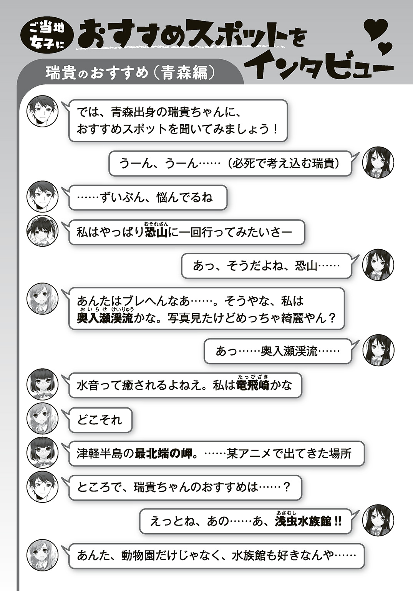
第２章 初めての合コン
――思いがけない出会い
「それでは春の校外学習のお知らせです」
教壇に立った先生の言葉に、クラスがざわついた。
それは高校に入学して最初の学校イベントだった。
春人はぐっと心臓に、冷たいものを差し込まれたような気分になった。
「四、五人の班を作って、希望の場所を選んだら、班長が用紙に必要事項に記入し、クラス委員に渡すように。今から概要を書いたプリントを渡します」
配られたプリントに早速目を通すと、候補の場所の一覧が書かれている。
「えっと、浅草コース、スカイツリーコース、上野コース......色々あるなあ」
東京出身の春人にとってはお馴染みの場所ばかりだが、一緒に行く人が違うとまた楽しさも変わってくるのだろう。
「ああっ、上野がある！」
瑞貴が素っ頓狂な大声を上げ、クラス中の注目を浴びた。
「す、すいません......」
瑞貴が真っ赤になってうつむき、プリントで顔を隠している。
上野が気になるのだろうか。
春人はプリントに目を落とした。
上野コースは当日、九時に上野駅に集合し、国立科学博物館を見学するらしい。
「あれ......？」
プリントを凝視していた瑞貴が、そっと春人の背をつついてくる。
「どうしたの？」
「あの、上野コースに動物園が入ってないんだけど......」
「うん、国立科学博物館に行くみたいだね」
「そんな......上野なのに動物園が選択肢にないなんて......」
瑞貴が呆然としている。信じられないというように目を見開き、プリントをためつすがめつする。
瑞貴のあまりの落胆ぶりに、春人は驚いた。
「しょうがないよ、学校からの校外学習だし」
「でも同じ上野だし、動物園でもいいんじゃないかな......ね？ 動物園の方がいいと思わない？」
「いや、候補にないからダメだって。動物園はまた別のときに行こうよ」
「わかった......」
瑞貴がしぶしぶ頷く。どうやら上野動物園にかなり興味があるらしい。
「班は四、五人だって。寮生の五人で班を作るんでいいよね？」
璃子が声をかけてきたので春人は頷いた。
「どのコースにする？」
「私、上野がいい！」
珍しく、瑞貴がはっきりと主張した。
「でも、動物園じゃないよ？」
「わかってる！ でもこの展示も見てみたいの。『絶滅した動物たちと絶滅危惧種のレッドリスト』ってやつ！」
「動物が好きなんだね」
春人がそう言うと、瑞貴が力強く頷いた。
「皆はどう？」
「上野って行ったことないし、いいよー」
璃子たちがそう言ってくれたので、春人たちの班は上野コースに決定した。
春人はプリントに目を通し、当日の流れを確認した。
上野駅の公園口に十時に集合。教師にチケットをもらい、博物館に見学に行く。昼食は各自自由で十四時に上野駅に再集合して出欠を取ったら解散。後日、レポートを提出。
「校外学習楽しみだね！」
「そ、そうだね」
菜々美にそう言われ、春人は笑顔がひきつらないよう頑張る必要があった。
高校に入学して、初めての学校のイベントだ。
中学のとき、トラブルメーカーとして名を馳せた春人には、知られたくない暗い過去があった。
それは隣のクラスの緒方浩輔も関係しており、二人の不運ぶりのせいで、せっかくの遠足や登山、スキー学習に林間学校、そして修学旅行を台無しにしてきた。
遠く離れた高校に入学し、その過去を知っているのは同じ中学出身の浩輔だけだが、高校でも同じことをしてしまえば、また冷たい視線を浴びることになる。
女子寮に厄介になっている身としては、困った立場に追いやられることになるのは必至だ。
ああ、雨が降りますように......。
ダメか......体育祭ならいざ知らず、校外学習は雨くらいでは何ともならない。
じゃあ、嵐......季節外れの台風とかお願いします。電車が止まるくらいのやつ......。
「何を祈ってるの？」
クスクス笑いとともに声をかけられ、春人はぎょっとして振り向いた。
すぐそばに、プリントを手にした亜沙子が立っていた。
「な、なんでもないよ」
「そう？ 随分真剣な顔で祈ってたように見えたけど」
亜沙子がからかうように顔を覗き込んでくる。彼女の揺れる長い髪が触れそうになり、春人はドキドキした。
「な、何か用？」
「これ、校外学習の提出用の紙。希望の場所とメンバーの名前を書いて、私に出してくれる？」
「あ、ああわかった」
そういえば、亜沙子はクラス委員だっけ。気さくでしっかり者の彼女にぴったりな役職だ。
「お願いね」
春人は顔をひきつらせながら頷いた。
校外学習か――。
暗澹たる気持ちになったとき、教室のドアが開いた。
何気なくそちらを見た春人の目に、一番見たくない顔が映った。
隣のクラスで中学の同級生、くだんの緒方浩輔だ。
「春人――――！」
目が合うと、人の気も知らずに嬉しそうに手を振ってくる。
そもそもなんで、こいつは俺と同じ高校に来たんだよ。
手招きされたので、春人はしぶしぶ席を立ち、廊下に出た。
「どうしたんだよ、春人。冴えない顔をして」
「校外学習の話があったろ？」
「うん！ 楽しみだなあ。班分けでさあ、女の子と一緒になってさあ」
「......おまえ、記憶力ないのか」
「はあ？」
浩輔がきょとんとしている。
「中学校のときの悪夢を忘れたのか？」
「えっ？ ああ、まあ色々あったよな。でも、過去に囚われてどうする!!」
「ぐっ」
浩輔からの思わぬ正論攻撃に、春人はぐうの音も出なかった。
「過去は過去、現在は現在、割り切らないと！ きっと楽しいって！」
「な、なんでおまえはそう楽観的なんだよ！」
「逆になんでお前はそんなに昔を引きずってんの？」
浩輔が心底不思議そうに尋ねてくる。
忘れっぽいやつが本当に羨ましい。あれほどのトラブルの数々を忘れるなんて無理だ。
「そんなことより、大事な話があるんだ！」
浩輔がぽんと肩を叩いてきた。
＊
「えっ、合コン？」
「そう！ お願い！」
校舎裏に連れていかれたと思ったら、いきなり浩輔に手を合わされた。
こんな神妙に頭を下げる浩輔を見るのは、中学のときに同じクラスの子の連絡先をねだられて以来だろうか。微妙な思い出が蘇る。
「急にさ、声をかけていた他校の友達が行けなくなってさ......。二対二の合コンだから、俺一人で行ったら女子に怒られるだろう？ 頼む！ 必死でセッティングした珠玉の合コンなんだ！」
浩輔が大げさなのは今に限ったことではないが、それでもピンチなのは伝わってきた。
「珠玉って......こういうときに使う言葉だっけ」
「とにかく頼む！」
浩輔が再び両手を打ち鳴らし、頭を下げてくる。こんなに必死に拝まれては、自分が何とか大明神になった気分だ。
「合コンのピンチヒッターとか、俺には無理だよ。そもそも合コンなんて行ったことないし、うまくやれる気がしない」
それに自分にはもう、瑞貴という好きな子がいるのだ。
「俺がついてるって！」
浩輔が力強く自分の胸を叩く。
「だから不安なんだよ！ 俺とお前の最悪コンビだぞ!?」
「大丈夫だって――――!!」
浩輔がバシバシと肩を叩いてきて痛い。その根拠のない自信はどこから来るのだ。
「おまえ、中学のときのこと、引きずりすぎだぞ？ 気持ちを切り替えろよ！」
「......」
「それに合コンに行ったことがないなら、ちょうどいい機会じゃないか！ 何事も経験！ 失敗しないと成功はない！」
「う......」
確かに合コンというものを体験してみたくはある。
春人の心が揺れたのを察知したのか、浩輔が更にダメ押しをしてきた。
「相手はなんと、白蓮女学院の子たち!! 超お嬢様学校の子と合コンなんて、これが最初で最後かもしれないんだぞ？」
「えっ、白蓮の子たちなのか......」
白蓮は全国に名を轟かせている都内屈指のお嬢様学校だ。偏差値がトップランクというだけではなく、学費と外見レベルも同じくらい高いと噂の女子高校だ。
もちろん、春人は今まで白蓮の生徒など見たことがない。
聞くところによると、ハイヤーで登下校する生徒が多く、珍獣並みの貴重さだという。
「よく、合コンをＯＫしてくれたな......」
「だから、奇跡なんだよ！ これを逃す手はない！ よしんば、今回うまくいかなくても、連絡先をゲットして繫ぎさえすれば、またその友達を紹介してもらう手もあってだな」
「......そんな先のことまで考えているのか」
春人は驚いて浩輔をまじまじ見つめた。
「当たり前だろ！ 常に先を見越して行動するというのは基本！」
「その割に夏休みの宿題を、最終日に慌ててやってたのはどういうことだ」
「勉強は別！ 十代で最も大事なことは恋愛だろ!?」
「そうか？ そうかなあ......」
瑞貴の顔が浮かび、思わず迷いが出てしまった。
「とにかく、放課後吉祥寺駅前で待ち合わせだから！ 一緒に行くぞ！」
「あ......ああ......」
浩輔の勢いに押されて頷いてしまう。
白蓮の子たちと合コンなんて、恐らく一生に一度の機会だろう。春人は好奇心に負けてしまった。
＊
授業が終わり、帰る用意をしている春人の前に璃子が来た。
「ねえ、春人。これから寮生のみんなで自由が丘に行こうって言ってるんだけど、一緒に行かない？」
「えっ」
寮生たちからのお誘い。つまりは瑞貴も一緒ということで。
行きたい――。
でも、よりにもよって今日とは――さっそく浩輔の不運が襲ってきたわけだ。
「今日はちょっと用事があって......」
「用事って？」
「えっ......」
璃子に無邪気に問い返され、春人は絶句した。
――合コンに行くんだ――。
その一言が言えなかった。後ろの席にいる瑞貴はなんて思うだろう。
軽い男とか？ 少なくともよそでガールフレンドがほしいのだと思われるだろう。
誤解を招きたくない。今日はあくまで浩輔の付き添いで行くのであって、それ以上でも以下でもない。
「う、うん、ちょっとね......その......」
咄嗟にうまい言い訳が出てこない。心拍数が上がり、やたら瞬きしてしまう。
「浩輔にさ、今日買い物に付き合ってくれって頼まれてさ......女の子へのプレゼントで悩んでいるらしくって」
ハハハ......と笑ってみせたが、我ながらわざとらしい笑い声でげんなりした。
「えっ、そうなんだ。私たちも行こうか？」
「いやっ、それはっ！ だ、大丈夫！ みんな楽しんできて！ じゃあ！」
春人はそそくさと逃げるようにして教室を出た。
まるで浮気男の気分だ。そもそも付き合ってもいないのに、なぜか物凄く後ろめたい。
これも浩輔のせいだ......。
いや、白蓮の誘惑に負けた自分のせいか......。
「おっ、春人！ 今お前を迎えに行こうと――」
「いいから、来い！」
呑気に隣の教室から出てきた浩輔を引っ張り、春人は足早に廊下を進んだ。
＊
待ち合わせの駅前へ着くと、浩輔がにへらと相好を崩した。
「彼女たちまだ来てないな。あー、楽しみだなあ。白蓮の制服って可愛いよなあ。その女の子たちと一緒にボウリングだぜー！」
「えっ、ボウリングに行くんだ」
思わぬイベントに、春人は驚いた。
「言ってなかったっけ？」
「聞いてないよ......」
合コンと聞いていたから、てっきりファミレスでも行くのかと思っていた。
「俺、ボウリングとか家族で一回行ったきりなんだけど......」
「俺はまあ、結構行ってるからな」
浩輔が得意そうに笑む。浩輔からボウリングの話なんて聞いたことがないが、かなり自信があるらしい。
「最高スコアってどのくらい？」
「......」
「なあ」
「......」
浩輔は顔をそむけて答えない。
嫌な予感しかしない。浩輔が一緒な時点で何か良くないことが起こる可能性が高いのだが。
「いい格好を見せたいなら、逆効果じゃないか？ ファミレスやカフェにした方が無難――」
言いかけた春人の胸ぐらを浩輔がぐっと摑んだ。
「おーまえーはなーにを言ってるんだ！ そんな場所にしたら、テーブルを挟んで座ってしゃべるしかできないだろーがー!!」
「えっ、合コンってそういうものじゃないの？」
テレビや話で聞く限りは、間違っていないと思うのだが。
「愚か者ッ!! それでどうやって女子にさりげなく触れるっていうんだよ!! せいぜい、メニューを渡すときくらいだろうが!! ボウリングなら、いくらでもチャンスがあるんだよ！ 一緒にボール選びをしたり、ストライクが出たらハイタッチしてみたり！」
「で、でもストライクなんか出せないだろ......？」
「黙れッ!! 俺が出せなくても彼女たちが出せばいい!! 何ならガターでもハイタッチすればいい!!」
「......」
滅茶苦茶だ......。浩輔の何が何でも女子に触りたい、という意気込みが上滑りするのは必至だ。
やっぱり断れば良かった。そうすれば、寮生たちと一緒に自由が丘に行けたのに。
「お待たせー」
明るい女の子の声がして、春人と浩輔はハッと振り返った。
手を振ってこちらに向かってきたのは、目を引く白いワンピースタイプの制服を着た女の子だった。胸元には蓮のエンブレム。テレビや雑誌の中でしか見たことがないが、春人も知っていた。
間違いなく白蓮の制服だ。
そして、伝説は本当だった。
待ち合わせに来た白蓮の女の子はふわふわした髪をヘアバンドで留めている、驚くほど可愛い少女だった。
想像以上の美少女の登場に、二人は情けなくも硬直してしまった。
「あっ、どっどうも......おっ、緒方浩輔です......」
浩輔がしどろもどろになりながら自己紹介する。
「今日は杉原くんが来られなくなったから、俺の友達を連れてきたんだけど......」
「あ、うん。杉原から聞いてるよ。初めまして、白蓮の一年、竹本佐奈です」
佐奈がにこりと微笑む。
「あ、俺の友達の五十嵐春人。同じ高校なんだ」
「今日はよろしく、五十嵐くん」
笑顔に見とれていた春人は、ようやく佐奈を落ち着いて観察できた。
真っ白いワンピースの胸元には、同じく真っ白なリボンが結ばれている。ボタンは金色で、胸元の蓮のエンブレムと袖口のラインも金色だ。
なんて、高貴で清楚な制服なんだ......！
そして佐奈はその可憐な制服を完全に着こなしていた。制服に勝るとも劣らない、真っ白いすべすべの肌、丸く大きい目はきらきらと輝いて眩しいくらいだ。
駅前を通る人たちが佐奈をちらちら見ていくのがわかる。
「あの、竹本さん一人だけ？ もう一人は？」
「それがこっちも一人、急に来られなくなっちゃって......」
「えー？」
じゃあ、俺が来る必要なかったんじゃ......。
春人がそう思ったとき、佐奈が続けた。
「だから、中学のときの友達に、ピンチヒッターに来てもらうことになったから！ ちょっと遅れるけど、もうすぐ来るって！ ただ、その子、ウチの学校の子じゃないけどいいでしょ？」
「あっ、ああ、もちろん！」
浩輔の顔は紅潮し、テンションが上がっているのが見るからにわかる。周囲にハートマークが飛んでいないのが不思議なほどだ。
明らかに、佐奈に夢中だ。元々惚れっぽい性質とはいえ、その盛り上がりの早さに改めて感心する。
「そうそう、今日ピンチヒッターを頼んだ子も若葉丘の子なんだ。偶然だねー！」
「えっ」
「あ、来た来た！」
佐奈が手を挙げる。駆け寄ってきた少女に、春人は驚いた。
そこにいたのは、制服姿の蜂谷亜沙子だったのだ。
「遅くなってごめんね！」
「ううん、こっちこそ急にごめん！ 助かるよー。ありがと、亜沙子！」
佐奈に微笑んでいた亜沙子が、春人たちに気づいた。
「あれ......？ なんで春人がいるの？」
「え？ ピンチヒッターって亜沙子さん？」
春人と同じく浩輔もびっくりしたように亜沙子を見ている。
「何？ 二人とも知り合いなの？」
「俺は同じクラスなんだ。浩輔は隣のクラス」
入学早々、美少女チェックをしていた浩輔のリストに亜沙子がいたことからもわかるように、浩輔は亜沙子を一方的に知っている。
「え――――!!」
佐奈が驚いたように声を上げ、亜沙子と春人たちを交互に見た。
「すごい偶然だね！」
「はは......」
春人は戸惑いながら亜沙子を見た。亜沙子はこのハプニングにもさほど動じず、いつものように落ち着いていた。
「じゃあ、四人揃ったし行こうか」
浩輔が先導する形で、四人は歩き出した。
＊
駅から歩いて十分くらいの所に、ボウリング場が入ったアミューズメント複合施設があった。
「へえ......色々入ってるんだなあ」
ボウリングの他にもビリヤードやダーツ、ゲームセンターやカラオケまで入っており、平日といえどなかなか賑わっている。
ボウリング場のある三階に行くと、張り切る浩輔が受け付けをしてくれた。
「俺たちは五番レーンだって。まず靴を借りようか」
自分の足のサイズの靴を借りたはいいが、久しぶりすぎて次にどうすればいいかわからない。
春人はおろおろと辺りを見回した。
「えーと......」
「ボールを選ぶんだよ。ほら、こっち」
亜沙子がポンと肩を叩いて促してくれる。
「あ、そ、そうだね」
レーンの前にある棚にカラフルなボールがずらりと並べられている。
「えーと......」
「ボールに数字が書いてあるでしょ？ これが重さ。そうね、男子だったら大体十一か十二ポンドくらいかな？」
亜沙子がボールを選んで渡してくれる。
「う、うん......」
「結構重いから気をつけて」
慎重に受け取った春人の手に、亜沙子の手が触れる。
ドキッしたが、亜沙子は気にした様子もない。
「どう？ 重さが大丈夫だったら、三つ穴があるでしょ？ ここに指を入れてみて。......あ、違う。人差し指じゃなくて、中指と薬指。それから頂点の所は親指ね。ポイントは、親指がすっと抜けるかどうか」
「うん、これで大丈夫そう」
亜沙子のおかげでボール選びがスムーズにいき、春人はホッとした。本当に頼りになる子だ。
浩輔は、と見ると佐奈にべったり張りついている。
「うーん、佐奈ちゃんにはこれかなー」
浩輔が勝手に選んだのは、重さ十五ポンドの高校生男子でも厳しいボールだ。
あいつ、何やってるんだ？
春人が呆れながら見守っていると、浩輔がドヤ顔で佐奈にボールを差し出した。
「ほら、持ってみ？」
佐奈の表情は明らかに曇っている。もう今にも帰ると言い出しそうで、春人はハラハラした。
「......いいよ。自分で選ぶから」
さっと佐奈が浩輔と距離を取る。
「そんなあ......」
愕然とした浩輔の手からポロッとボールが落ちた。
そして、ズンと重い音を立て、浩輔の足の上に落ちた。
「いっでええええええ!!」
フロア中に浩輔の悲鳴が響き渡り、店員までもが飛んできた。
「お客様！ 大丈夫ですか？」
「あ、はい、指先に当たっただけだから......」
あいつ、余計なことをするから......。
幸い、特に怪我はなさそうだが、フロア中の注目を浴びていたたまれない。
すごすごと十ポンドのボールを持ってきた浩輔にそっと声をかけてみた。
「......浩輔」
「何も言うなッ！ 勝負はこれからだ！」
涙目でそう言われ、春人は頷くしかなかった。
「俺の作戦を聞けッ！」
浩輔が急に肩を抱いてきたかと思うと、合コンでの作戦をひそひそ囁いてきた。
「どうだ？ わかったな？」
「......姑息だな」
「勝つためには手段を選ばぬッ！ それが武士というもの！」
「おまえ武士じゃないし......。だいたい何なの、その妙な喋り。すっごく鬱陶しいんだけど。合コンだからって、テンションが上がりすぎだろ」
春人のツッコミなど無視し、浩輔が意気揚々と指定のレーンに向かう。
浩輔の作戦は思ったよりもまともだったものの、実行するのがトラブルメーカーコンビの自分たちだと思うと不安が拭えない。
「お待たせー。せっかくだから、チーム分けしようよ。男女別でグーパーやるよ。はい、見えないようにそっちでやってね」
めげないところが浩輔の長所であり短所だ。
浩輔のペースに乗せられ、亜沙子と佐奈が頷く。
浩輔が、ばちこーんと春人に向かって強烈なウィンクをしてきた。そんな気持ちの悪い合図をしなくても、作戦はわかっている。
グーパーの時点から、浩輔の作戦は始まっていた。
グーパーをし終えた亜沙子と佐奈がこちらを向く。
「終わった？ じゃあ、どっちがグー？」
浩輔が拳を握ってグーを作り、手を挙げる。
「私」
亜沙子が手を挙げると、浩輔が頷いた。
「じゃあ、春人とコンビを組んで。俺はパーだから佐奈ちゃんとチームだな！」
笑顔で言う浩輔に、悪びれた様子はまったくない。こちらがグーパーなどしていないとは夢にも思っていない亜沙子たちが素直に頷く。
浩輔がこちらを向いて、ニヤリと笑った。
「おまえも頑張れよ！」
ああ、おまえの根性だけは認めるよ。
作戦通りに佐奈とチームを組めた浩輔は、満面に笑みを浮かべている。
うまくいったときの男って、あんなデレデレの顔になるんだな......。ひどい顔だな。気をつけよう。
春人はそう自分を戒めた。友達の振り見て我が振り直せ。浩輔は反面教師としては適役だ。
「じゃあ、俺たちが先攻ね！ 佐奈ちゃん、先に投げる？」
チームごとに投げるというルールで、一回目を女子に投げさせ、そのフォローを男子がやってポイントを上げるという作戦だ。
特に異論はなかった春人だが、ゲームが始まるとその作戦が失敗だとすぐに気づいた。
「ストライク！」
一投目の佐奈が華麗にピンを全部倒したのだ。
「佐奈ちゃん、すごい!!」
浩輔が両手を挙げて拍手する。
「ハイタッチ、ハイタッチ！」
戻ってきた佐奈に、強引にハイタッチを要求する。
彼女にいいところを見せるという作戦は失敗したものの、ハイタッチをして手に触れられた浩輔は嬉しそうだ。
転んでもタダでは起きないやつだ。
「じゃあ、私かな？」
亜沙子がすっと立ち上がる。
亜沙子はかなり運動神経がよく、すらりと引き締まった足をしている。
ついつい見とれていた春人だが、亜沙子が見事にストライクを出したので慌てて拍手をした。
「すごいね！」
「あはは、たまたまだよー」
戻ってきた亜沙子に、浩輔のようにハイタッチを求めることができず、春人はもじもじした。
すると、亜沙子から手を挙げてくれた。
「はい」
春人は慌てて亜沙子の手の平に手を合わせる。
ハイタッチなど初めてやったが、とてもいいものだ。このときばかりは浩輔に感謝した。
「次は男子からどうぞ。投げられないと楽しくないでしょ？」
「わかった！ ダブルを狙うよ！」
浩輔がびしっと連続ストライクを宣言したが、春人には死亡フラグにしか見えない。
たいして上手くないんだから、無理をしないほうがいいのに。
ボールを持った浩輔がドタドタと覚束ない足取りでアプローチを助走する。いかに佐奈や亜沙子が上手かったか、このとき春人は思い知った。
浩輔のような無様な姿はさらしたくない。えーと、どっちの足から踏み出せばいいんだろう。
春人は密かに投球のイメージングを始めた。
「そりゃっ！」
浩輔がブンと大きなスウィングでボールを投げる。
ガゴンと無慈悲な音をさせ、ボールがレーンではなく溝に入っていく。まごうかたなきガターだ。
「あははははは!!」
まっすぐどころか、斜め前に投げる形になった浩輔に、佐奈たちが腹を抱えて笑う。
うん、笑いを取れたんだからいいんじゃないだろうか。
しょんぼり帰ってきた浩輔に、佐奈が明るく声をかける。
「投げる瞬間、手首が曲がってたよ。最後まで集中して投げるといいよ」
そう言うと、颯爽とボールを手に取り、華麗なフォームでボールを投げる。
そして、またもや全てのピンをなぎ倒した。
「やった！ スペア！」
佐奈が大きく手を挙げる。
春人は拍手しながら、ふと気づいてしまった。
はっきり言って、俺たちがいない方がいいんじゃないか？ 佐奈が一人で投げていたらダブルだったわけだし......。
俺たちって足手まといのお荷物じゃないのか、このままじゃ......。
恐ろしい事実に気づき、春人は愕然とした。
だが、浩輔はまったくそんなことを思いもしないようで、弾むようにして佐奈に駆け寄り、またもやハイタッチをせがんでいる。
「ほら、春人。肩の力を抜いて」
ポンと肩を叩かれ、春人はハッとした。
亜沙子が優しく微笑んでいた。
「緊張しないでいいからね。遊びなんだから」
そう言われ、春人は自分の体がガチガチに強張っていたことに気づいた。
固まった体をほぐして立ち上がり、ボールを手にアプローチに向かう。三人の視線が向けられているのを痛いほど感じる。
緊張をほぐすため、軽く息を吐く。
とにかく、まっすぐ投げることだけを考えて、春人は助走に入った。
思い切ってボールを投げる。
「よっし！」
うまい具合に投げられたようで、ボールが真ん中を走る。
「ああっ」
しかし、力が弱かったせいか、両端のピンが一つずつ残ってしまった。
「スプリットか......」
スペアを取るためには、片方のピンにボールを当ててそのピンを飛ばし、もう一つのピンを倒すという高度な技が必要になってくる。
「ごめんね......」
「大丈夫よ、任せて！」
しょんぼりする春人に亜沙子が力強くそう言うと、二投目に入った。
スピードに乗ったボールがピンを跳ね飛ばし、見事にスペアを取る。
「取ったあああああ！」
「すごい！ 亜沙子!!」
浩輔と佐奈からも惜しみない歓声と拍手が沸く。
春人は思わず立ち上がった。今度は自然にハイタッチできる。
「すごいね！」
「あはは、ありがと！」
いつもは落ち着いている亜沙子の、無邪気な笑顔にドキッとしたときだった。
「ぎゃうん!!」
どこかで聞いたことのある、奇妙な悲鳴が耳に入った。
声のした一番奥のレーンを、そっと見た春人は目を疑った。
アプローチの所で思い切り転んでいる、長い黒髪の少女――あれは瑞貴じゃないのか？
慌てて駆け寄るのは、見覚えのある面々――璃子と菜々美と真帆。寮生たちだ。
「え......ええ!?」
思わず声を上げた春人を浩輔たちが驚いて見てきた。
「どうした？」
「いや、な、なんでもない......」
動揺を押し隠し、春人は引きつった笑みを浮かべた。
心臓がドキドキしている。
間違いなくあれは寮生の四人だ。
なんでここへ？ 自由が丘に行くって言ってたのに......。
「まさか......」
俺の跡をつけてきたとか？ 偶然にしてはできすぎだし、理由はわからないがそれしか考えられない。
初めての合コンが気になって、全然背後に気を配っていなかった。というか、そもそも尾行されているかどうかなんていつも気にしていないし......。
春人はちらっと一番奥のレーンを見た。
今度は真帆の番らしく、ボールを重そうに抱えながらトテトテと小走りでアプローチに入っている。
投げるというより、レーンに置くような投球で、ノロノロと亀のようなスピードでボールがレーンを進んでいく。
パキャ、パキャ、パキャ、と一つずつピンが倒れ、なんと全部のピンが倒れた。
わあっ、と歓声が寮生たちの間で上がり、嬉しそうに真帆が飛び上がってツインテールを弾ませる。
なかなかボウリングを楽しんでいるようだ。
俺がここにいることは、きっとバレているんだろうな。ああ、噓なんかつくんじゃなかった......。
春人はどんよりした気分になり、肩を落とした。
「ほら、次おまえだぞ！」
「えっ、ああ」
浩輔に声をかけられ、春人は慌てて立ち上がった。
ボールを手にしたものの、まったく集中できない。あの子たちはどういうつもりでここに来たんだろう？ 尾行してきたわりに、楽しそうに遊んでいるし。
「あっ」
投げる前に、すっぽ抜ける形でボールがドスンとレーンに落ちてしまった。もちろんガターだ。
「あーあ。しっかりしろよ！ 全然いいとこないぞ！」
浩輔が煽るように言ってくる。春人はムッとした。
「おまえもさっきからガターばっかりだろ！ 点数取ってるの、佐奈さんばっかりじゃん！」
「何だと！ 本当のことを言うな!!」
浩輔が勢いよく立ち上がり、ついでにテーブルに置いてあった缶ジュースをひっくり返す。
「うわあっ！」
「きゃっ！」
色つきの炭酸飲料が思いっきり、浩輔の腹から足にかけてぶちまけられた。佐奈たちも巻きぞえを喰らいそうになり、慌てて身を引いている。
「あーあ......」
「大丈夫？」
佐奈たちがハンカチを差し出してくれたが、浩輔はそれを断った。
「汚したら申し訳ないから気持ちだけもらうよ！ ちょっと洗って乾かしてくる！」
そう言うと、浩輔がダッシュでトイレに駆け込んでいく。
「大丈夫かな？」
亜沙子が心配そうに聞いてくる。
「ああ、大丈夫。あいつ、ああいうの慣れてるから。むしろ冷たい飲み物でラッキーってくらい。俺が知っているだけで、味噌汁、ぜんざい、パスタ、ラーメン、カレーを自分にぶちまけている」
おどけたように言うと、亜沙子の顔に笑顔が戻った。
「あはははは、すごいね!! 食堂のメニューみたい」
「おっちょこちょいなんだよ」
自分のことを棚上げし、春人は浩輔の失敗談を暴露した。
佐奈はと見ると、スマホを取り出し、滑らかな手つきで何やら操作し始めている。友達とラインかメールのやりとりをしているようだ。
実は春人もスマホを持っているのだが、親と連絡を取るだけの物体と化している。あんなに手早く操作できない。
「あー、久しぶりだけどボウリング楽しいなあ」
亜沙子が大きく伸びをしながら言う。
「亜沙子さん、すごく上手いよね？ 結構通ってたの？」
「ううん、年に二、三回くらいかな。ウチは親や兄がすっごく上手いからね。私なんかいつもドベだったよ」
「ドベ......？」
どうやら最下位という意味らしいが、聞き慣れない言葉だ。
それに今の――なんだか方言っぽくないか？
戸惑っている春人に、亜沙子がちらっと舌を出す。
「あはは、たまーにまだ出るんだよね、方言」
「亜沙子さんって東京出身じゃ......」
亜沙子は生粋の東京生まれの東京育ちだと思っていた。
「東京に引っ越してきたのは小学五年生から。それまで広島に住んでたの」
「広島!!」
思ってもみなかった出身地に、まじまじと亜沙子を見つめてしまう。
「でも方言全然出ないよね？」
「東京にいるとね。でも広島に帰って友達と話すと、すぐに戻るよー。でも、イントネーションとか混じっちゃって、中途半端な広島弁だけどね」
「そうなんだ......」
こんな身近なところに地方出身の女の子がいたとは思わなかった。春人は思わずまじまじと亜沙子を見つめてしまった。
「やっぱり東京に馴染むのに苦労したから、寮生の気持ちがわかるんだー」
「ああ、それで手伝いを申し出てくれたのか」
春人は十日前にやった交流パーティーのことを思い出した。
亜沙子が率先して手伝ってくれて、とても助かった。
「私も訛や方言をからかわれることもあったしね。春人はそういう偏見がなくって、自然体で寮生に接してるよね」
「そ、そう？」
「あんまりそういう子っていないよ。特に男子。やたらネタにしてからかってくる子がいたから、なるべく方言を出さないようにしてるの」
「それは......」
たぶんその男子たちに悪気はなくて、亜沙子と話したくてきっかけ作りに使っただけなんじゃ......と思ったが、憤慨している亜沙子にそう言う勇気はなかった。
「それにしても広島かあ......お好み焼き、食べた？」
「もちろん！ ていうか、何その質問」
亜沙子が吹き出したので、春人は焦った。
「えっ......広島ってよく知らなくて......」
「あー、確かに関東の人って西日本事情に疎い人が多いよね。遠いから、あんまり行かないよねえ」
「うん......」
そもそも春人は豊かとは言い難い経済状態の家庭で育ったので、そもそも関東以外にあまり行ったことがない。
「広島っていいとこだよ。観光で行くなら、宮島がお勧め！ 船で行くんだけど、海の中に鳥居が立っていてね、すごく幻想的なの。青い海に浮かぶ赤い鳥居に青い空ってコントラストがとても綺麗で。そして干潮になったら海が干上がって、鳥居まで歩いていけるの」
「へええええ」
「奈良公園みたいに鹿もあちこち歩いてるし、厳島神社も素敵だし、もみじ饅頭の食べ歩きも楽しいよ！」
本当に楽しかったのだろう、亜沙子が生き生きと話している。春人は彼女の語る光景よりも、亜沙子自身に惹かれた。
「それからねえ、絶対焼き牡蠣は食べるべき!! 生牡蠣も牡蠣フライも牡蠣飯も美味しいけど!!」
「......なんかお腹空いてきたよ」
春人の言葉に、亜沙子が笑う。
「ごめん、ごめん。つい......」
「広島出身の人って初めてなんだ。何かもっと広島弁で話してよ」
「えー？」
亜沙子が照れくさそうに笑う。
「そうだなー。まず、自分のことを〝うち〟って言ってた」
「どんな感じ？」
「うち、今度の校外学習ばり楽しみにしとるけーね、とか」
「す、すごい！ 本物の広島弁みたいだよ！」
春人が思わず感動すると、またも亜沙子が吹き出した。
「本物じゃけ、当たり前じゃろ！」
「ね、ね、しばらく方言を使って話してみてよ」
「えー？」
亜沙子が困ったように笑った。
「そがなこと言うてものぉ。仕方ないなあ。ちょっとだけだよ」
「えーっとね、ボウリングは好き？」
「ぶち好きよ」
「おおっ」
「何よ、もう！」
大げさに驚く春人に、亜沙子が顔を赤くして肩を軽く叩いてきた。
まるで違う女の子と話しているみたいだ。
「そんな驚かんでもええじゃん」
「だって、すごくその......」
可愛い、という言葉を言うのは照れくさかった。
「魅力的っていうか......」
「ほんまに？ えらい変わり者じゃね」
亜沙子が優しげに微笑む。
「でも、きみのそういうとこはええのぉ」
「ありがとう......誉めてくれてるんだよね？ やっぱり方言だと、ちょっとわかりづらい」
「ほれみんさい！」
亜沙子が楽しげに言った。
なんだか、亜沙子と距離がぐっと縮まった気がして嬉しい。
そのとき、気配を感じた春人は一番奥のレーンに目をやった。
寮生たちが全員手を止めて、こちらをじっと見ていた。
その顔に笑みはない。今まで見たことのない、冷ややかな表情が浮かんでいる。
春人はびくりとした。やっぱり噓をついて合コンをしているのが完全にバレている......。
今すぐ逃げ出したいが、まだゲームの途中だし、とても無理だ。
「あー、参った参った。おまたせー」
浩輔がシャツを引っ張りながら戻ってきた。すっかり染みがついてしまっているが、一応拭いて乾かしてきたらしい。
「さて、そろそろ後半戦ということで、ここから本気で勝負しよう！」
「本気で勝負って？」
「一ターンずつ点数が負けている方の組は――はいっ、ポッキーゲームです！」
浩輔がさっとポッキーを取り出す。
「......おまえ、それ......今わざわざ買ってきたのか？」
「何言ってるんだよ。ちゃんとあらかじめ買っておいた!! 合コンにポッキーゲームはつきものだろう？」
そうなのか？ ポッキーゲームってあれだろ？ ポッキーの端と端をくわえて食べていき、キスするかどうかみたいなエロいゲームだろ？ 高校生がやるの？
春人は驚いて佐奈たちを見たが、二人の表情が険しい。
「やあだ、そんなの」
佐奈がツンと顔をそむける。機嫌を損ねている佐奈に、浩輔が慌てて妥協案を出した。
「じゃ、じゃあ、負けている方の男子の膝に女子が座る――」
「却下!!」
三人全員で叫ぶ。
だが、浩輔はへこたれない。
「わかった。わかりました！ 譲歩する！ 負けている間、手をつなぐってどう？」
「......」
女子たちが顔を見合わせる。
「まあ、それくらいなら......」
「よしっ!! ようし!!」
浩輔が大喜びで飛び上がる。
もしや、手をつなぐハードルを下げるために、わざと過激な案を提示してみせたのかと春人は勘ぐってしまった。浩輔がそんなに策士だとは思えないが、こと恋愛に関しては非常に頭が回るのは認めざるを得ない。
「じゃあ、私からね」
佐奈がすっと立ち上がる。今までとは違い、真剣な表情だ。
絶対手をつながない。そんな決意を感じる。
そして、佐奈は一投目でピンをすべて倒した。
「ストライク!!」
「お、おお......」
浩輔ががっかりしたようにうなだれる。
佐奈は当然の結果だというように、悠然と戻ってきた。
そうか、女子の方が明らかに上手いから、彼女たちがコントロールできるのだ。
「じゃあ、私の番ね」
亜沙子がアプローチに向かい、ボールを投げた。
「あっ」
手元が狂ったのか、ボールが少し斜めに走っていく。
ピンが端の二本しか倒れなかった。亜沙子にしては珍しいミスだ。
「ちょっと手が滑っちゃった。春人、頑張って！」
亜沙子がちらっと舌を出す。
「うん!!」
よし、たまにはいいところを見せないと！
春人が張り切って投げたボールは、真っ直ぐ走って残りのピンを全部倒した。
「やった！ スペアだ！」
亜沙子がぱちぱち拍手している。だが、あまり嬉しそうではない。
あれ？
春人は拍子抜けした。もっと盛り上がるかと思ったのに。
「この場合は――」
「まあ、ストライクの方が勝ちでしょ」
亜沙子がそう言うと、手をさっと差し出してきた。
「あ、はい......」
春人はドキドキしながら、その手を握った。思ったよりも華奢で温かい手だった。
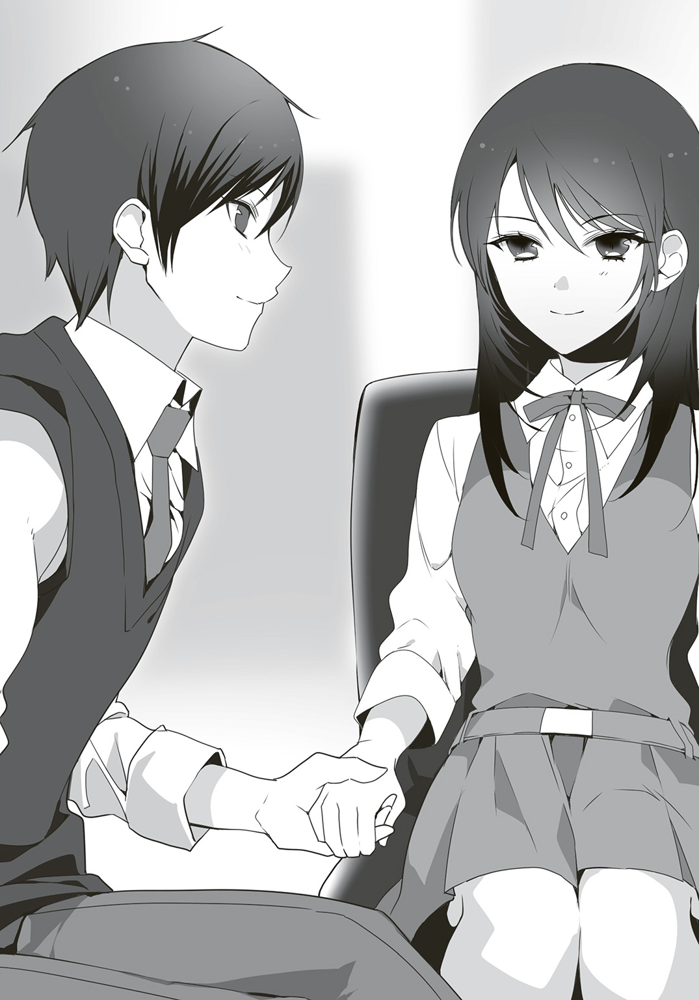
「よし、次ね。またストライク出すよ！」
そう宣言した佐奈だが、残念ながらピンが一つだけ残ってしまった。
「あ―――もう!!」
今にも地団駄を踏みそうなくらい、佐奈が苛立っている。本当に浩輔と手をつなぎたくないらしい。
だが、浩輔はそんな佐奈の様子を気にした風もなく、やる気満々だ。腕をぐるぐる回したり、腰を捻ったりと準備に余念がない。
「よし、スペアとるよ―――――!!」
張り切って走った浩輔がアプローチですっ転び、ぽてんと落ちたボールが溝をゆっくり進んでいく。
佐奈の顔が一瞬にして険しくなった。
「頑張って！」
亜沙子に声をかけ、春人はそっと手を放した。
笑顔を向けてきた亜沙子は、次の投球も失敗し、初めてのガターを出した。
「調子悪いなー」
そう言いながら戻ってきた亜沙子だが、あまり悔しそうには見えなかった。
えっ......まさか、もしかして。
「春人、後をお願いね」
頷きながら、春人は緊張が高まるのを感じた。亜沙子が後半になって調子を崩した理由が気になってしょうがない。
もちろん、そんな状態でいい投球ができるわけもない。
春人は見事なガターを叩き出してしまった。
「はい」
すごすご戻ってきた春人に、亜沙子が手を差し出してくる。
もしかして。もしかして俺と手をつなぎたくてわざと下手な投球を――そんなわけないよな。
友達思いの子だから、佐奈を気遣ってとかが妥当な線だろう。
まあ、俺としては手をつなげてラッキーなんだけど――。
「コホン」
小さい咳払いに、春人はハッと振り返った。
背後に寮生四人がずらりと並んで立っていた。
その視線は、つないでいる春人たちの手に向けられている。
「ひっ!!」
春人の声に、亜沙子も寮生たちに気づいた。
「あれ？ みんなも来てたんだ！ 偶然だね」
「ああ、そうやね」
「ほんま、偶然」
「いっぺーうっさそーやー」
「楽しそうだのぉ」
淡々とそう言うと、寮生たちがスタスタ歩いていく。その他人行儀な態度に、春人は心が冷えていくのがわかった。
「春人どうしたの？」
「あ、うん、ごめん。ちょっと手を拭くね」
春人は急に汗ばんだ手のひらをハンカチで拭いた。
やばい――手をつないでたところを見られるなんて。怒っているんだろうか......怒っているんだろうなあ。
心がひりひりして全然手汗が止まらない。
その後もずっと佐奈・浩輔チームが勝ち、春人は亜沙子とずっと手をつなぐことになった。
寮生たちが気になって、ついチラチラを彼女たちの方を見てしまう。もちろん、投球に集中できず、スコアはひどいことになった。
結果、ゲームは佐奈・浩輔チームの勝利で幕を閉じた。
「お疲れさま！」
「久しぶりにボーリングができて楽しかった―――！」
女子二人が笑顔なので、春人はホッとした。自分たちのプレイは惨憺たる有様だった。
「せっかくだから連絡先の交換をしようよ」
会計とシューズの返却を済ませると、浩輔がスマホを取り出す。
「佐奈ちゃん、ラインかメールを教えて」
「あ、ごめん。私スマホ持ってないんだよね」
佐奈がさらっと言う。さっきスマホを触っていた佐奈を見ていた春人は、思わず吹き出しそうになった。
間髪を容れず、佐奈がさっと手を挙げた。
「じゃあ、これで。楽しかった！ 亜沙子、今日はありがとう」
「待って！ 待って！ じゃあ、スカイプは？ カカオトークは？」
早足で歩き出す佐奈の後を浩輔が追いかけていく。
春人と亜沙子は顔を見合わせて、同時に笑い出した。
「浩輔くんって面白いねえ」
「ほんと、懲りないっていうか、前向きっていうか、馬鹿っていうか......」
すると、亜沙子がスマホを取り出した。
「ね、ライン教えてよ」
「えっ」
春人は驚きながらもスマホを出す。
高校入学の祝いに買ってもらったもので、ラインは親との連絡にしか使っていない。
「えーと、えーと......」
「はい、貸して」
亜沙子が春人のスマホを手にすると、ささっと登録してくれる。
「じゃあね。また学校で」
「あ、ああ、うん......」
しばし呆然と立ち尽くしていると、ポンと着信音がした。
スマホを見ると、ラインの画面にスタンプが送られてきていた。
もみじ饅頭のキャラクターが手を振っていて、『ほいじゃあ、またね！』と書かれている。
広島弁のラインスタンプだ！
春人は思わず吹き出してしまった。
笑っている春人の横を、寮生たちがさっと通り過ぎた。
「あ、そっちも終わったの？」
春人は声をかけたが、四人とも無視して振り向きもしない。
そりゃ、そうだよなあ。
なんと言って謝ろうかと、春人はとぼとぼとボウリング場を出た。
＊
寮に戻ると、春人はレクリエーションルームを覗いた。寮生四人がソファに座って、黙ってスマホをいじったり、本を読んだりしている。
「た、ただいま......」
春人はそっと声をかけたが、返ってきたのは沈黙だ。
重苦しい空気が流れ、かなり気まずい。
「......ずいぶん楽しそうやったね」
璃子がちらっとこちらを見てくる。
「そ、そうだね」
ようやく声をかけてもらえて、春人は内心ホッとした。無視される方が、罵倒されるよりつらい。
「手をつないでたね」
菜々美が本から顔を上げ、冷ややかに言った。
「あ、あれは罰ゲームでね、その......」
「あれ、合コンやろ？ 私たちと自由が丘に行くより、そっちの方が良かったんだ」
「ち、違うよ！ ピンチヒッターで急遽浩輔に頼まれて......気恥ずかしくて言えなくて、その、あれだ......」
ぐだぐだ言い訳している自分が情けない。
「ごめん！」
春人はばっと頭を下げた。
「今度何か埋め合わせするよ」
「......」
女の子たちは黙ったままだ。冷や汗がだらだら出てくる。
「あ、そーだ！ ライン交換してたでしょ！ 春人ってラインやるんだね」
菜々美に言われ、やはり全部見られていたのだと思い知り、春人はまた胃が重くなった。
「う、うん、基本的に親としかやってないけど......」
「ていうか、スマホ持ってたの？ 見たことなかった」
「あ、うん。あんまり使わないから、部屋に置きっぱなしのことが多くて」
「ふーん......」
菜々美が自分のスマホを取り出す。
「ライン交換しようよ」
「そうやね。連絡取りやすいし」
璃子と真帆もスマホを取り出してくる。
春人は慌ててラインの画面を開いた。
「はい、私のＩＤはね――」
「ちょ、ちょっと待って！ えーとえーと......」
「貸してみ！ 私がやったるから！」
焦れた璃子にスマホを取り上げられる。先ほどの亜沙子とのやりとりがデジャブのように蘇った。女の子はしっかりしているなあ......というより、俺が頼りないのか。
そのとき、春人はぽつんと一人でこちらを見ている瑞貴に気づいた。
「あれ？ 瑞貴ちゃんは交換しないの？」
「ラ、ラインやったことない......」
「えー!?」
これには春人以外の寮生たちも驚いたようで、声を上げる。
「ど、どうやるの......？」
瑞貴がスマホを取り出してくる。
「まずアプリをダウンロードするねん」
「ど、どこから!?」
「ほら、しっかりして！ 何？ あんたスマホで何してたん？」
「......親とメール。あと写真を撮ったり......」
「あんたほんまに現役女子高生なん？ ラインなんかウチのおばあちゃんもやってるで」
瑞貴を囲み、寮生たちがわいわいと楽しそうに説明している。
とりあえず、合コンのことは不問に付してくれるようだ。
もっとちゃんとしないとなあ。
春人は反省しつつも、亜沙子の笑顔や手の感触、そしてキュートな広島弁が浮かんでくる。ずっと大人びていて、どこか遠い存在だった彼女がぐっと身近な存在になった。
春人はちらっとラインの画面を開いた。
亜沙子の名前の横に出てくる『ほいじゃあ、またね！』と手を振るもみじ饅頭に笑いがこみ上げ、春人は必死で声を出すのを堪えた。
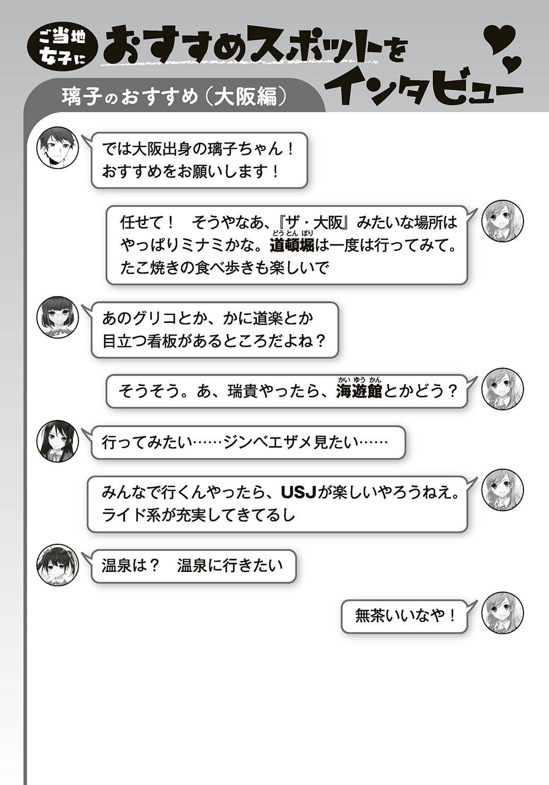
第３章 バイト始めました
――甘い話には裏がある
「はあ......」
春人は財布の中身を見ながら、深いため息をついた。
「やばい、金欠だ......」
高校生活には思いの外、お金が必要だった。
もちろん、親からの仕送りもあるがそれは昼食や文具、服などの必需品に飛んでいく。
この前のように寮生たちや浩輔と遊びに行ったりするなら、月にプラス一万円くらいほしい。
孤独な中学時代と違い、遊びに行くことが増えたせいだ。嬉しいことなのだが、思わぬ金銭問題が発生してしまった。
「バイトをするしかないか......」
無料のバイト雑誌やバイトのサイトを見ても、ほとんどが十八歳以上の募集で、かろうじてあるものは、土日に八時間入ること、週四日以上、一回五時間からなど、春人の条件に合わないものばかりだ。
春人は奨学生なので、成績の上位キープが求められているうえ、寮長としての仕事や責任がある。
「うーん、平日に一時間だけの都合のいいバイトとか......あるわけないか」
自分が大学生なら、家庭教師のバイトという手もあったが、高校生であれば望むべくもない。
一人で悩んでみたものの、打開策は浮かばなかった。
相談するといっても、こんなことを担任教師に言ったところでどうしようも――。
そのとき浮かんだのは、白衣を着た荒井さくらの顔だった。保健室の先生で、いつでも相談に乗ると言ってくれている。
ダメもとで、春人は保健室を訪ねてみることにした。
ノックをすると、中からさくらの元気のいい応答が聞こえた。
「はーい、どうぞー」
扉を開けると、椅子に座ったさくらがこちらを見て笑顔になった。
「どうしたの、寮長！ 元気ないね」
「あの、相談があるんですが......」
「何でも聞いて！」
世話好きの血が騒ぐのか、さくらがわくわくした表情になる。
「どうしたの？ 恋？ 恋の相談？」
食いつくように言うさくらに苦笑し、春人は本題に入った。
「あ、いえそうじゃなくて......その、お金の問題です。ウチの学校ってバイトしてもいいんですよね？」
「ちゃんと届け出ればね。バイトをしたいの？」
「ええ。でも、一応奨学生なので、勉強の時間を確保しようと思うと、平日の夕方の一時間だけとかになっちゃうんですけど......そんな都合のいいバイトってないですよね？」
口にしてみると、改めて我ながら無茶な相談だと思う。
「一日に一時間だけねえ......」
さくらが難しい表情になる。
「大学生だったら、家庭教師とかやれるんですが......」
しょんぼりと肩を落とす春人に、さくらが笑みを浮かべた。
「まあ、気を落とさないで。ちょっと知り合いに聞いたりしてみるわ」
「本当ですか？」
「うん、こう見えても顔は広いのよ。何かあるかもしれない」
＊
春人はあまり期待していなかったので、翌日さくらが教室まで来てくれたときはびっくりした。
手招きするさくらに、期待をしながら駆け寄る。
「バイト、見つかったよ」
「ええっ!!」
昨日の今日で見つかるなんて――春人は驚きを隠せなかった。
「学生時代の友達に色々当たってみたら、大学で講師をしている子から連絡が来たの。なんと、平日の夕方に一時間のみ！ 時給は二千円で日払い！」
「えええええっ!!」
春人は耳を疑った。
そんな理想的なバイトがすぐに見つかるなんて信じがたい。
「高校生のバイトにしたら、時給も破格ですね。いったいどんな......」
そんな高額な時給に見合う仕事が自分にできるだろうか。そもそもバイト自体初体験なのだ。
あまりにとんとん拍子に進むので、春人はかえって不安になった。
「相手は教育学部の女子大生。ゼミの研究発表のために、現役高校生の寮や学校生活について聞きたいらしいの」
「へえ......」
学校や寮について話すだけなら簡単なように思える。
「って、その女子大生さんの依頼なんですか？」
「そうよ。青蘭大学の三年生ですって。友達の大学講師からの紹介だから、身元は確かだから安心して」
「青蘭大学......」
私立大学では東京で一、二を争う有名大学だ。先生の友達からの紹介だし、怪しくはないだろう。もともとお金持ちの子女が多くて有名な大学だから、時給の高さにも説明がつく。
「じゃあ俺は学校や寮生活について話すだけなんですね？」
念のため、もう一度確認する。
「ええ、そう」
「......それだけで二千円......」
「ああ、実家が資産家のお嬢さんらしいから、お金の心配しなくていいわよ」
「はあ......」
話がうますぎる気がしないでもないが、有り難い話ではあった。
「ちなみに場所は彼女が指定するカフェですって。もちろん、お茶代も向こう持ちよ」
「カフェ......」
そういう人目のある場所なら、二人きりでも安心だ。
春人はちょっとホッとした。まだ、何か怪しい仕事ではないかと疑っている自分がいる。
さくらがメモを差し出した。
「はい、これが彼女の連絡先。明日からでもお願いしたいって言ってるわ。きみの連絡先を教えても大丈夫？」
「はい!!」
渡されたメモには『鈴木志織』という名前と、メールアドレスと携帯の電話番号が書かれていた。
「ありがとうございます！」
「頑張ってね！ 何かあったらすぐに相談して」
さくらの頼りがいのある笑顔にホッとする。
春人は休み時間に、さっそく電話をかけてみることにした。
「......はい」
三回目のコールで女性が出た。
「あのっ、鈴木志織さんでしょうか？」
「......はい」
知らない番号からの電話を訝しんでいるのか、少し遅れて返事があった。
「荒井先生からアルバイトを紹介してもらった若葉丘高校の五十嵐春人と言います。お仕事の件で電話しました」
「ああ、五十嵐くん！ 初めまして鈴木志織です」
名乗ると同時に、声がいっきにくだけた。やはり相手も緊張していたのだろう。
明るい志織の声に、春人はホッとした。
「お仕事、明日からということでしたが、俺の方は大丈夫です」
「ありがたいわ。じゃあ、明日からお願いします。学校が終わってから、四時から五時ってどうかしら。場所はきみの学校に近いほうが便利だろうから、隣の駅のカフェで」
「ありがとうございます！」
春人はホッとした。何しろ東京と言っても西の果ての方なので、都心のカフェを指定されたら片道一時間以上かかってしまう。
隣の駅なら片道五分なので、寮の晩ご飯にも余裕を持って間に合う。
「じゃあ、『アリスと白ウサギ』っていうカフェで待ち合わせましょう。西口を出てすぐの赤い屋根のカフェよ。私、目印に桜色のストールをしておくわ」
「ストール......わかりました」
確か、首に巻く薄い布のことだな。
「じゃあ、明日よろしくね。五十嵐くん」
「はい！ こちらこそ、よろしくお願いします！」
電話を切った春人はその場で飛び上がりたい気分になった。
条件バッチリのアルバイト、しかも相手はきちんとした女性のようだ。
週に五日として、月に四万円くらいの収入になる。もちろん、ゼミの研究発表のためだから長期のバイトではないが、それでも急場をしのぐには充分すぎる収入だ。
春人はわくわくしながら、明日を心待ちにした。
＊
指定されたカフェは駅から歩いて三分ほどの、わかりやすい場所にあった。赤い屋根も目立つし、待ち合わせにはぴったりだ。
立て看板には美味しそうなケーキセットの写真などが貼られている。素敵なお店だったら、今度寮生たちと一緒に来るのもいいかもしれない。
春人は木のドアを押して店の中に入った。
四時五分前――鈴木志織は来ているだろうか。
恐る恐る中に入った春人に、女性店員が声をかけてくる。
「いらっしゃいませ、お一人様ですか？」
「いえ、待ち合わせているんですが......」
春人は店内を見回した。ゆったりとした店内は女性客で賑わっていて、八割方席は埋まっている。
目印は桜色のストールと言っていた。
すると、奥の席に座っている女性が手を挙げてきた。首もとに淡いピンクの巻物をしていて、すぐに鈴木志織だとわかった。
春人は彼女に向かって、夢見心地で歩き出した。
鈴木志織はちょっと驚くほど美人だった。西洋の血を引くかのような彫りの深い華やかな顔立ちに白い肌、栗色の長い髪はふんわりパーマがかかっている。スカートから伸びた足は、すらりと長くヒールがよく似合っている。もしかして、身長が同じくらいかもしれない。
そう、志織は外国の女優かモデルのような派手な美人だった。
席に置いてあるバッグも、着ている服もお金がかかっていそうで、ファッション雑誌から抜け出てきたようだ。
「今日はありがとう。どうぞ座って」
すっと差し出した指先は、綺麗にネイルが塗られている。
こんな洗練された大人の女性と話すのは初めてだ。
春人は現実感がなく、ぎこちなく椅子に座った。緊張して喉がカラカラだ。
「初めまして、鈴木志織です。アルバイトを引き受けてくれてありがとう」
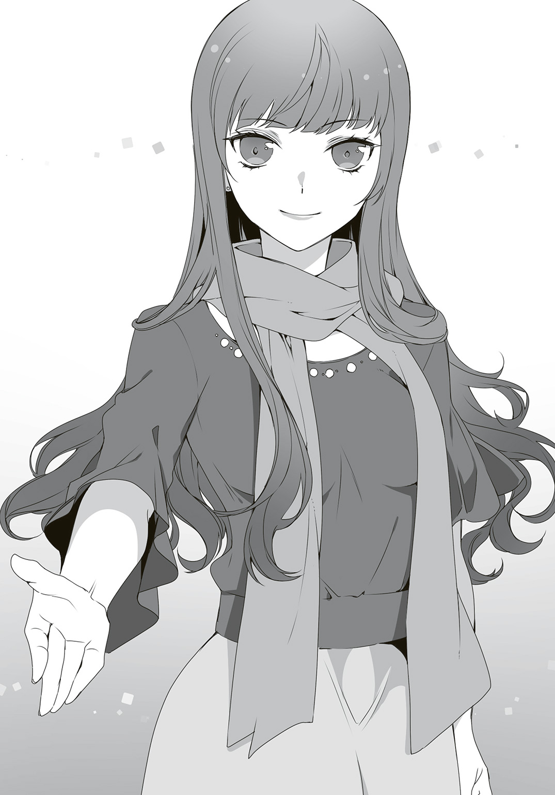
「いっ、いえっ！」
まともに目を合わせられない。完璧に整えた美人というのは、こんなにも圧力を感じさせるものなのか。
頼んだ飲み物が来ると、志織がバッグからタブレットを出してきた。
「じゃあ、さっそくだけど色々質問させて」
「わかりました」
春人は姿勢を正した。そうだ、これはバイト。仕事なんだ。
「えっと、春人くんは寮生なんだよね？ どこ出身なの？」
「東京です」
「えっ？」
志織が怪訝そうな表情になる。
「ええ、ウチの親が田舎に引っ越したので、俺だけ東京に残ることになって」
「それで寮に入ったのね」
「はい」
滑らかに指を動かし、志織が入力していく。
伏せた睫毛が長く、春人は思わず見とれてしまった。
「寮生活はどう？」
「ええ、楽しいです」
「他の寮生たちはどこから来た人たちがいるの？ 出身は？」
「えっと、青森、大阪、福岡、沖縄です」
「へえ、バラエティに富んでるわね。じゃあ、寮生は五人？」
「ええ」
「ところで、男子寮と女子寮って隣同士よね？ 交流はあるの？」
「えっ......」
春人は答えに窮した。
そうか、この人は事情を知らないから、俺が男子寮に入ったという前提で話しているのか。
そうだよな、普通男子が女子寮の寮長をやっているなんて思わないよな......。
春人はしばし悩んだが、自分が女子寮に入っているというのは学校、保護者、生徒も含めて公表されているのでここで隠してもしょうがない。
「あの......あまりよそでは言ってほしくないんですけど」
「えっ？」
志織が驚いて春人を見てきた。
「何？ 男子寮と女子寮で何かあるの？」
「そうではなく......」
しばしためらったのち、春人は腹を括った。
「実は俺は女子寮の寮長をやってるんです」
「......は？」
志織が固まった。それも当然だろう。改めて、自分の立ち位置のあやふやさを思い知らされた気分だ。
「実はですね、男子寮に入る予定だったんですが、壊してしまって......」
「......あなたが？」
「はい」
答えながら、春人は目線がどんどん下がっていくのを感じた。話せば話すほど、不審に思われている気がする。
「寮を壊すって......意味がよく......」
志織が戸惑うのも無理はない。
「あの、別にハンマーとかクレーン車で壊したわけではなくてですね、かなり老朽化していて俺が入った途端に建物が崩れ落ちてしまって......」
「......」
「それで入寮者が俺しかいなくて、再建の目処がたたないということで、特例措置として女子寮に間借りというか、住まわせてもらうことになったんです」
「......それ、ちゃんと保護者たちに了解とってるのよね？」
志織の声が低く、目つきが鋭くなったのを見て、春人は体が強張るのを感じた。
「も、もちろんです。俺は一階のゲストルームにいて、寮生は二階の部屋で......朝晩の点呼以外で基本的に俺が二階に行くことはありません」
この前の幽霊騒動のようなときは特別だ。
「俺は住まわせてもらっているから、寮長として寮生の面倒を見たり、力仕事とか手伝ったり、あとボディガードといえば大げさですが、何かあったら守るつもりでいます！」
春人は必死で説明した。
じっとそんな春人を見つめていた志織が、ようやく口を開いた。
「本当に特例措置なのね」
「俺は奨学生で、寮に住まわせてもらっていることを感謝してるし、このまま何事もなく卒業したいと思っています。だから、寮生たちに危害を加えたり、変なことをするつもりはありません！」
嫌な汗が滲み出てきた。わざとではないとはいえお風呂でバッティングしたり、頼まれたとはいえ部屋で抱きしめたり、多少後ろめたいことはあったが、これが正直な気持ちだ。
「......そっか、わかった。これはレポートに書かないでおくから安心して」
「そ、そうですか」
春人はホッとした。
「じゃあ、寮生活について教えて。基本的な生活パターンは？」
春人は朝晩の点呼、そして食事を一緒にとっていることを話した。あとは自由だが、最近仲良くなって、一階のレクリエーションルームに集まることが多いことも。
「寮生の子たちってどんな子かな？ 一人ずつ教えてくれる？」
「あ、はい......」
とりあえず、２０１号室の璃子から話すことにした。
「一人目は大阪出身の子です。明るくてハキハキしています。でも、怖い話が苦手だったり、寂しがりやでもあります」
「うんうん」
「二人目は青森出身の子です」
そう言った瞬間、志織がびくりとしてタブレットをテーブルに倒してしまった。
「大丈夫ですか？」
「あっ、うん。平気。ごめんね。続けて」
志織が髪をかきあげ、取り繕うように微笑んだ。
「はい。彼女はすごく綺麗な子で、頭もよく学年トップの成績です。最初は人見知りをしていましたが、今は寮生たちと打ち解け始めています」
「もうちょっと詳しくお願い」
「はい、えーっと......凜とした雰囲気なんですがドジなところがあって、よくドアにぶつかったり、テーブルにぶつかったり、物を落としたりします。......このくらいでいいですか？」
「ええ、三人目は？」
「福岡出身の子です。彼女は読書家で、実家からたくさん本を持ってきています。あと......趣味のイベントに熱心で、行動力があります」
「趣味って？」
志織に突っ込まれ、春人は一瞬躊躇した。だが、名前を出していないので、大丈夫だろうと判断した。
「あの、かなり個人的なことなので、ここだけの話にしてもらえますか？」
「わかったわ。全部レポートにするわけじゃないから安心して。とりあえず、色々情報を聞いてからまとめるから」
「わかりました。彼女の趣味、というか好きなものがＢＬというジャンルです。......いわゆる男同士の恋愛を扱った漫画や小説です」
「ああ、知ってるわ。大きいイベントとかあるものね」
「ええ。この前はそのゲームのコラボカフェに行ってきました」
志織がさっさと入力していく。
「四人目は沖縄の女の子です。見た目は小学生のような、小柄で童顔な女の子です。お風呂が大好きで、スーパー銭湯に行きたいと言っていました」
「へえ。そういえば、沖縄ってバスタブがない家があるっていうものね。東京に来たら楽しいでしょうね」
「ええ。可愛らしくてマイペースな子なんですが、ホラー好きで怖い話に詳しいです」
「なるほど、これで寮生の四人全員を把握したわ。いい子たちばかりのようだけど、どう？ 何かトラブルを抱えている子はいる？」
「いえ......特に問題ないですよ」
「でも、悩みを抱えている子はいるんじゃないの？」
春人は璃子がクラスメイトとうまくいかなかったことや、瑞貴の方言コンプレックスのことを思い出した。
だが、それを口にする前に、ピピピピと志織のタブレットから音がした。
「ああ、もう五時ね。一時間なんてあっという間ね。続きはまた明日聞かせてくれる？」
「わかりました」
「はい、これ。今日の日給です」
志織が白い封筒を差し出してくる。
「中を確かめて」
中を見ると、ちゃんと二千円入っている。
「じゃあ、お疲れ様」
春人が受け取りのサインをすると、志織が伝票を手にしてレジに向かった。
「ご、ごちそうさまでした」
一人になると、春人はホッと一息ついた。
何とかうまく話せたようだ。緊張したけど、無事に一日目を終えられた。
これで二千円――なんてラッキーなんだろう。頑張って続けたい。
＊
翌日、登校した春人は保健室に向かった。バイトを紹介してくれたさくらに報告するためだ。
保健室に入ると、机に向かっていたさくらが振り返った。
「あら、五十嵐くん。バイト初日どうだった？」
「あ、はい、無事に終わりました。ただ、俺が女子寮に住んでいるのは知らなかったみたいで、驚かれました......」
「あー、そうだった！ 初めて聞いたらびっくりするよね......」
「まあ、学校側や保護者たちから許可をとっていると話したら、わかってくれましたが」
「そうなの。どんなことを聞かれた？」
自分が紹介したこともあってか、春人のバイトが気にかかっていたらしい。さくらが心配そうに尋ねてくる。
「寮のタイムスケジュールとか、あと寮生たち一人一人のこととか」
「うんうん。今日もあるの？」
「はい」
「頑張ってね。何かあったら、相談してね」
さくらが力づけるように微笑む。
「いいバイトを紹介していただいて、ありがとうございます」
保健室から出ると、昇降口から入ってきた寮生たちとばったり顔を合わせた。
「どうしたの、春人。保健室から出てきたけど、体調が悪いの？」
菜々美が心配そうに聞いてくる。
「あ、いや、そうじゃなくて......」
春人はさくらからバイトを紹介され、昨日から行っていることを話した。
「えっ、バイト始めたんだ」
急だったせいか、寮生たちが驚く。
「うん、昨日から」
「あー、それで寮に帰ってくるのがちょっと遅かったんやね」
璃子が納得したように頷く。
「しばらく夕方に一時間くらい出かけると思う」
「そっか、頑張ってねー」
「うん」
せっかくのチャンスなのだ。頑張って続けようと、春人は決意を新たにした。
＊
二日目も、カフェに入ると志織が先に来ていた。
春人を見つけると、手を挙げてくれる。
「こんにちは」
今日の志織はライトグリーンのカットソーに白いパンツという春らしい服装だ。昨日より大人っぽく見える。
「私はブレンド。五十嵐くんは何がいい？」
「あ、オレンジジュースを」
飲み物が来ると、志織が再びタブレットを手に取った。
「じゃあ、今日は寮生たちの交流について聞かせて」
「わかりました」
「寮生たちはうまくいってる？ 出身地が全然違うけど、摩擦はない？」
「はい、仲良くしてますよ。一緒に出かけたりもしています」
「えっ、どこに？」
なぜか志織が異様に驚いている。すぐに仲良くなったのが、不思議なのだろうか。
「えーと、この前は皆で池袋に行きました。カフェに行ったり、サンシャインの展望台に上ったりしました」
楽しかったなあ――春人は瑞貴と一緒に写真を撮ったことを思い出し、密かにニヤけた。
「どうして笑ってるの？」
志織に言われ、春人は慌てて顔を引き締めた。しっかり顔に出ていたらしい。
「他には？」
「今度校外学習で上野に行くことになっています」
「上野って......もしかして動物園？」
志織の言葉に、春人は驚いた。
「いえ......国立科学博物館ですけど。なんで動物園って思ったんですか？」
すると、志織はちょっと慌てたように早口で言った。
「遠足だと上野動物園って浮かんだの。でも高校生ですもんね。国立科学博物館はいいわよね、面白い展示が多くて。でも上野なら、美術館もいいわよね」
志織がコホンと小さく咳払いをした。動揺を隠すような仕草に、春人は少し違和感を覚えた。
昨日から気になっていたが、時折妙な反応をする人だな......。
「じゃあ、寮生たちは打ち解けているってこと？」
「はい。色々ありましたけど......」
「色々って？ 聞かせて」
志織の顔は真剣そのものだ。強い眼差しを向けてきて、何も見逃さないという決意が見える。
その様子に春人は少し驚いた。
「まず、地方から来ている子たちは人によってはコンプレックスを抱いていたりして――」
「うんうん、そういう話が聞きたいの！」
志織が身を乗り出すようにしてくる。
「その......青森出身の子は、最初は自分の出身地を隠していたんです。寮生やクラスメイトとの交流も最小限で、ほとんど話をしませんでした」
「それで？」
「大阪出身の子に出身地を聞かれ、彼女は教室を飛び出してしまったんです。慌てて後を追って聞いてみると、中学生の頃、方言のせいでいじめられたことがあり、それ以来強いコンプレックスがあって話さなかったらしいんです」
「なるほどね......」
志織が切なげにため息をつく。
「昔はそうでも、今は大丈夫。少なくとも自分は方言を魅力的だと思うって伝えて......彼女は気を取り直して、大阪の子と仲直りしました」
「ふーん......」
ぐっとテーブルに肘をつき、志織が鋭い視線を向けてきた。
「で、実際今はどうなの？ その子を出身地や方言のことで苛めるような子はいるの？」
静かな口調だった。だが、めらっと志織から見えない炎が燃え上がったような気がした。その波打つ長い髪が、まるでゴーゴンの蛇頭に変わったような圧迫感がある。
「いえっ、それは大丈夫です......」
なぜか詰問されているような気分になり、春人は早口で言った。
「そう......」
次の瞬間、志織はもう、元の落ち着いた大学生に戻っていた。
あの一瞬の激情は何だったんだろう。
「他には？ 寮生のトラブルは？」
「あとは、大阪の子がクラスメイトとちょっと気まずくなったことがありました。ついつい地元愛を強調するあまり、相手の好きなものを否定するような発言をしてしまって」
「うんうん」
志織は静かに相づちを打っている。さっきのは何かの錯覚だったのだろうか。
「それで、何とか仲直りの場を設けようということで、寮にクラスメイトを招待して交流会を開いたんです」
「寮で交流会か......素敵ね」
「ええ。普段は入れない寮でやるとあって、ほとんどのクラスメイトが参加してくれました。寮生はそれぞれの出身の郷土料理を作っておもてなしをすることになって......」
「郷土料理？ 全員作ったの？」
「ええ」
「......全員作れたの？」
「えっ、ええ。皆、だいたい上手でしたよ」
「本当に？」
志織がなぜか疑いの目を向けてくる。
「ええっと、あまり料理をしたことがない子もいましたけど、皆で協力して郷土料理を作りました」
「そう......ふーん......」
何か引っかかるようで、志織は首を捻っている。なぜこんなことが気になるのだろう。
「で、交流会はどうだった？」
「大成功でしたよ。郷土料理を皆喜んでくれて、気まずくなっていた相手とも話せたり」
「そう......」
ピピピピとタブレットからアラーム音がした。
「ああ、もう時間ね。じゃあ、明日もよろしく」
バイト代の受け渡しを終えると、志織が伝票を持ってレジに向かった。
彼女がカフェを出ていくと、春人は大きく息を吐き、椅子にもたれた。
「はあ......」
なんだか、志織は瑞貴のことばかり気にしていた気がする。瑞貴が苛められた話のときの、あの険しい表情。対して、璃子のトラブルに関してはさほど興味を示していなかった。料理を作れるのかどうかは気にしていたが。
何か引っかかる。
あの人が男子大学生というなら、瑞貴に一目惚れをして探りを入れていると考えられるのだが、あいにく女性だ。
志織が瑞貴に執着する理由がわからない。
気のせいならいいんだけど。
春人はもやもやする気持ちを抱えたまま、カフェを出た。
＊
どことなく重苦しい気持ちで、春人はカフェに向かった。
今日の志織はウェーブのかかった長い髪をサイドでまとめていて、よりエレガントな感じだ。淡いブルーのワンピースも爽やかで似合っている。
「今日もありがとう」
こちらに向けてくる笑顔は屈託がなく、やはり気のせいなのかと思ってしまう。
「今日はきみについて聞かせて」
「お、俺ですか？」
「うん。えーとね、この学校を志望した理由は？」
「奨学生制度があるのと、寮があるからです」
春人はきっぱり答える。
「......なんだか若いのにしっかりしてるわね」
志織のような美人にじっと見つめられると、どぎまぎして目を逸らせてしまう。
「じゃあ、勉強はできるのね」
「学年上位十人以内に入ることが奨学生である規則なので」
「それで寮長としても働いている、と」
「ええ」
「五十嵐くんって今、彼女はいる？」
「えっ......」
踏み込んだ質問に戸惑ったが、自分は話すことが仕事だ。
「......いません」
志織は追及の手を緩めなかった。
「これまで何人くらい彼女がいた？」
「女の子と付き合ったことはないです」
「それって今も？」
「はい」
情けない男だと思われてるんだろうな、と思っていたが、意に反して志織が満足げに頷いた。
「いいわね」
「いいですか？」
春人は意外に感じ、首をひねった。
「中学生やそこらでチャラチャラ彼女作りまくっている男なんて論外よ。誠実で清廉じゃなくちゃ――」
何か言いかけた志織がハッとしたように口を閉じた。
「ごめんなさい。じゃあ、今好きな子はいる？」
「えっ......」
今度こそ、春人は言葉に詰まった。
瑞貴に片思いをしていることは誰にも話していない。
「......ええ、一応」
「誰？ やっぱり寮生？」
突っ込まれた春人は、さすがに口を閉ざすことにした。
「いえ、それは言えません」
「いいわ、当ててあげる！ その、青森の子でしょ！」
いきなりズバリと図星を指され、春人は絶句した。
なんで？ なんでバレてるんだ？
「......なんでわかるんですか？」
恐る恐る尋ねる春人を、志織が得意げに見つめる。
「そりゃあ、そうよ！ だって、その子が一番可愛いんでしょう？」
「......」
俺、そんなこと話したっけ？
綺麗な子とは言ったけど......。色々ダダ漏れだったのだろうか。それならば恥ずかしい。
「じゃあ、きみはその青森の子のことを一途に思っているということでいいわね？」
「は、はい......」
恥ずかしさに顔が真っ赤になってうつむく。
「まあ、寮生は仕方ないとして、他の女の子と一緒に出かけたり、ましてやデートをしたりはしてないでしょうね？」
「えーっと......」
なんでそんなことを聞くんだろう、と不思議に思いつつ、春人はうっかり口を滑らせた。
「この前、合コンに......」
「ごっ、合コン!?」
志織が椅子を蹴倒さんばかりの勢いで立ち上がった。わなわなと震えながら、春人を睨んでくる。
その異様な光景に、周りの客や店員も驚きの視線を向ける。もちろん、春人も呆然と志織を見上げた。
「し、志織さん......？」
春人が恐る恐る声をかけると、志織がハッとしたようにおとなしく椅子に座った。
気まずさを誤魔化すかのように、コホンと軽く咳払いをする。
「失礼。ちょっとびっくりしたの。きみのような誠実そうな男の子が合コンなんて軽々しいものに行くなんて。やっぱり男って裏で何をしているかわからないわね......」
「そんなに変ですか？ 高校生で合コンって......」
「あったりまえでしょう!?」
志織が拳をテーブルに叩きつけた。
ゴン、と鈍く重い音とともに、テーブルに載っていたカップやお皿が跳ねてガシャン、と派手な音を立てる。
店内は今度こそ、しん、と静まり返ってしまった。ひそひそとこちらを見て囁く声や、不安げな店員の視線が痛くてやりきれないが、志織はまったく意に介していなかった。
「だって、きみは好きな女の子がいるわけでしょう？」
びしっと指を差され、春人は絶句するしかなかった。
「合コンっていうのは、異性との出会いのために行くものでしょう？ 何？ 彼女が高嶺の花すぎて気後れしてしまって、その辺の手軽な女で遊ぼうって思ったってこと？」
凄まじい糾弾に、春人は恐ろしくなった。
軽い気持ちで言ったことが、こんな結果を生み出すなんて......。
「あの、俺はピンチヒッターだったんです......」
志織がじろっと睨んでくる。まるで凶悪犯を追及している刑事のような鋭い眼差しだ。なんでこんなに怒っているんだろう。
「どうしても一人足りないって友達に懇願されて......ただの人数合わせで......」
「ふーん、言い訳めいているわね」
志織がひらりと優雅に長い足を組み替え、胸の前で腕組みをした。
その迫力たるや、逃げ出すことなど考えも及ばず、春人は蛇に睨まれた蛙のように硬直した。
「じゃあ合コンに行ったけれど、その瑞貴って子がやっぱり一番可愛いって再認識したってことでいい!?」
「は、はい......」
おとなしく首肯しながら春人はまた、もやっとした。
やはり志織はどうも瑞貴に固執している感じがする。なんでだろう。
それはともかく、この恐ろしい尋問タイムが早く終わってほしい。
「......!!」
何気なく入り口の方に目を向けた志織が、いきなり立ち上がった。その顔は引きつり、血の気が引いている。
「ど、どうしたんですか？」
声をかける春人に目もくれず、志織がバッグを乱暴に鷲摑みした。
「ごめんなさい、ちょっと気分が悪くなったからお手洗いに行くわ。好きに帰って」
そう言うと、伝票の上に千円札を投げるようにして置く。
「えっ......」
春人の返事を待たず、志織が足早にお手洗いに駆け込んでいく。
どうしたんだろう。急に具合が悪くなるなんて......。
「あれ？ 春人？」
聞き覚えのある声に、春人は驚いて顔を上げた。
そこには、璃子を先頭に寮生の四人が全員いる。
「えっ、どうしてここに？」
「美味しいケーキが食べられるカフェが近くにあるって聞いたから、皆で来たんや」
璃子がにこにこしながら言う。
「あと、『不思議の国のアリス』のコンセプトカフェなんだよね。グッズも売ってるって言うから来てみたくて」
「ああ......」
菜々美に言われ、春人はカップにトランプの模様が入っていたり、壁に懐中時計を持って走っている白いウサギがいることに気づいた。
「それで来たんだ。偶然だね」
一瞬、合コンのときに尾行されたことが頭をよぎったが、堂々と声をかけてくるし、隣駅のカフェだし、今度は尾行ではなくて単なる偶然なのだろう。
「春人はなんでここに？」
菜々美が不思議そうに尋ねてくる。
「一人？ ......じゃないよね？」
春人の目の前には飲みかけのカップが置かれている。
「バイト中だったんだけど、相手の人が具合が悪くなって......」
春人はちらっとお手洗いの方へ視線をやった。あんなに急いで駆け込むなんて、志織は大丈夫だろうか。
「そうなん？」
「あ、メールが来た」
スマホに『今日はごめんなさい。先に帰ります。バイト代はまた明日』と志織からメールが来ていた。
どうやらもう店を出たらしい。全然気がつかなかった。
「今日はもう終わりみたい......」
「そうなん？ じゃあ、一緒にお茶しない？」
「皆で違うケーキを頼んで、一口ずつ味見しようよ！」
真帆に服をひっぱられ、春人は苦笑した。
ケーキセットは千円もする。バイトを始める前なら断っていたかもしれないが、今の春人には余裕があった。
「いいよ、じゃあ席を替わろうか」
五人で座れるテーブル席に案内してもらい、春人たちはそれぞれケーキセットを頼んだ。
「ねえ、春人のバイトってどんなん？」
「大学のゼミで研究発表をする教育学部の学生のお手伝いで、学校や寮の話をしているだけ」
「へえー、話をするだけでお金をもらえるなんていいね！」
「そうだね」
「で、バイト代いくらなん？」
璃子がズバリと聞いてくる。
「一日一時間で二千円」
「二千円!?」
瑞貴以外の三人が声を上げたので、春人はびくっとしてのけぞった。
「ちょ、落ち着いて......」
「おかしくない？ 二千円て......高すぎ」
璃子の言葉に、真帆と菜々美が力強く頷く。
「高校生のバイトとは思えないよね......。ウチのお姉ちゃん、派遣で働いているけど、時給千二百円だよ......」
真帆が目を丸くしている。
「......高いの？」
瑞貴だけが高校生のバイトの相場を知らないようで、おろおろと皆の顔を見回している。
「高いよ！ 高校生のバイトなんて、東京でも八百円くらいが相場じゃない？」
口々にそう言われて、春人は改めて不安になった。
「さくら先生の紹介なんだよね？」
「うん。さくら先生の友達の大学講師の人からの紹介。一応、青蘭大学の人らしいし、身元はちゃんとしてるかなーと」
「ふーん、さくら先生の直接の知り合いじゃないんやね......」
「なんか、話がうますぎるし微妙......」
菜々美も顔を曇らせる。
春人はだんだん心配になってきた。
「なあ、学生証とか見せてもらったん？」
「学生証？ ううん......」
志織とは電話とメールで連絡を取り、自己紹介されただけだ。
「その人、本当に青蘭大学の学生？」
「えっ......」
璃子にそう言われ、春人は思わず絶句してしまった。そんなこと、考えたこともなかった。
「ウチの実家は商売やってるから、結構うまい話って怖いから疑ってかかれっていうのが染みついてるんだよね」
「......ちゃんとしてる人に見えたけど」
「そんなんわからんやん。向こうが騙しにかかってきてたら」
確かに、自分は最初から相手を信じていた。
「あのっ......」
瑞貴が何か言いかけたが、すぐにうつむいた。
「ごめんなさい、役に立てるかと思ったけど、今はダメだった......」
「そう？」
よくわからないが、瑞貴はしょんぼりとうつむいてしまった。
「なあ、明日はバイトを休んでその大学に行ってみたら？ 青蘭大学やったら一時間ちょいで行けるやん。ほら、世田谷区にあるねんて」
璃子がさっとスマホで検索して見せてくれる。
「そこで、教育学部の――その人ってなんて名前？」
「鈴木志織さん」
「その鈴木志織さんを探したらいいねん」
「でも、学校が終わってからだと夕方になるでしょ。もう大学の授業も終わってるんじゃない？ 昼から風邪って言って早退したら？」
菜々美が作戦を提案してくる。
「さくら先生に紹介してくれた大学講師の人の名前を聞いてさ、その人に探してもらったらいいよ」
「なるほど......」
広い大学構内で人を探すなんて無理かと思ったけれど、仲介者の講師に頼めば簡単にできそうだ。
「ありがとう！ やってみる！」
「なんか探偵みたいやね！ 私も行きたいなー」
璃子が羨ましそうに言う。
「そんな、寮生全員が早退したら怪しいでしょ！」
菜々美に窘められ、璃子が首をすくめた。
「でも......もう一人くらいなら平気かも」
「って、あんたも行く気満々やん！」
璃子が楽しげに菜々美にツッコミを入れる。
「だって面白そう――――！ 鈴木志織の正体を知りたいよ――――！」
「どういう目的なんやろうな？」
「高校生男子を騙して何か得になるかなあ？ お金も持ってないし......」
璃子と菜々美が盛り上がっているのを見ると、少し元気が出てきた。
不安を払拭するには、直接確かめるしかない。春人は菜々美たちの作戦に乗ることにした。
＊
翌日、春人は寮生たちのバックアップもあり、無事に学校を早退した。
病院に行ってくるという口実があるので、堂々と昼間の町も歩ける。
結局、さくらに相談したところ、仲介者の三浦先生と会えることになった。彼女と話し、場合によってはその場に鈴木志織を呼び出してもらうことになった。
春人は作戦通り学校を早退すると、大学のある駅に向かった。
最寄り駅からのアクセスは良く、歩いて五分かからずに大学に着く。
「......ひっろいなあ」
門をくぐって中に入ったが、見上げるような高さの建物がいくつも並んでいる。構内図を見てみたが、一号館から八号館まであるうえ、付属施設などの建物もあり、ちょっとした町のようだ。
「えーと......三号館のカフェテリアは......」
春人は構内図を確認し、待ち合わせのカフェテリアに向かった。大学内に食堂が二つ、カフェテリアもあると聞いて春人は驚いた。
カフェテリアに入ると、周囲からちらちらと見られるのがわかる。制服姿の高校生がいるのが異質なのだろう。
オープンキャンパスなどや受験生用の見学のある時期なら目立たなかったかもしれないが、残念ながら季節は春だ。
だが、特に咎められることもないので、春人はドキドキしながら指定された奥の方の席に向かった。
「五十嵐くん？」
背後から声をかけられ、春人は驚いて振り返った。
黒いショートボブの、眼鏡をかけたスーツ姿の女性が立っていた。走ってきたのか、息が荒い。
「ごめんね、待った？ 初めまして三浦です」
「いえ、大丈夫です」
穏やかそうな人で春人はホッとした。席に座ると、三浦先生がお茶を持ってきてくれた。
「はい、どうぞ。鈴木さんのバイトのことだと、さくらから聞いたけど何かあった？」
「ええ、少し気になることがあって......」
「そうなの？ どういうところが？」
三浦先生が心配そうに尋ねてくる。
「最初は嬉しかったんですが、一時間二千円の時給って破格ですよね？」
「ええ、そうね。でも、学校や寮の情報など、貴重な話を聞かせてもらうわけだから、と言われてまあ、なるほど、と」
「そ、そうですか......」
時給に関しては問題ないらしい。
「何か変なことを聞かれたりしたの？」
「いえ、そういうわけではないんですが......」
反応が引っかかるときはあったが、そこまで妙なことをされたわけではない。
「最初に学生証を見せてもらうのも忘れて......それに紹介者の三浦先生に会ったこともないのでその......」
言いながら、春人は早とちりをしてしまったのではないかと焦っていた。
さくらの紹介なのだ。おかしい人間であるはずがない。寮生たちに煽られて、心配になったものの杞憂のようが気がしてきた。
「ああ、学生証！ そうか、申し訳ないことしたわね。私とさくら、お互いの仲介者が初回は付き添って顔合わせしたら良かったわね～」
三浦先生は穏やかな性格のようで、疑われたことを不快に思っていないようでホッとする。
「ちゃんとここの学生で、仲介者もここの講師、ってことを確認しに来たのね。なるほど。じゃあ改めまして」
三浦先生が職員証を見せてくれ、春人は恐縮してしまった。
「鈴木さんもこの場に呼ぶわね」
「は、はい......」
もう必要ないかと思ったが、せっかく大学まで来たのだ。志織を確認して、寮生たちに堂々と結果を伝えたかった。
「今、授業がないみたいだからすぐに来るって」
春人はドキドキした。志織は気を悪くしないだろうか。
「昨日、具合が悪くなって帰られたんで、大丈夫でしょうか」
「鈴木さんが？ 今朝会ったけど元気そうだったわよ」
「そうですか......」
ホッとしつつも、昨日突然帰ったことも引っかかっていた。
「あ、来たわ。鈴木さん！」
手を挙げた三浦先生の視線の先にいるのは、ショートカットの小柄な女性だった。Ｔシャツにカーゴパンツというカジュアルな装いだ。
モデル張りの長身で、華やかなウェービーヘアの〝鈴木志織〟とは似ても似つかない女性だ。
「三浦先生！ 何ですか？」
「こちら、五十嵐くんよ。わざわざ来てくれたの」
「五十嵐......？」
眉を寄せて春人を見ていた〝志織〟がハッとしたように目を見開いた。
「もしかして......バイトの子？」
「バイトの子って、鈴木さん、何言ってるの？」
三浦先生が困惑したように〝志織〟を見る。
〝志織〟がバツが悪そうに口を開いた。
「実はですね、友達に頼まれて名前を貸したんですよ......」
「えっ！」
春人だけでなく、三浦先生も驚きの声を上げた。
「自分の名前を名乗るとバレちゃうからって......」
「どういうこと、鈴木さん！ バレるって何が？ これ場合によったら大事よ？」
温厚な三浦先生の厳しい言葉に、〝鈴木志織〟がびくっとする。
「す、すいませんー。だって、その子に妹のことが気になるからお願いって頼まれて」
「妹？」
全然話が見えない。
「いったい、誰に名前を貸したの？ あなたの名前を名乗って五十嵐くんと会っていたのは誰？」
志織は腹を括ったようだ。
「同じ教育学部の......神子沢麗香です」
「か、神子沢!?」
瑞貴と同じ苗字――春人は呆然とした。
＊
神子沢瑞貴の姉、麗香も呼び出され、散々三浦先生に怒られた。麗香はやはり『鈴木志織』と名乗った華やかな美人だった。
春人は麗香だけでなく、三浦先生にも頭を下げられて恐縮してしまった。
またさくらも同席して謝罪するとのことだったが、とりあえず春人は麗香と話す場をもってもらった。
「ほんと、ごめんなさい......」
麗香――偽『鈴木志織』――が深々と頭を下げる。その顔には神妙な表情が浮かんでいた。
「私のせいで志織や三浦先生にも迷惑をかけて申し訳なく思ってる。もちろん、五十嵐くんにも......」
春人は改めて麗香をまじまじと見つめた。彫りの深い顔立ちは、あまり瑞貴と似ていない。姉妹と言われると違和感があった。
「あの、本当に瑞貴ちゃんのお姉さんなんですか？」
そう言うと、麗香が苦笑した。
「そうよね、疑われても仕方ないわ」
麗香から差し出されたのは、一冊のファイルだった。
「開けてみて」
ファイルを広げると、そこには赤ちゃんの写真があった。下には『瑞貴、３カ月』とある。
「えっ......」
この赤ちゃんが瑞貴なのか？ そして嬉しそうに寄り添う幼い少女――麗香の姿もあった。
春人はページをめくっていった。それは瑞貴のアルバムだった。
赤ちゃんだった瑞貴がどんどん大きくなっていく。
小さい頃から、本当に瑞貴は可愛い。ランドセルを背負っている瑞貴。ハワイらしき海をバックにした写真では、水玉の水着を着ている。
「うわあ......可愛い......」
思わず声が漏れてしまう。ドン引かれると思いきや、興奮した様子の麗香が身を乗り出してきた。
「でしょ、でしょ!! ほら、これは小学校五年生のとき。初めてスキーに行ったときのやつ！」
「ふわあ......ニットの帽子が似合ってますね......」
てっぺんに丸いぽんぽんがついているのがポイントだ。
「でしょ、でしょ！」
さっきまで落ち込んでいたのが噓のように、麗香がはしゃいでいる。
「これ、ピアノの発表会！」
「うわあ、ピアノも弾けるんですか！」
「曲目は『エリーゼのために』！ ドレスは私が選んだの！ シックだけど光沢のある紺のベロア生地のワンピースで、襟元と袖に白のレースがついていて瑞貴の上品さを引き立てて......」
「すごく似合ってます!!」
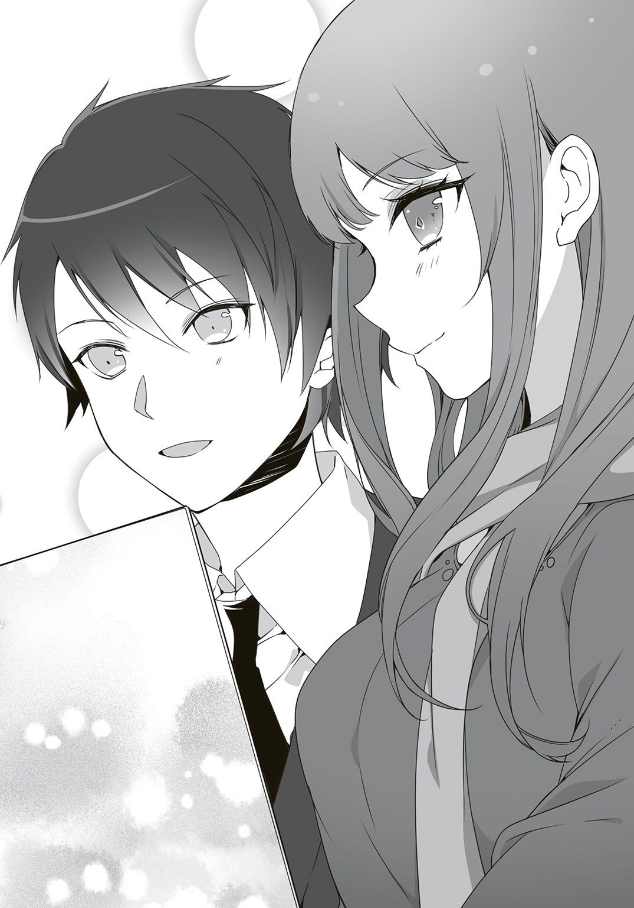
「きみ、わかってるね!!」
麗香が満足そうに大きく頷く。
「ピアノに辿り着く前につまずいて転んだけど、そんなとこもキュート！ あ、ウチの実家に来ることがあれば、ビデオを見せたげる！ 照れながら立ち上がる瑞貴が可愛すぎてもう！ その！ やばい！」
まるで闘牛の牛のように、麗香が鼻息荒く興奮している。そして自らファイルをめくり始めた。
「これはバレエの発表会よ！」
「バレエまで......！」
「ウチは親が一通りなんでもやらせる家だったの。だから子どもの頃から、ピアノ、書道、バレエ、水泳をやらされたわよ！ 華道茶道も！」
「教育熱心な家庭なんですね......」
だから、姉妹ともに東京の学校に行かせているのだろう。
「バレエはねえ、『くるみ割り人形』のねずみの役だったけど、主役のクララよりも誰よりも瑞貴が輝いていたの！ そこにスポットライトが当たっているかのように!!」
子どものときの瑞貴が見られて、春人は嬉しくなった。
春人はふと気づいた。
「......これ、もしかしていつも持ち歩いているんですか？」
「そうよ！ いいでしょ？ 心の拠り所なんだから！」
「写真ならスマホに入れたりとか......」
「スマホにも入れてあるわよ、もちろん！ でも小さくなるでしょ？ やっぱりこのサイズが一番見やすいし......」
「......」
もしかしてこの人......ずっと引っかかっていたけれど、重度のシスコンじゃないのか？
妹のアルバムを持ち歩いて、こんなに嬉しそうに話すなんて普通はないよな？
そのとき、麗香がハッとしたような表情になった。我に返ったらしい。
「ど、どう？ これで私が瑞貴の姉って証拠になったでしょ？」
「あ、はあ、そうですね......」
そういえば、本当の姉かどうか知りたかったんだっけ。
あまりにも子どもの頃の瑞貴が可愛すぎて、途中からもうどうでもよくなってしまった。
「で、話を元に戻しますが......」
春人はちらっとアルバムに目をやった。
「あの、話が終わったらアルバム、もう一回見せてもらってもいいですか？」
「いいわよ！ そりゃ、じっくり見たくなるわよね。あんなに超絶可愛い子なんて他にいないからね！ この世に降り立った天使みたいな存在だからね！」
「は、はい......」
凄まじいばかりの妹愛だ。
「あの、どうして友達に名前を借りて、高額な時給を払ってまで、俺を雇ったんですか？」
「うん、まあ、そりゃあ知りたいわよね......」
途端に麗香の表情が曇る。
「私としては、できたらうやむやにしたいところなんだけど......」
「ダメです」
春人はきっぱり言った。
「俺は寮長です。俺の話だけならいいけど、俺は寮や寮生の話をあなたにしてしまいました。悪用されたりしたら彼女たちに迷惑がかかります。それは避けたいので、ちゃんと説明してください」
「......わかったわよ、寮長さん」
降参、というように麗香が両手を挙げる。
「私、瑞貴のことが知りたくて、それで若葉丘高校の子がバイトを探しているって聞いて、研究目的という名目で瑞貴のことを聞こうと思ったの」
「でも、実の姉ですよね？ しかも今、同じ東京に住んでるんでしょ？ 直接彼女に聞けばいいじゃないですか」
「それができないから、こんな滅茶苦茶な手に出たのよ」
麗香が苦虫をかみつぶしたような表情になる。
「なんでですか......？」
そういえば、瑞貴が姉について話しているのを聞いたことがない。写真を見てもかなり仲が良さそうなのに、なぜだろう。
麗香がため息をついた。
「謹慎中なの」
「謹慎......？」
首を傾げる春人に、麗香が苛々したように早口で言う。
「両親から、最低半年間は瑞貴との接触を一切禁止すると厳命されてるのよ！ 会うのはもちろん、電話もメールもダメなの！ 接触禁止！ もし破ったら、更に半年期間が延びるの！ わかる？ この苦しさが！」
ダァンと麗香が拳をテーブルに叩きつける。わなわなと震える麗香を、周囲の学生たちがびっくりした顔で見ていく。
「な、何で......。どうしてそんなことになったんですか？」
「私が......あまりにも瑞貴が可愛すぎて、色々やっちゃったから......」
麗香が苦悩するかのように、豊かな髪をかき上げる。
「たとえばどんな？」
「私は東京で、瑞貴は青森だったから、離れてるでしょ？ だから心配で気になって......だってあんなに可愛いんだもの！ 変なやつが寄ってくるだろうし、あの子はぽやーっとしてるし、鈍くさいし、気になって気になって気になって......毎日電話して、メールして、返事が遅かったときは新幹線に飛び乗って実家まで帰って......あ、週末と、長期の休みは必ず実家に帰省していたけどね！」
「あの、メールと電話ってどれくらいの頻度で......」
焦ったように、麗香がそっとあらぬ方を見た。
「......そ、そうね、気になったときにしていたから、一時間ごとくらい？」
「毎日ですか......」
「うん、そう毎日......やっぱり変よね......」
「姉妹じゃなかったら、完全にストーカーですよね......」
麗香ががっくりとうなだれる。
「うん、親に瑞貴の交友関係や学校生活に支障が出るってすっごい怒られて......ちょうど瑞貴が高校入学で上京するから、このタイミングでリセットするために謹慎を言い渡されたの......」
麗香がうつむき、長いウェービーヘアで顔が隠れた。
「じゃあ、昨日慌ててトイレに行ったのって......」
「そう、瑞貴と顔を合わせるわけにはいかなかったからよ！」
そういえば、瑞貴が昨日何か言いかけて、やめたことを思い出した。
あれは青蘭大学に姉が通っているから、力になれるかもと一瞬思ったが、連絡が取れないことを思い出してやめたのかもしれない。
麗香ががばっと顔を上げた。
「お、お願い、このことを瑞貴には言わないで！ あの子、隠し事が下手だから、たぶん両親にバレると思うの!! 下手したら、私、留学とかさせられて、何年も会えなくなる!!」
麗香がテーブルにこすりつけるようにして頭を下げている。
春人はその姿をじっと見つめた。
瑞貴への愛がいささか過剰なのは否めない――でも、彼女の愛情は伝わってくる。
「......確かに心配ですよね」
麗香がそろそろと顔を上げる。
「すごく可愛いですもんね」
「だから、いろんな男が寄ってくるのよ！ ほんの小さい頃から！ クソが!!」
再び、麗香からめらっと炎のような怒りのオーラが立ち上った。
「汚い手で瑞貴に触ろうとするな！ 私が守らないと！ と思って......」
麗香がコホン、と咳払いする。
「あの子、完璧なように見えて不器用なのよ。まっすぐすぎるし、素直すぎるし」
「うんうん」
「あと、びっくりするほど鈍くさいでしょ」
「ああ、いろんなものにぶつかってますね......」
「心配じゃない!?」
「......でも、彼女、頑張ってますよ。要領が悪かったりするし、変な男が寄ってきたりしますけど、でも、ちゃんと対応しようとしていますよ」
「そっか......そうだよね、もう小さい子どもじゃないもんね......」
麗香がしょんぼりとうつむいた。
「それに、学校では俺たちがついてますから」
春人はじっと麗香を見つめた。
「今回のことは、彼女には秘密にしておきます」
「本当？」
「でも、わかったと思いますけど、俺も彼女が好きで大事なんですよ。だから、この次謹慎を破るようなことがあったら、もうかばえません」
「わかった！ つらいけど、我慢する！」
そう言った麗香だったが、苦しげに顔を歪めた。
「うううう、やっぱり我慢できないかも！ ね、きみ、お金が必要なんでしょ？ 内緒で私に情報を流してくれないかな？」
「情報......？」
「そう！ 瑞貴に内緒でその日の瑞貴に何があったか毎日メールをしてほしいの。一回につき二千円払うわ！ メールをするだけで一カ月で六万円の収入よ！ きみの条件にぴったりでしょ？」
正直、魅力的な申し出だったが、春人は首を横に振った。
「お断りします。そんなスパイみたいな真似はできません。それに、もし、このことを彼女が知ったらどうなると思います？ 俺もあなたも、彼女の信用を永遠に失うかもしれないですよ？」
麗香はリアルに想像したらしく、ぞっとした表情になる。
「ただ、もし瑞貴ちゃんに何かあったときは必ず伝えます。だから、連絡がないときは彼女は大丈夫です」
そう言うと、麗香の顔が綻んだ。
「うん......ありがとう」
春人の精一杯の譲歩が伝わったらしい。
「そうね、瑞貴にはあなたがついているもんね」
「ええ、寮生たちもいますよ。ほら、昨日も皆とカフェに来てたでしょう？」
「うん、楽しそうだった」
麗香がちょっと寂しそうに微笑んだ。
「ありがと、五十嵐くん。ねえ、もし謹慎が解けたらさ、きみにもまた会いたいな」
「え？」
「瑞貴の話をするの、とても楽しかった。ね、またこんな風に瑞貴のことを話そうよ。瑞貴がどんなに可愛いか、さ」
「喜んで」
麗香が嬉しそうに破顔する。
ああ、よく似ているな――。
屈託なく微笑んだ麗香の顔は、年齢よりずっと幼く無邪気で可愛らしかった。
そう、まるであのときの瑞貴のように。
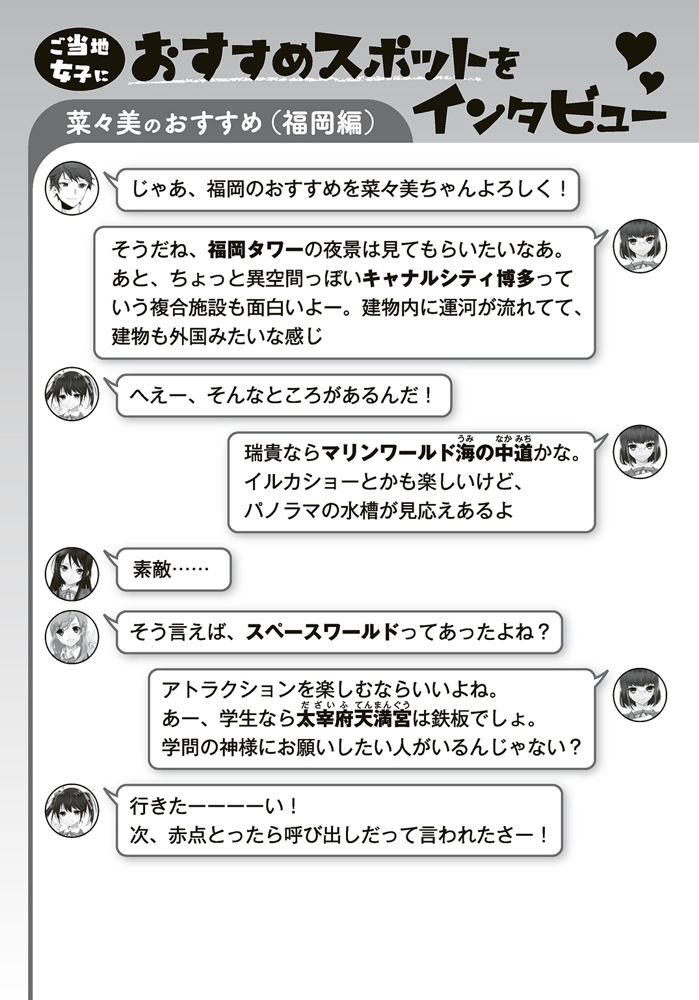
第４章 春の校外学習は波乱の予感
――終わりよければ全てよし
「ねえみんな、こっちだよ」
とうとう校外学習の日がやってきてしまった。
班長である春人は、上野駅を出ると寮生たちを誘導した。国立科学博物館は上野恩賜公園の中にあり、森の中に通されたような広い道を歩いていく。
寮生たちは物珍しそうに、通りすがりの美術館などを見ている。
上野恩賜公園には、博物館や美術館が複数あり、また上野動物園も併設されているのだ。文化的な施設が集まっている公園として有名で、散歩をするだけでも楽しい。
――はずなのだが、過去の嫌な記憶が蘇り、春人は不安でいっぱいだった。
彼女たちを無事に博物館に連れていかねば。
春人は胃がキリキリと痛むのを感じた。明らかにプレッシャーがかかっている。
「ん......？」
ふっと周囲が翳り、春人は驚いて空を仰いだ。それまで晴れていた空が急に曇りだしている。
いきなりたちこめ始めた灰色の分厚い雲に、周囲も驚いたように空を見上げている。
そして、いきなり稲光が輝き、周囲から悲鳴が上がった。
光の槍のごとく雷が、まっすぐ春人のもとへと落ちてくる。
「うあああああああああ!!」
ピピピピピピ――。
春人は枕元でうるさく鳴っている目覚まし時計を叩くようにして止めた。大きく息を吐き、見慣れた自分の部屋を見回す。
「......夢か」
随分うなされたようで、汗びっしょりだ。春人は最悪の気分で起き上がった。
「やだなあ、校外学習の日に悪夢なんて」
不吉な兆しにため息をつき、春人は着替えを始めた。
＊
もそもそと食堂で朝食をとっていると、璃子が隣に座ってきた。
「どうしたん？ なんか暗いなあ」
璃子が顔を覗き込むようにして言ってくる。
「いや、ちょっと悪夢を見ちゃって......」
「どんなん？」
「......」
校外学習に行く夢などというと、心配するかもしれない。
「いや、雷が落ちてくる夢」
すると、前に座った菜々美が箸を止めて春人を見てきた。
「雷はねー、何らかの大きい力を表しているの」
「へっ？」
思いがけない言葉に、春人はぽかんとした。
「雷の夢って、物事が大きく動くときの予兆らしいね」
「それはいいの？ 悪いの？」
興味をそそられ、春人は尋ねた。
「どっちもあるみたい。困難の兆しかもしれないし、すごいチャンス到来かもしれないって」
「そ、そっか......。ところで、なんでそんなに夢に詳しいの？」
「昔、興味があって読んだ夢占いの本に書いてあった」
菜々美は趣味のＢＬの本だけでなく、他にも色々読んでいるらしい。
「ほら、今日は楽しい校外学習なんだから、元気出しや！」
璃子にそう発破をかけられたが、春人はため息しか出なかった。
楽しい校外学習――そんな風になったらいいのだが。
＊
寮を出て約二時間、春人たちは無事に上野駅に着いた。
「上野駅も結構大きいねえ......」
上野駅の構内を歩きながら、寮生たちは物珍しそうにきょろきょろしている。
「公園口はこっちみたいだね」
春人も上野は久しぶりだ。迷わないように案内板を見ながら、寮生たちを誘導する。
「わー、パンダ尽くし！」
「ほんまや！」
寮生たちが構内の雑貨店にさっそく捕まる。確かにそこかしこにパンダの雑貨が並べられていて目を引く。
「うわ、可愛い―――！」
「ほら、もうすぐ十時になるから！ お土産は帰りに見よう。ね？」
お店に飛び込んだ女の子たちを何とか引きはがし、改札に連れていく。
しかし、上野駅ってこんなにお洒落だったっけ？ 春人は流行りのカフェや雑貨店が建ち並ぶ構内を見回した。昔とはかなり変わっている。
公園口の改札を出ると、先生が待ってくれていた。
「よし、Ａ組の五十嵐春人の班。五人全員そろってるな。これがチケット。二時にまたここで待ち合わせだ。時間厳守でな！」
「わかりました」
五人分のチケットを預かり、春人は寮生たちを連れて信号を渡った。
横断歩道をはさんですぐ向かいが上野恩賜公園の入り口だ。
「わー、広い！」
寮生たちが声を上げたのも無理はない。二十人くらい横並びできそうなゆったりした歩道がまっすぐ伸びている。
左右には立派な木々が生い茂り、春には花見でこの広い歩道がぎっしり人で埋まる。
「あ！」
瑞貴がめざとく、正面奥にあるグリーンのゲートに気づいた。
「上野動物園って書いてある！」
「うん、そうだね。でも国立科学博物館は右に曲がるんだ」
「上野動物園だよ！」
「行くよ、こっち」
春人はゲートを指差して動かない瑞貴を、強引に右に曲がらせる。
「あれ？ 何か人だかりがあるよ」
菜々美が不思議そうに前方を見ている。
「本当だ......」
嫌な予感が募る。平日の朝なのに、あの人だかりはおかしい。
あれは、博物館の前じゃないのか......。
春人の予感は的中した。
ゲートに貼り紙がされており、『館内燻蒸作業のため臨時休館致します』と書かれている。
「燻蒸って何......？」
皆がきょとんとする。
「えーとね、カビや害虫の卵なんかを薬剤で除去することだって」
菜々美がスマホで検索してくれる。
「よりにもよって、今日が臨時休館日か......」
学校側のチェックミスとはいえ、春人はがっかりした。
やっぱり、俺がいるとこんなことが起きる......。
暗い気持ちでいっぱいになり、春人はじっとうつむいた。
「ねえ、どうするん？」
璃子に尋ねられ、春人はハッとした。
そうだ、自分は班長なのだ。落ち込んでいないで、対処しないといけない。
「たぶん先生はもう駅にはいないだろうし......」
さて、どうしたものか。
春人たちが考え込んでいたときだった。
「動物園」
瑞貴がいきなり口を挟んできた。しかもその目は宝石のようにきらきらと異様な輝きを放っている。
「......え？」
「これはきっと上野動物園に行けってことだと思うの」
瑞貴がぐっと拳を握り、強い口調で言う。
「えっ」
「だって、もう博物館に行けないよね？ 時間もないし、近くにある場所って言ったら上野動物園......」
瑞貴の目が輝きを増している。もう近くには動物園しかない、というくらい脳裏を占めているのが見てとれる。実際には、他にも博物館や美術館があるのだが。
「それ、自分が行きたいだけじゃ......」
「でも、いいと思わない？」
いつもは控えめな瑞貴が、ぐいぐい押してくる。最初は戸惑っていた春人たちだが、その熱意に押されてきた。
「まあ、いいけど。上野動物園に行ったことないし」
菜々美の言葉に他の二人も頷く。
「そういえば私も行ったことないわー」
「パンダ見てみたい！」
寮生たちの盛り上がりを見て、春人は自棄になってきた。
どうせ博物館には入れないし、いいじゃないか動物園で。みんな喜んでいるし。
「よし、行こうか！」
「やった――――!! 憧れの上野動物園さ行げる!!」
瑞貴が飛び上がるようにして喜ぶ。こんなにはしゃぐ瑞貴は初めてで、春人たちは苦笑するしかなかった。
「行こう行こう！」
寮生たちが楽しげに、元来た道を引き返す。
上野動物園のゲート前に行くと、春人はチケットの自販機を見た。
「えっと、入場料は......えっ、六百円!?」
正直千円はするだろうと思っていた春人は、驚きの声を上げてしまった。
「えっ、こんなに安いん？」
「都立だがらね。ちなみに多摩動物公園も六百円だよ」
なぜか詳しい瑞貴が説明してくれる。気分が高揚しているのか津軽弁が時折出ているが、本人はまったく気づいていないようだ。
「へえー、安くてええな！」
「でしょ！ 都立だと他に井の頭公園さも動物園っぽいものがあるんだど」
「へえ......」
瑞貴は本当に動物園事情に詳しい。生き生きしたその様子を見ていると、動物が大好きなことが伝わってくる。寮の猫も誰よりも可愛がっているし。
「まずどこに行く？」
ゲートを通ると、春人は寮生たちに尋ねた。
「パンダ」
「パンダ」
「パンダ」
全員が口を揃えたので、春人は苦笑いした。そうか、そうだよな。上野動物園と言えばパンダだよな。
「わかった、パンダ大人気だね」
「パンダ見たことないもーん」
真帆が言うと、瑞貴も頷いた。
「私も見だこどない」
「えっ、そうなんだ」
何となく、パンダを見たことがない人は少ないと思っていた。もう随分前からパンダはいるし、上野動物園以外にもいるからだ。
「だって、沖縄にいないもの。旅行で動物園に行ったりしないし」
「そっか、そういうもんなんや。関西は神戸の王子動物園と和歌山のアドベンチャーワールドにいるからなー。普通に見てたわ」
璃子も納得したように頷く。
「えっ、神戸と和歌山にもいるんだ」
関西の動物園情報などまったく知らない春人は少し驚いた。
「特に和歌山のアドベンチャーワールドだっきゃ凄えんだよ。八頭もいで、国内で初めでパンダが出産した施設なんだから！」
なぜか関西出身の璃子ではなく、東北出身の瑞貴が得意げに説明してくれる。
「......まだ行ったことないけど」
「東北からやと、不便な場所にあるもんなあ」
肩を落とす瑞貴を、慰めるように璃子が言う。
「璃子は行ったことあるの？」
「あるよ。大阪からやったら、車で三時間くらいやったかな。電車なら特急もあるしね」
「いいなあ......」
「そうやね。パンダ事情に関しては、関西は恵まれてるんかな。そんなこと、考えたこともなかったけど」
「じゃあ、さっそく見に行こうか。えっと、パンダ舎は......」
春人は地図に目を落とした。
「あ、すぐ右だね」
いきなり瑞貴が走り出した。こらえ性のない子どものように、一目散に右手に向かう。
「ふごっ!!」
黄色の立て看板に激突した瑞貴が、看板を抱きかかえるようにして転がった。
「わあああ!! 大丈夫？」
春人たちは慌てて看板と一緒にひっくり返った瑞貴に駆け寄った。
凄まじく派手な転び方をしたので、周囲が何事かと見てくる。
「へ、平気！」
瑞貴は『パンダ観覧入り口』と書かれた立て看板を立て直すと、すっくと立ち上がった。
制服の汚れを手で払いながら、少し涙目になっているのが痛々しい。
「足擦りむいてるやん!! ちょっと待って！」
璃子がさっと絆創膏を取り出すと、瑞貴の膝に貼る。
「あ、ありがとう......」
「あんた、子どもみたいやな！」
璃子のツッコミをよそに、瑞貴の目は『ジャイアント・パンダ』と書かれた壁に向かっている。
「ね、早ぐ行ごう!! 早ぐ!!」
「全然懲りてないな!!」
たしなめられても気にせず、瑞貴がせかせかと早足でパンダ舎に向かっていく。
春人たちはわくわくしながら、丸くカーブを描く通路を並んで進んだ。
「あっ、ガラスがある！」
ガラス張りのパンダの部屋が見え、瑞貴が走っていく。つられて、春人たちもつい早足になってしまった。
「どご？ パンダ！ どご!?」
瑞貴がガラス張りの部屋を一生懸命見回すが、パンダの姿はない。
「たぶん、今日は天気がいいから、屋外にいるんじゃないかな？」
春人もこの屋内の部屋でのパンダは見たことがない。
「えっ、それってどご？」
瑞貴が必死の形相で春人を振り向く。
「この奥だよ。そのまま進んで」
トンネルのような屋内展示場を抜けると、屋外の観覧スペースがある。
そこにはもう既に行列ができていた。
「ね、いるんじゃない？」
行列の中に入ると、瑞貴たちは背伸びをしながらガラス張りのスペースを覗き込んだ。
ガラスの向こうにちょっとした森のようなスペースがあり、その中心の木で作られた台の上にパンダがどっかりと座っていた。
パンダがもしゃもしゃと笹を一心に食べている。
「いだ―――!!」
瑞貴が歓喜の声を上げた。幸い、周囲の人たちもパンダの写真を撮るのに必死で、じろじろ見られる事態は避けられた。
ちょっと距離はあるが、ちゃんとパンダが見られて瑞貴が感激のあまり震えている。
「へえー、結構茶色いんだねー」
真帆が面白そうに言う。確かにパンダの白い毛のところが、土で汚れているのか結構茶色くなってしまっている。
「ふおおお、パンダー！」
瑞貴が必死でスマホをかざし、写真を撮りまくっている。
しばらく――瑞貴が納得するまで――パンダを観察し、寮生たちは行列から離脱して、パンダ舎を出た。
「堪能したー」
瑞貴が胸に手を当て、感無量というようにほうっと息を吐く。
「よかったね。じゃあ、次はどこに行こうか」
春人は手にした動物園の地図を開いた。
「うーん、ライオンとか？」
同じく地図を見ながら、菜々美が言う。
「じゃあ、このまま外回りでぐるっと行こうか」
外回りの道を歩き出すと、少し先に人だかりがあるのが見えた。
「何あれ？」
「カワウソだって」
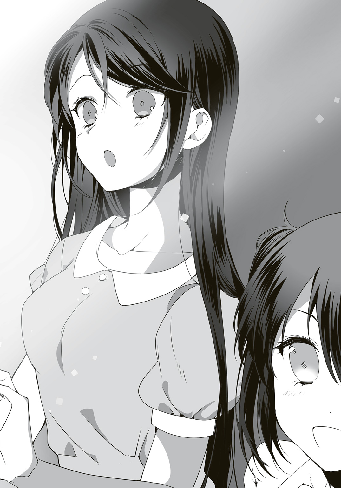
さして珍しくもないのになぜ人だかりがあるのだろうという疑問は、近づくと氷解した。
なんとカワウソ舎の前に透明の筒が出っ張っており、その先にある四角い透明のケースにカワウソたちが重なるようにして寝ているのだ。
四方どこからでも、すぐ目の前でカワウソが見られるとあって、大人気になっている。
「わー、これって行動展示ってやつ？」
「へえー、この筒を通るんだ」
寮生たちが物珍しそうに装置を見ている。
カワウソをこんなに間近に見るのは初めてで、春人もついつい折り重なってすうすう眠っているカワウソを凝視してしまった。
「可愛いねー」
女の子たちも透明のケースを覗き込んでいる。
「いいなあ、触りたい......」
「私、アドベンチャーワールドで触ったことあるで」
「いいなあ......」
瑞貴から露骨に羨望の眼差しを向けられて、璃子がたじろいだ。
「怖いから！ そんな目で見んといて！」
「私......絶対行ぐ！ アドベンチャーワールド」
瑞貴が強い決意を秘めた口調で言う。
「そうやね。パンダに赤ちゃんが生まれたタイミングで行くといいで」
「あ、赤ちゃんパンダ......！」
瑞貴の口がぽっかりと開いた。
「めっちゃ可愛いで」
「いいなあいいなあ!! 絶対行ぐ!!」
あまりの羨ましがりように、さしもの璃子も引き気味だ。
バードケージを通り抜けると、ちょっとした森の小径に出た。木々に囲まれているそこだけ、別の場所のようだ。
「なんか、園内に緑が多いんやねえ」
璃子が感心したように辺りを見回す。菜々美も頷いた。
「広いよねー」
「へごっ!!」
奇声とともに、瑞貴が段差もないところで派手につまずいた。
肩にかけていたバッグがずざざざ――と滑り、ファスナーが開けっ放しだったのか、中身がぶちまけられた。
「あーあーあー......」
その惨状に、寮生たちもすぐには動けず、ただ見つめてしまった。
「ごめんなさい......木を見上げて歩いていたら、つまずいて......」
瑞貴が慌てて落ちたものを拾い、バッグに戻す。
「あんた、いつにも増して鈍くさいなあ。気が散りすぎちゃうん？」
「そうかも......。だって、憧れの上野動物園だよ？ どこ見ても楽しい！」
「まあなあ、あんたの気持ちもわかるけど、もうちょっと落ち着きや」
「そうそう。怪我が増えるしね」
菜々美も心配そうに擦り傷だらけの瑞貴の足を見る。
落ちたものを拾い終え、小径を出ると、そこはライオン舎だった。
洞窟のような施設の中に入ると、ガラスの前に人だかりができている。
「何なに？」
さっきのカワウソのように、珍しいものが見られるのではと期待が高まる。
そして、その期待は裏切られなかった。
「わあ......！」
思わず感嘆の声が出てしまう。
ガラスの真ん前で、どっしりとした雄ライオンが肉の塊にかぶりついていたのだ。
「おー、迫力あるさー」
小柄な真帆を前に出してやり、その肩越しに春人は食事中のライオンを見た。
「ライオンって顔が大きいんだね」
「あんなもんにかぶりつかれたら、ひとたまりもないなあ」
動物園慣れしている璃子も、食事中のライオンは珍しいらしく、まじまじと観察している。
「上野動物園のライオンはねえ、希少なインドライオンなんだよ」
いきなり瑞貴が豆知識を披露し始めた。
「アフリカのライオンに比べて、少し小柄なんだって」
「へえ」
「なんでそんなに詳しいん？」
璃子が怪訝そうに尋ねる。
「えっ、ホームページとかに載ってるよ......」
「あんた、わざわざそんなん読んでるん......」
「そげん当たり前たい。好いとーもんについてん情報は、すべてチェックすっとがオタの基本やろーもん」
菜々美が大きく頷く。
「私、オタクじゃないけど......」
瑞貴が戸惑ったように言う。
「何言ってるの！ 充分、オタだよ。動物園オタ。あと動物オタ」
否定をしてみたものの、あっさり一蹴されて瑞貴が呆然としている。
「そうなんだ......私、オタクなんだ......」
「そうだよ。ジャンルは違えどナカーマ！」
菜々美がガッと瑞貴の肩を抱く。
「瑞貴は私とホラー仲間でもあるよね！」
対抗するように、真帆が瑞貴の腕に手をからめる。
両サイドからがっちり腕を摑まれ、瑞貴がおろおろしている。
「あんたら瑞貴で遊んでないで、次に行くで！ ......次は何見るん？」
璃子が地図を覗き込んできた。
「えーと、ゴリラが近いね」
道なりに進むと、ゴリラ舎に着いた。ライオンやトラと同じくガラス張りで、中は木々が生い茂り、小さな森のようになっている。
「あ、思ったより小さいね」
抱っこできそうなサイズのゴリラが、木の枝を摑むと目の前を走っていく。
何頭もいたが、皆の目を引いたのは岩の上にいる、食事中の一頭のゴリラだった。
「ね、あの子！」
「あれ、ブランケット？」
頭からピンクのブランケットをかぶっているゴリラなど、春人も初めて見る。
食い散らかしているのは、どうやら白菜のようだ。
「ゴリラって白菜食べるんだ......」
「それより、なんでブランケットをかぶってるの？」
「さ、さあ......」
寒いわけではなさそうだが、ブランケットをかぶっている姿が様になっているのを見ると、いつもかぶっているようだ。
「ね、あの子じゃない？」
瑞貴が指差したのは、壁に飾られたゴリラたちの紹介写真だ。その中で一頭だけ、ピンクの布をかぶっているゴリラがいた。
「やっぱりメスなんだ～。布をかぶるのが大好きなんだって」
「面白いねー。個性があるんだなあ」
ホッキョクグマやサル山を見て歩いていくと、東園のどん詰まりに着いた。
「広いなあ......」
「これまだ、半分だよ。東園はだいたい見たから、西園に行く？」
春人が言うと、寮生たちが首を振った。
「その前に昼ご飯にしない？ お腹空いた！」
「じゃあ、ここでお昼にしようか。売店もあるし」
「実は、お弁当を作ってきました！」
菜々美の宣言に、春人は寝耳に水だったので驚いた。
「えっ、お弁当？」
「皆で早起きして、食堂を借りたんだよねー」
「そうそう」
璃子たちが顔を合わせて頷きあう。
同じ寮内にいたのに、全然気がつかなかった。
「だって、朝の点呼のときは――」
言われてみれば、いつも寝間着で眠そうにしている寮生たちが、ちゃんと制服に着替えていた。
「ありがとう......」
「大したもんちゃうから、期待せんといて！」
照れくさそうに言う璃子たちと一緒に、春人は無料休憩所の中に入った。
中はほどよくすいており、五人は奥のテーブル席に着いた。
「うわあ......」
寮生たちが開けてくれたお弁当には、ぎっしりとおにぎりが詰められていた。
「中身は梅干しと鮭とおかかだよー」
「えーとな、私が持っていたのが梅でー」
「えっ、違うよ、私が梅で、璃子が鮭でしょ？」
女の子たちがわいわいと話し合いを始めた。どうやらおにぎりの中身がわからなくなったらしい。
「どれも好きだから、別に何でもいいよ」
「そう？」
瑞貴がもたもたとお弁当箱を開けた。
「こっちはおかず。ウィンナ炒めと卵焼き。それからほうれん草のごま和え」
「すごいねー。朝から大変だったでしょ。ありがとう！」
春人は素直に感謝し、手を合わせた。
女の子たちの手作り弁当なんて初めてだ。きっとあの焦げたウィンナは、瑞貴が作ったのだろう。
「いただきます！」
朝から歩きづめでお腹がぺこぺこだ。寮生たちも同じと見え、あっという間にお弁当は空になった。
「お腹いっぱいー」
「作りすぎたかと思ったけど、結構食べられたね」
お弁当を片付け、五人は立ち上がった。
「じゃあ、西園に行こうか。えーと、モノレールもあるし、歩いても行けるけど」
「せっかくだから歩いていこうよ。五分もかからないでしょ？」
瑞貴がこんなに積極的に発言する姿が珍しく、春人は思わずまじまじと見つめてしまった。
本当に、最初会ったときからは考えられないほどいろんな顔を持っている子だ。
これからももっともっと、別の顔を見てみたい。何が好きで、何を楽しむのか知りたい。
「そうだね。あ、途中でエミュー見られるよ」
「エミューって何さー？」
「ダチョウみたいな大きい鳥だよ」
「へえ――――!!」
真帆はまったく知らないのか感心している。
「人懐っこくて可愛いで。姫路セントラルパークやったかな。森みたいな所で放し飼いになってて、散策しているとエミューがのっそりのっそり後をつけてきて面白かったわ」
「......いいなあ、関西」
またもや瑞貴の羨望の眼差しを受け、璃子がびくりとした。
西園方向に歩いていくと、ゆったりした歩道の脇をモノレールがのんびり走っていく。
「小さくて可愛いモノレールやね」
「一分半で着くんだって。徒歩でも五分かからないね、きっと」
「あ、ねえ下！」
めざとく見つけた菜々美が声を上げる。
歩道より少し低い場所に、エミューが一羽いた。
「おとなしいね」
「大きいなあ......可愛い」
瑞貴が手を差し出そうとするのを全員で止め、再び歩き出す。
『いそっぷ橋』と書かれたゆったりした石橋を渡ると、目の前に不忍池が広がる。
「わー、すっごい広い池だね！」
初めて見る寮生たちが感嘆の声を上げた。
「地図を見ると、動物園の敷地と同じくらいの大きさだね......」
「えーと、もうすぐレッサーパンダがいるらしいけど......」
地図を見ながら春人が言うと、瑞貴が血相を変えて辺りを見回した。
「レッサーパンダ!! 見だこどない!!」
「そ、そうなんだ......」
「あ、いだ！」
橋から身を乗り出すようにして、瑞貴が下を覗き込む。
「ねえねえ！ 下にレッサーパンダがいるよ！」
「どこどこ!?」
真帆たちも同じように下を見る。
上から覗くと、真下にある木にレッサーパンダが数匹いるのが見えた。
「可愛い――――!!」
「尻尾が太いねー。シマシマがまたいいねー」
しばしレッサーパンダを堪能して、春人たちは西園に降り立った。
「どれ見る？」
地図を広げる春人の手を、瑞貴がつんつんとつついた。
「ねえ、何かやってるみたい」
指差す方を見ると、立て看板に今日のイベントが書いてある。
そのそばに立っている係員の人が声をかけてきた。
「今でしたら、ハツカネズミに触れますよー。無料ですから、ぜひ」
「えっ」
思いがけないイベントに寮生たちが騒然となった。
「ハツカネズミに触れるてばい！ 私触ったことなか」
「ハツカネズミってあの白くて赤い目のネズミだよね？」
「行ってみようよ！」
寮生たちが弾むような足取りで進んでいくと、『子ども動物園』と書かれた場所に来た。
中に入ると、低い柵の中に様々な草食動物がいた。
「わー、ヤギとかブタとかいる」
「あそこみたいよ。あの一軒家」
柵がある場所の左手に茶色の屋根の一軒家があり、『ふれあいコーナー』と書かれたのぼりが立っている。
そっと引き戸を開けると、中は広々とした土間のような空間だった。
手前に一メートル四方ほどの木箱が置かれていて、人が数人いる。春人たちは木箱をぐるりと囲んだ。
木箱に敷かれたオガクズの上に、真っ白いハツカネズミが十匹ほどおり、わさわさと元気に動いている。
「わあ......」
「手を水平にして近づけると上ってくるよ」
係の人に教えてもらい、さっそく春人は手のひらをそうっとハツカネズミに近づけた。
すると、何の躊躇もなく、するっとハツカネズミが手の上に乗ってきた。
「わあ！」
手の上でちょこちょこと動いてくすぐったい。ハツカネズミはとても軽くて、可愛らしかった。
「わ、私もやる！」
瑞貴が同じように手のひらをハツカネズミの前に出すが、なぜか隣の春人の手にばかりハツカネズミが上ってくる。
「わ！ 四匹も！ って、腕に上ってきた！」
「......いいなあ」
瑞貴が恨めしそうに見てくる。
「じゃあ、俺の手に近づけて。ネズミを渡すから」
春人がそうっと手を寄せると、ハツカネズミがするっと瑞貴の手に移った。
「わあ！ やった!!」
瑞貴は大喜びだったが、瑞貴と少し手の触れた春人も顔に出さなかったが嬉しかった。
「うわあ、どんどん上ってくる!!」
璃子たちの手にもハツカネズミが争うようにして上ってきている。
「なんかくすぐったいねー」
「面白いなー。ハムスターとはまた違うね。動きが速い」
ハツカネズミを充分堪能したのち、五人は子ども動物園を出た。
西園内を歩き出すと、ペンギンやフラミンゴが見える。だが、瑞貴はさほどはしゃがなかった。
「どうしたの？ あんまり珍しくない？」
「ううん、その奥にいる動物が楽しみで」
「......？」
ケージの前に立つと、瑞貴がくるっと振り返った。
「ハシビロコウだよ!!」
「ハシビロコウ......？」
聞き慣れない名前に、全員首を傾げる。
「何それ？ 関西の動物園では見たことないなあ」
「璃子も知らないの？ まあ、ハシビロコウは絶滅危惧種で全国でも四箇所くらいしか見られる動物園がないがらね」
瑞貴が嬉しそうに声を上げる。
「あの大きい鳥だよ！ じっと動がないこどで有名なの！」
指差す方を見ると、茂みの奥に大きいくちばしをした変わった顔の鳥が二本足ですくっと立っていた。
体長は一メートルを超すだろう。青みがかった灰色の羽毛といい、ペリカン並みの大きいくちばしといい、異彩を放っている。
そして、瑞貴の言う通り、作り物のようにぴくりともしない。
「うーん、ちょっと遠いなあ」
瑞貴が残念そうに、いろいろ角度を変えて覗き込んでいたときだった。
いきなりハシビロコウがばっと翼を広げたかと思うと、翼を羽ばたかせ、地面すれすれを滑るようにして飛んできた。
「うわっ!!」
大きく羽ばたいてブレーキをかけたかと思うと、目の前の茂みにハシビロコウがざっと着地する。
フェンス越しとはいえ、ほんの三十センチほど前に立つハシビロコウに全員の口がぱっくり開いた。
「ハ、ハシビロコウが飛ぶどごろを見れだ!!」
瑞貴は感激してわなないているし、璃子たちは歓声を上げている。
「大きい――――！」
「すっごい、この子、サービス精神旺盛やな！」
さっそく寮生たちが写真を撮りまくる。人に慣れているのか、ハシビロコウはまったく怯える様子もなく、じっと立っている。いや、どちらかと言えば堂々とふんぞり返っているようにも見える。
「ね、一緒に撮ろうよ」
「いいね！」
ハシビロコウがまったく動かないので、一緒に記念写真まで撮れた。
「はー、すごい！ やっぱり今日来てよかった！」
瑞貴が満面に笑みを浮かべる。
「そうなの？」
「だって、ハシビロコウが飛ぶどごを見られだんだよ？ しかも目の前さ来てけるなんて、すっごくついでる!! ラッキーだよ！」
笑顔の瑞貴に、春人は胸を衝かれた。
ずっと、自分の不運体質を呪っていた。中学時代、一緒の班になったクラスメイトには露骨に嫌な顔をされ、ため息をつかれた。
でも、今は俺と一緒にいてラッキーだと言ってくれる子がいる。
思わず涙ぐみそうになり、春人は慌てて顔を振った。
「なーなー、あっちにオカピがおるで！」
璃子に手招きされ、春人たちはオカピ舎に向かった。
「オカピは初めてやわ!! これもすっごい希少な動物やんな？」
「そうそう。前にズーラシアで見たような......」
「へえー。模様が綺麗だねー。変わってる!!」
皆が珍しそうに柵の中を覗き込む。
「瑞貴ちゃんもオカピは初めて？」
振り向いたそこに、瑞貴の姿はなかった。
「あれ......？」
春人は呆然とした。璃子と真帆、菜々美はいる。だが、瑞貴だけが忽然と姿を消していた。
「えっ？ 瑞貴は？」
他の女子も驚いて、辺りを見回す。
「まだハシビロコウを見てるのかな？」
慌ててハシビロコウの柵まで戻ったが、やはり瑞貴の姿はない。
「え、なんで？ さっきまでいたのに......」
電話を鳴らしてみるが、応答がない。
しばらくその場で待ってみたが、戻ってくる気配がない。春人は心配でいたたまれなくなってきた。
「手分けして探そうか。三十分後に入り口のおみやげ屋さんの前でどう？ もし途中で見つかったらメールかラインして」
「わかった！ 私はキリンの方を見てみるわ」
「私、この爬虫類館に行ってみるばい」
「私は不忍池の方ー」
「じゃあ、俺は来た道を戻ってみる！」
春人は手を挙げると、東園の方に向かった。
一言も言わずにいなくなるなんて、どうしたんだろう。誘拐？ まさか、こんな開放的で人目のある場所でそんなわけはない。
春人は気が気ではなく、駆け足で辺りを見回しながら瑞貴を探した。
いそっぷ橋を渡って東園のモノレールの駅が見えてきても、瑞貴の姿はない。スマホを見てみたが、誰からも連絡はなかった。
とにかく、無事でいてほしい――！
そう必死で願いながら休憩所の脇を通ると、テーブルの下に身をかがめている瑞貴の姿が見えた。
「あっ！」
安堵が胸に広がり、春人は一瞬声が出なかった。
「み、瑞貴ちゃん......」
声をかけると、瑞貴がハッとしたように顔を上げた。その顔は青ざめて、瞳が潤んでいる。
「ど、どうしたの？ 大丈夫？ 急に黙っていなくなるから、皆心配してるよ！」
「ごめんなさい......！ キーホルダーば落どしちゃったみたいで......慌てで元来た道ば探してだの」
「キーホルダー？」
「白い猫のキーホルダー......。姉にもらったもので、大事なの......」
「えっ」
いきなり、『偽鈴木志織』こと、神子沢麗香の話題になり、春人はぎくりとした。
「そっ、そうなんだ。お姉さんがいたんだね」
口止めされているので、とりあえず知らなかった振りをする。
動揺している瑞貴は、春人のぎこちない態度にまったく気づいていない。
「うん......ちょっと事情があって、今は連絡が取れないの。だから、私と思って肌身離さず持っててねって渡されたキーホルダーで......」
「......」
あの麗香のことだ、そのキーホルダーにＧＰＳが入っていてもおかしくない、などと思ってしまった。
「来た道を探してきたんだけどなくて......」
瑞貴がしょんぼりとうつむく。今にも泣き出しそうだ。
「とにかく、探そう！」
「うん！ ごめんね、動転しちゃって、何も言わずに来てしまって......」
「無事ならいいよ！ 皆にも連絡したから、後で合流しよう」
瑞貴が見つかったことをラインで全員に送り、春人は身をかがめて白いものが落ちていないか見ていく。瑞貴も必死で端からずっと丹念に見ていった。
「ないね......」
瑞貴が泣きそうな顔になっている。確かに状況は絶望的だ。この広い園内で小さなキーホルダーが見つかるだろうか。
最悪、遺失物届けを出して帰るしかない。
時刻はもうすぐ午後一時半。集合時間まであと三十分ほどしかない。
「なんで落どしたんだべ。スマホば取り出したとぎに落ちだのがな......」
「あっ」
春人はハッとした。
「あの、ゴリラ舎に行く前の森みたいな小径!! あそこでバッグの中身をぶちまけたよね？」
「あっ......」
瑞貴も思い出したようで、みるみる顔に血の気が上る。
「きっとあそこだよ!!」
二人は走って森の小径に戻った。
瑞貴がバッグをぶちまけた辺りの茂みを探す。
すると、草の陰に白っぽいものがあった。
「あった！ あったよ！」
猫のキーホルダーを掲げると、瑞貴が転がるようにして駆け寄ってきた。
「はい」
瑞貴がキーホルダーを受け取ると、春人を見つめた。
「ありがとう......」
目にうっすら涙を浮かべた瑞貴は、思わず抱きしめたくなるほど可憐だった。
春人がぐっと衝動を堪えたときだった。
「あっ、ごめん！」
春人のそばを通った大学生くらいの男性が、すれ違いざまドンと背中にぶつかってきた。
「おっと......」
よろけた春人は、そのまま瑞貴にぶつかった。思わず抱きしめる形になってしまう。
ふわり、と甘い花のような香り。さらりとした髪が頰を撫でる。
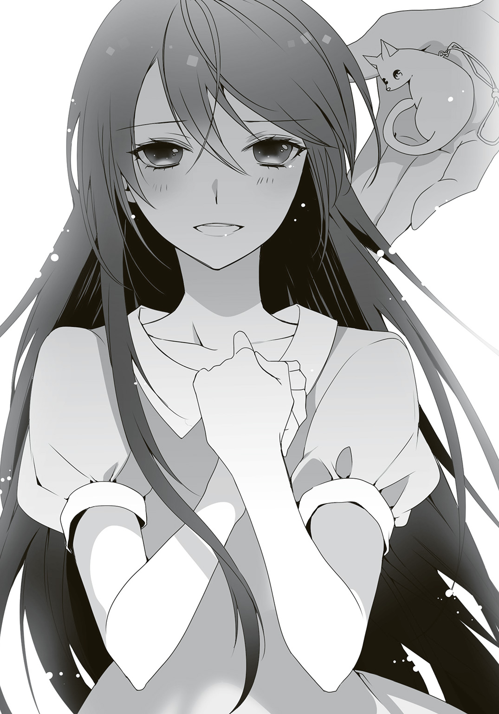
「わあああああ、ごめん!!」
春人は慌てて離れた。ラッキーだったが、瑞貴に嫌がられたくない。
「えっと、入り口脇のおみやげ屋さんで待ち合わせているから、行こう!!」
「うん!!」
二人が走りながら入り口に向かうと、土産物店の前で待っていた三人が大きく手を振ってきた。
「瑞貴！ 良かった！」
「どしたん、心配したで！」
三人が瑞貴を囲むと、瑞貴がぺこりと頭を下げた。
「ごめんね、落とし物しちゃって、探してたの......」
「そんなん、皆で探すのに......」
「動転しちゃって......」
「無事でよかったよー」
寮生たちに囲まれて、瑞貴がまた泣きそうになった。
「じゃあ、行こうか」
そろそろ集合時間だ。促す春人の肩を菜々美が叩いた。
「ね、せっかくだからお土産買おうよ。今日の記念に」
「いいね！」
春人たちはさっそく近くの店に入った。
そこには、動物関連のグッズがずらりと並べられていた。ひときわ目を引くのがパンダグッズだ。
「やっぱりパンダかなー」
すると、瑞貴がじっとパンダのぬいぐるみを見つめている。
「それ、気に入ったの？」
「うん」
璃子がにこりと笑った。
「じゃあ、それにしようよ。記念に皆で買わへん？ 割り勘でレクリエーションルームに飾るのはどう？」
璃子の提案に、全員が笑顔になった。
「いいね！」
春人は嬉しそうに微笑む瑞貴の顔にホッとした。
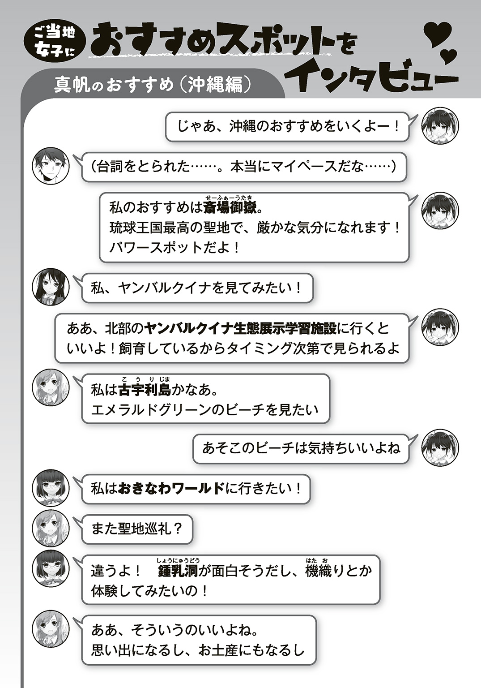
エピローグ
「そうか臨時休館だったか......」
二時に駅に戻った春人たちは先生に事の次第を報告した。
「ですので、近くにある上野動物園で動物の生態を勉強してきました」
春人はドキドキしながら、先生の顔を窺った。勝手に目的地を変更してしまったが、大丈夫だろうか。
「リーリーとシンシンはもう十歳なんです！ パンダは五本の指の他に、六番目の指のような役目をする骨がついていて、それで笹を挟んでるんです！」
瑞貴が今日知ったばかりの知識を得意げに披露したので、先生が苦笑した。
「そうか......。こちらの確認不足で申し訳なかった。学校に戻ったら、チケット代は精算するから。レポートは上野動物園で大丈夫だ」
「やった！」
春人たちは微笑みあった。
終わってみれば、瑞貴の行きたかった上野動物園にも行けて、楽しく過ごせた最高の校外学習になった。
＊
寮に戻ると、春人はレクリエーションルームに飾られたパンダのぬいぐるみを見つめた。
動物園での楽しい思い出が蘇る。
こんなに幸せでいいんだろうか。
――過去に囚われてどうする!!――。
浩輔の言葉をふっと思い出す。
そうだ。昔とは全然違う。今、自分は高校に来て、女子寮の寮長なんかやっているのだ。
そのとき、瑞貴が部屋に入ってきた。春人を見ると、顔をほころばせる。
「お疲れ様！ 楽しがったね」
自然に方言で話す瑞貴は、とてもリラックスしていた。
「上野動物園、すごく良かったね」
「でしょ!! 今度は多摩動物公園さ行ぎたいなー。あど、ホワイトライオンがいる東武動物公園ど、ズーラシアも！ ね、一緒に行ごうよ！」
目を輝かせた瑞貴に誘われ、春人は胸がいっぱいになった。
痴漢と間違われるという最悪の出会いからは、想像もできないほど仲良くなれた。
そのことはとても嬉しいけど、もう一歩近づきたい。
そのとき春人は、瑞貴と二人きりということに気づいた。
これは――もしかしてチャンスなんじゃないのか？
春人はあたふたと辺りを見回した。
告白は二度失敗している。
一回目はそもそもまともに言うことすらできなかった。
二回目は勘違いされて流された。
はっきりちゃんと伝えて、返事を聞きたい。
――頑張って！
幽霊の寮生の言葉が自分を後押ししてくれるのがわかる。
後悔だけはしたくないのだ。春人は必死で自分を鼓舞した。
「み、瑞貴ちゃん！」
まず、名前を言えた。
瑞貴がこちらを見ている。立ち止まったら、そこで終わりだ。一気に言うしかない。
春人はぐっと拳を握りしめた。
「きみが好きです！ 付き合ってください!!」
ほぼ叫ぶようになってしまったが、最後まできちんと言えた。
顔が火照って、鏡を見なくても真っ赤になっているのがわかる。心臓の音がうるさくて、頭がガンガンする。
春人は恐る恐る瑞貴を見つめた。
瑞貴は優しく微笑んでこちらを見ている。
春人は息を飲み、彼女の唇が開くのを待った。
あ と が き
お読みいただき、ありがとうございます。
二巻ということで、だいぶ仲良くなってきた寮生たちが心を許し始め、素の顔を出してきています。彼女たちのことをもっと深く知ってもらえたんじゃないでしょうか。
そして、新たな方言女子も登場させることができました。
内容も、寮の幽霊騒ぎから、合コン、バイト、校外学習と様々なモチーフを書けて楽しかったです。いずれもこの話を作り始めたときから考えていたネタなので、一巻のおまけページのキャラ紹介を見てもらえると、少し仄めかされている箇所があると思います。
あと小ネタを少々。寮にやってくる白い猫は一巻の新刊特典のＳＳに出てきた猫です。読んでいなくても問題ないのですが、念のため。
ちなみに作中に出てくる沖縄の某廃墟ホテル、上野動物園などは実際に取材に行っています。それぞれ魅力のある場所なので、ご興味ある方は足を運ばれてもいいかもしれません。
最後に謝辞を。
担当さんとは、今回も楽しくお仕事をさせていただきました。打ち合わせのたびにモチベーションが上がるので、とても有り難かったです。
マニャ子さんには魅力的なイラストを描いていただいて感謝です。原稿が上がった後、イラストが送られてくるのが楽しみでした。
そして、AFTERGLOWさんのデザインセンスのおかげで、素晴らしい仕上がりになりました。ずっと一緒にお仕事をしてみたいと思っていたので、引き受けていただけて嬉しかったです。
今回も方言監修で様々な方にお世話になりました。改めて、お礼を申し上げます。
それでは、またお会いできますように。
２０１６年３月
城崎火也拝
著者紹介
城崎火也 きざき かや
東京都在住。趣味は旅行。最近は世界遺産に行くことが多いです。次は軍艦島に行く予定。
近著はフリーホラーゲームのノべライズ『雨宿バス停留所』（ＫＣＧ文庫）。
illustration
マニャ子
フリーでイラストレーターをやっているマニャ子ともうします。
主にライトノベルの挿絵、ソーシャルゲームのイラスト等を描かせて頂いております。
ロングのイケメンも大好きです。
ダッシュエックス文庫DIGITAL
女子寮の寮長になった俺は、ご当地女子と青春できるだろうか２
著者 城崎火也
© KAYA KIZAKI 2016
２０１６年４月30日発行
この電子書籍は、ダッシュエックス文庫「女子寮の寮長になった俺は、ご当地女子と青春できるだろうか２」
２０１６年３月30日発行の第１刷を底本としています。
発行者 鈴木晴彦
発行所 株式会社 集英社
〒１０１－８０５０
東京都千代田区一ツ橋２丁目５番10号
０３－３２３０－６０８０（読者係）
制作所 株式会社ＩＣＥ
本作品の全部また一部を無断で複製、転載、改竄、インターネット上に掲載すること、および有償無償に関わらず、本データを第三者に譲渡することを禁じます。なお個人利用の目的であっても、コピーガードを解除しての複製は、法律で禁じられています。